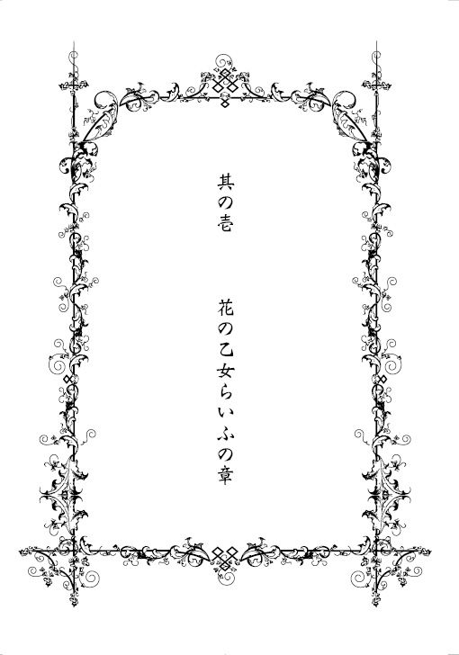

| 薔薇と牙【SS付】【イラスト付】 ～イノチ短シ 恋セヨ乙女～ (ロイヤルキス文庫) | |
| 花衣沙久羅 | |
| (2009) | |
この物語はフィクションであり、実在の人物・団体・事件等とは、いっさい関係ありません。
イラスト・氷堂れん
いのち短し 恋せよ少女
朱き唇 褪せぬ間に
熱き血潮の 冷えぬ間に
明日の月日は 無いものを
いのち短し 恋せよ少女
いざ手をとりて 彼の舟に
いざ燃ゆる頬を 君が頬に
ここには誰れも 来ぬものを
いのち短し 恋せよ少女
波に漂う 舟の様に
君が柔手を 我が肩に
ここには人目も 無いものを
いのち短し 恋せよ少女
黒髪の色 褪せぬ間に
心のほのお 消えぬ間に
今日はふたたび 来ぬものを
────── 《 ゴンドラの唄 》
大正四年 吉井勇作詞・中山晋平作曲
（壱）
「ほう」
隣のシイトで、櫻子さんが深い感動の溜息を吐きましたが、かほる子は気が付きませんでした。
其れ程に、此の時耳にした歌は素晴らしく、かほる子の魂を深く貫かずにはいなかったのです。止め処なく溢れる涙にさえ気付かず、かほる子は、只、只、一心にステエジを凝視ておりました。
満場の拍手の中を、たった今『ゴンドラの唄』を歌い終えられたばかりの人気女優、松井須磨子さんが両手を広げ乍ら優雅に現れます。
かほる子は思いました。
本統に目映い方。
これがスタアの気迫というものなのだわ。
嗚呼、あたしもあんな風に堂堂とした貴婦人になれたら...！
そうして懸命に拍手をしていた時、櫻子さんの肘が軽くかほる子の腕に当たりました。
かほる子は一寸吃驚して、櫻子さんの方を見ます。
煌めく黒ビイズのバッグから美しい薔薇の刺繍が入った半巾を取り出し、かほる子の膝にそっと置くと、櫻子さんはちいさな声で耳打ちしてきました。
「かほる子さん、涙をお拭き遊ばせ。周囲の方方に見られていてよ。其れに」
櫻子さんの声はいっそう小さくなります。かほる子以外の誰にも聞こえない声です。
「尖っているわ。歯」
「あッ」
かほる子は思わず、櫻子さんの半巾を手の中でぎゅっと握り締めました。
漸く自分が泣いていることに気付いたのです。
斯ういう風に人前で没頭したり興奮したりしてはならないのに。
櫻子さんに言われなければ、何時もこんな按配です。
何時だって所処構わずの妄想屋さんで、自分の考えに夢中になると何も見えないウッカリさんなのです。
駄目なかほる子。
かほる子は気落ちして俯いて仕舞いました。
「まぁ、かほる子さん」
櫻子さんが隣席からかほる子を励まします。
親友が自分では涙を拭えない程動揺して居るのを見ると、櫻子さんは手ずから半巾でかほる子の頬をそっと押さえてきました。
かほる子は櫻子さんの大胆な仕種に驚愕かずに居られません。
周りの方方の目が有るから涙をお拭きなさいと謂われたばかりなのに、こんな風にお友達に甘えて仕舞って、皆さまから笑われて仕舞って居るのではないかしら？
然様思うと、かほる子は顔から火が出そうな程恥ずかしく感じました。
通常は大人の方の少ない山の上の女學校でヒッソリと過ごしているかほる子には、今日の様に大勢の大人の方方が集まる場所に居る事は、大変な緊張を伴う事なのです。
けれども、隣から櫻子さんが明るく囁いてくれたので、そんな卑下した気持も直ぐになくなりました。
「ほうら、此でもう大事ないわ。元通のお綺麗なかほる子さんになってよ」
櫻子さんの初夏の風の様に澄んだ声は、何時もかほる子をホッとさせます。
櫻子さんはかほる子とは同い歳のリリスで、鷹尾の山の上に建っている東京野薔薇女學校の寄宿舎〝メイゾン・ド・ロゼ〟では同じお室のなかよしです。
よく晴れた長月の大安の日に、久しぶりに外出許可をいただいて、斯うして二人なかよく連れ立って帝國劇場へとやってきているのです。
今かかっている藝術座のお芝居に行こうと誘ってくれたのは、櫻子さんでした。
藝術座の第五回公演、ツルゲエネフ作の『その前夜』という翻訳劇です。
此は主演女優の松井須磨子さんの歌う『ゴンドラの唄』が大ヒットをして、今や大変な人気の演し物ですから、チケットを手に入れるのは困難だった筈です。
尤も、雲母伯爵の御令嬢であられる雲母櫻子さんにとっては、案外と容易い事だったのかも知れませんが。
幾度ものカアテンコオルが終わり、二人の少女は大勢の人でごった返すロビイを通って外へと出ようとしていました。
今日の二人の格好は、何時も身に着けている様な海老茶袴に黒革ブウツの女學生姿ではなく、大人っぽい裾ぼかしの紋付振り袖を着て、とても華やかです。
長い髪は女學生らしく後ろへ垂らしたままですが、大きなリボンと金色の髪飾りが二人の艶やかな黒髪を引き立てています。
行き過ぎる人人が振り返って見る様な事も初中終なのですが、かほる子は先程から自分の躰から香る甘い匂が気になって、其れ所処では有りません。
櫻子さんからヘリオトロオプという舶来の香水を借りてつけてきたのですが、どうも其れが香り過ぎている様な気がするのです。
当の櫻子さんは伯爵家の御嬢様ですから、御家族のお知り合いも多い様で、色色な方方に話し掛けられて御挨拶なさっておられます。
正装した男女に囲まれたかほる子は、如何してよいか分らず、おろおろと視線をさまよわせるばかりです。
櫻子さんの様に堂堂としておれば好いのでしょうが、かほる子にはそんな度胸は有りはしません。
実を謂えば、帝國劇場へ来たのも此が初めてで、どちらに出入り口が有るのかなども皆目見当が付かないのでした。
『臭い』
「！」
其の時、不意に男の方の声が響いてきて、かほる子は飛び上がりそうになりました。
まるで自分の事を謂われた様な気がしたのです。
同時に、誰かに視られている様に感じました。
首筋の産毛が総毛立つ様な、恐ろしい視線を項に強く感じたのです。
けれど、キョロキョロ辺りを見回してみましても、近くに其れらしい顰めっ面で自分を凝視る男の方は見当たりません。
自分の事では無かったのだわと、かほる子がホッと胸を撫で下ろした時、漸く御挨拶の嵐から解放された櫻子さんが、背後からつんとかほる子の袖を引いてきました。
「かほる子さん。わたし、みなとやさんで夢二模様の半襟を観たいのだけれど、寄り道をしても構わなくって？」
「え。嬉しい」
かほる子のほっぺたは忽ち紅に上気しました。
昨年の神無月、呉服町にオウプンしたばかりの竹久夢二のお店港屋絵草紙店は女學校の生徒たちの憧憬の的です。寄宿舎でも幾人か、夢二の千代紙をみせてくださる先輩がいて、かほる子は常時とても羨ましく感じていたのでした。
「かほる子さんなら、屹度そう仰有ると思っていたわ」
かほる子の嬉しそうな顔を覗き込み乍ら、櫻子さんも又嬉しそうに微笑みました。
「かほる子さんの描かれる語り絵の為にも、ああいう所処でセンスを磨くのは大切な事ですもの」
「あたしの絵なんか、たいした事...」
「ああら、其れじゃあ、かほる子さんの語り絵がだぁい好きで、何枚もコレクションしているわたしのセンスも、たいした事有りませんのねえ？」
「櫻子さんたら」
かほる子はぽうっと頬を染めて俯きます。
「わたしね、かほる子さん。色色な人が沢山出て来るかほる子さんのお話が、一等好きなの。みぃんなで仲良くして、其れまで知らなかった人も家族みたいになるでしょう？ ああいうの好いわよね。絵が又、観てる此方までとっても幸せになる絵なのよ」
「そ、そうかな？ 有難う。あたしなんかの語り絵、そんな風に褒めてくだすって嬉しい」
「あぁら、当然よ。わたしはかほる子さんの絵のフアン一号ですもの」
絵を描く事は、何事につけても不器用なかほる子の、たった一つの趣味でした。
何時だったか、かほる子がスケッチブックに絵を描いているのを見て、あなたまるで呼吸をしている様に描くのねえと、櫻子さんが感心した事が有りました。
実際、会話が余り得意でないかほる子にとっては、絵で示す物語こそが会話であったのかも知れません。
「一寸遅くなったけれど、まだお店、開いていると思うわ。彼方へ寄ってくれる様にうちの幌俥に謂っておくわね」
幌俥というのは、雲母伯爵家専用の人力の事です。
此の日は門限より大分遅れて仕舞いそうでしたので、かほる子は櫻子さんの東京の邸宅へ泊めて貰う約束をしていたのでした。
かほる子はいそいそと櫻子さんの後をついて、ロビイを出てゆこうとします。
と、其の時。
かほる子は背中に又、視線を感じました。
先程も感じた、あの強い視線です。
けれども其れは一瞬のことで、振り返っても視線の持ち主を見つけることは出来ませんでした。
あたしはリリスなのに？
かほる子の胸に急に不安が押し寄せてきました。
此処に長く居てはならない。
そんな気がしたかほる子は、急いで櫻子さんの後を追ったのでした。
（弐）
かくして、帝劇のロビイでは訳の分らぬ畏怖に駆られたかほる子でした。
が、路面電車の行き交う通りを渡って港屋絵草紙店に着き、色とりどりの絵葉書や千代紙を夢中になって眺めてゆく裡、そんな気持は忘れて仕舞いました。
此処には少女達が好む夢一杯の商品が、本統に山と積まれているのです。
尤も、養い子のかほる子には贅沢をする余裕など有りませんから、最初から只眺めるだけで、購入する事など考えてもおりませんでした。
其れが、櫻子さんにどうしてもと乞われて千代紙のセットを贈られた時には、済まない事と思い乍らも天にも昇る心地になりました。あんまり嬉しくって、お店を出てからも綺麗な紙包みを中中手提袋の方へ移せません。
ですから、煉瓦通を歩いている途中で櫻子さんにひっそり囁かれた時には、其の詞の意味が中中直ぐには呑み込めませんでした。
「ええッ!? あの須磨子さまが東京野薔薇女學校の御卒業生ですって!?」
「しぃッ！ 御声が大きくてよ、かほる子さん」
かほる子がびくっとして首を引っ込め、二人の少女は慌てて周囲を確かめます。
「ごめんなさい。でもまさか、大スタアの松井須磨子さまがそんな」
「知る人ぞ知る、というやつよ。めづらしく外出許可が出たのだって、本統は然様いう大先輩をわたしたちに見せる為だったのだと思うわ」
かほる子はボウッとなって仕舞いました。
なんだか衝撃の多い一日です。
通り沿いの瓦斯燈の黄色い光が、かほる子には随分と明るく感じられました。
「〝いのち短し、恋せよ少女〟」
思わずゴンドラの唄を小さく口ずさみ始めたかほる子に合わせて、櫻子さんも又、歌い始めます。
「かほる子さん。わたし、最後のここんところが一等好きよ。ほら、此の〝今日はふたたび来ぬものを〟って所処」
いのち短し 恋せよ少女
黒髪の色 褪せぬ間に
心のほのお 消えぬ間に
今日はふたたび 来ぬものを
お芝居の余韻に浸り乍ら、四番までを歌いきった時、櫻子さんが出し抜けにそんな事を謂いました。
「わたし達だって同んなじなんだわ。どんなに長生きでも、今日という此の日は二度と巡ってきやしないのよ。ねぇ、かほる子さん、そう思わなくって？ かほる子さん？」
櫻子さんの御声は聞こえておりました。
けれど、かほる子は答える事が出来ません。
両耳を押さえて煉瓦敷きの歩道にうずくまったかほる子に、櫻子さんが動揺して声を掛けます。
「如何遊ばしたの、かほる子さん？ お具合が好くないの？ 嗚呼、不可ない！ もうこんなお時間！ 今夜はお月さんも丸いのに、わたしったら遅くなって仕舞って！」
服部時計店の時計塔を見上げた櫻子さんは、俄に自分のミスに気が付きました。
櫻子さん自身は、月の満ち欠けの影響を受けません。
女學校の授業で習った事を、きちんと身に着けているからです。
けれども、かほる子の方はそういう訳にはいきませんでした。
夢見がちで、授業の最中もつい外の物語を考えついては、教科書の端に絵物語を描くのに夢中になって仕舞うかほる子は、女學校の授業についてゆけない落ちこぼれなのです。
櫻子さんは周囲に人影の無いのを確認すると、躰を傾け、自分の手首を苦しむかほる子の口唇の前に当てました。
一等脈の高いあの辺りです。
「わたしのを吸って！ 早く！」
かほる子は最早抵抗う力も無く、謂われた通りにしました。
そうしてかほる子が僅は楽そうになったのを確かめて、櫻子さんが駆け出します。
「此処で待っていて！ 直ぐよ！ 直ぐにあちらに待たせてある幌俥を呼んでくるから！」
待って、櫻子さん。
あたしをひとりぽっちにしないで。
かほる子は本統はそう謂いたかったのですが、声が出ませんでした。
両耳をきつく押さえている所為で、身動きすら出来ません。
遠くで鳴る音を遮断する方法は、女學校の授業で何度も習って、何度もおさらいをした心算でいたのに。
如何してあたしはサッパリ出来る様にならないんだろう？
此のままでは、月謝の高い女學校に行かせてくれたお祖母さまに申し訳が立たないと、かほる子は切ない気持で一杯になりました。
屹度、現在は前歯も鋭く尖って、異形の変貌を起こして仕舞っている事でしょう。
そういう恥ずかしい姿を、人に見られてはなりません。
其れだけは不可ないのです。
かほる子は必死に自分を抑えました。
櫻子さんがリリスの雫を分けてくれた御陰で、幾らかは先程よりマシになってきます。
かほる子は力を感じました。
優等なリリスの濃い雫を吸収しただけに、聴覚はより深く研ぎ澄まされ、今ではまるで此の世の総ての音が細かく聞き取れるかの様です。
かほる子は橋の欄干にもたれ掛かって、凝然と目を閉じました。
様様な音声が大きな大きな波となって、かほる子の全身を包みます。
大正四年。
此が東京府の一等新しい音。
お芝居を観る前には櫻子さんと銀ブラして、堕落女學生が行くという休茶屋をこっそり覗いて、日吉町のプランタンへも立ち寄りました。
煉瓦通を歩いているご婦人たちはみな、風体髪容を其れはもう美しく飾っていて、吃驚する程綺麗でした。
途中新奇な髪型に出交して、櫻子さんとひそひそ話をして。
ガタゴト大きな音を立てる市街電車の恐ろしい事。
モダーンな形の自動車に仰天していたら、櫻子さんが今度うちのに乗せてあげると笑いました。
上流階級の方方の間では、今は自動車ブウムなのだそうです。
何時もは鷹尾の山奥にこもったまま、外へはめったな事では出られませんから、此の様に素晴らしい贅沢をさせて貰って、かほる子には本統に夢の様でした。
圧倒される様な音の洪水に身を任せ、流れに逆らわない様に態とぼんやりした想いに耽っていた時、不意に大きな悲しみの予感がかほる子の胸を鋭くよぎります。
喚ばれている────。
かほる子はビクッとして目を開けました。
そうして見開かれたかほる子の瞳は、今や赤い血潮の色に染まり、きらきらと輝きを放っています。
リリスが夜の力に完全に目覚めた証拠です。
可恐くはあったけれど、かほる子は迷いませんでした。
きたるべき惨劇からあの子を救えるのは、ただ自分だけ、とハッキリ承知しておりましたから。
（参）
「此の匂...」
皇牙谷中學院の生徒総代でいらっしゃる九条脩季さまは、ミルクホウルの座席に御學友と向かい合って腰掛けようとしていた所処でした。
「如何した、脩季？」
流行の金縁伊達眼鏡を掛けた美男の御學友が、親友のただならぬ様子に声を掛けます。
脩季さまが粋なパナマ帽に大島の十字絣、紺色セル地の袴といった和装であるのに対し、此方の長い髪の男子は、真っ白なハイカラーシャツに、躰にぴったりに仕立てられたフロックコオトといった洋装で、紳士の正装スタイルそのものです。
お洒落で流行にも敏感な此の方は、副総代でいらっしゃる鷹津城美静さまです。
あの鷹津城財閥の御曹司です。
尤も、一方の脩季さまも、天下の九条公爵の御孫君であられ、お若い乍らも、御自身も男爵の称号をお持ちの高雅人です。
皇牙谷中學院の學生達の間では、密かに〝金と銀の殿下〟等と称されている御高名なお二人なのでした。
「いや、何も」
脩季さまは御學友の手前、何もないフリをしようとなさいましたが、矢張り出来ませんでした。
例の匂はきつくなるばかりなのです。
「済まん、美静！ 先に遣っていてくれ！」
「牛乳をか？」
美静さまは優雅に微笑んで聞き返しましたが、其の時にはもう、美静さまの前からは脩季さまの御姿は消えておりました。
余っ程慌てておいでだったのでしょう。
平常冷静沈着で自分にも他人にも厳しく、下級生達には氷結の男とまで囁かれる九条脩季さまです。
そんな脩季さまの然程に動揺した様子を見るのは久方ぶりの事で、美静さまはなんだか興白そうな御顔をなさっておいででした。
（肆）
西洋から輸入された最新式のガソリン自動車が、今にも其の子犬を轢きそうになっている場面を、かほる子は其の赤く輝く瞳に鮮やかに映し出していました。
今救けなければ、あの子は死ぬ。
かほる子の躰は自然に動き出します。もう止まる事など出来ません。
夜の力に目覚めたリリスは、心も躰も解放されて恐れを感じる事も無くなるのです。
真っ白で柔らかな毛に、心で触れます。
裡に流れる脈動に、魂で触れます。
ふわふわと頼りない四本のあんよに、視線で触れます。
子犬がかほる子の気配を感じ取りました。感じ取ったのが、かほる子には分ります。
『もう直ぐよ』
かほる子は自分の心を子犬に寄り添わせました。
戸惑っていた子犬が、嬉しそうにきゅうんと鳴きます。
『イイコね。救けてあげる』
時が止まったかの様な、躰の裡から自分自身が洩れ出してゆくかの様な、どこか寝惚けているかの様な、自分でもよく分らない一瞬です。
周囲の瓦斯燈から、突如として灯りが消えました。
自動車のランプもふっと光を失います。
行成訪れた暗闇の中で、一人のリリスが目にも留まらぬ速さで疾走します。
かほる子は夜の交通事故から一匹の白き子犬を救い出すべく、自分の身を自動車の前に投げ出す心算です。
絶体絶命の危機です。
然し、此の時のかほる子には、自分の身を案ずる気持など欠片も残っておりませんでした。
一つの事を考え出すと、外に気が行かなくなるのが此の方の特徴ねなどと、櫻子さんに謂われた事が有ります。〝此の方〟というのは女學生詞で〝あなた〟と同じ意味なのですが。
然様してかほる子が身を挺して小さき命を庇おうとした寸前に、又してもあの声が耳の奥で鳴り響きました。
帝國劇場のロビイで、耳の奥に警鐘の如く鳴り響いた、あの恐ろしげなる声です。
『よせ────！』
九条脩季さまは、彼女が駆けて移動してゆくのを、彼女が本来発する匂と甘ったるい香水の混じりあった香によって知りました。
先刻、帝國劇場のロビイで思わず、臭いと呟いてしまったあの強い香です。
あの時は本統に小さく口の中で呟いただけなのに、彼女がハタと気付いた様なのに驚愕かされました。
自分はロビイの一等奥におり、彼女が立っている所処からは随分と離れていたのに、あの白い小さな耳には自分の呟きが届いた様なのです。
彼女には屹度自分の声が聞こえる。
何程遠く離れていても。
脩季さまは俄に非常な苛立ちを覚えました。
自分の声が聞こえただけで、相手が誰かも何処に居るかも悟れず、キョロキョロ辺りを見回している彼女を凝視ていると、真に腹立たしい気持が募ります。
今も然様です。
妖しい匂など振りまいてこんな所処まで走らせ、挙げ句、最新式のガソリン自動車の前に突っ込んでゆく様な危険な行為を見せつけるとは、何と忌忌しい事でしょう。
此の九条脩季を意に反して走らせるとは好い度胸です。
然し、どんなに業腹でも、躰は自然に動いていました。
斯うなってはもう誰にも、脩季さま御自身にも止める事は出来ません。
脩季さまは運命に逆らえずに、御自分を解放なさいました。
宿命の夜が、走り出します。
皮膚が裂け、ゴツゴツとした逞しい筋肉が骨に沿って盛り上がります。
軈て、太く濃き体毛が若者のスラリとした全身を覆い始めました。
ルー・ガルーの変容です。
此の世に生きとし生ける人の目では、いまだハッキリとは確認された事の無い秘事です。
然し、其れは闇に隠されていた上、ほんの一瞬の事に過ぎませんでしたから、其の場に居合わせた人人の目には影一つ映りませんでした。
灯りの消えた街中で彼らが感じたのは只、生臭い様な獣の臭いだけでした。
そして其れも、次の瞬間には消え去っておりました。
お濠に落ちたからです。
（伍）
「きゃあ！」
叫ぶ事が出来たのは、ほんの僅少の間だけでした。
何者かに横から体当たりされて衝撃を受けたかほる子の躰は、自動車に激突することは避けられましたが、其の反動でお濠の中にどぶんと落ちて仕舞いました。
かほる子は必死になって水から出ようと足掻きましたが、足掻けば足掻く程、深く沈んでゆく様な心持がいたします。
可愛い子犬は如何したでしょう？
然し、かほる子に子犬を探す余裕は有りませんでした。
濡れて嵩を増した着物が錘となって、かほる子の躰をどんどん水底へと誘います。
可恐いなどというものでは有りません。
先程子犬を救う為に飛び出した勇気は、最早殆ど失われておりました。
今は瞳にも赤い輝きは見られません。
かほる子は心底から水が恐ろしいのです。
遠い昔に溺れた記憶が甦ってきて、かほる子は水の中で絶望に襲われておりました。
嗚呼。もう駄目。
かほる子はこのまま死ぬのだわ。
櫻子さん、御免して頂戴。
お祖母さま、愚図でお間抜けなかほる子をお許し下さい。
せめてあの子犬が救かっていてくれると好いのだけれど。
意識が薄れ、目前が暗くなってゆきます。
真っ暗な水の中を、ゆらゆらと揺らめき乍ら落ちてゆきます。
かほる子は眼を開けませんでした。自分はもう死んでいるものと思ったからです。
其の熱い塊は、突然近くに感じられました。
死んでいると思った躰に、急に生命力が漲り始めます。
此は何？
美味しい。
こんなに美味しいのは初めて。
地獄から天国へと、一気に駆け昇った様な気分でした。
熱い塊がかほる子に非常な生命力を与え続けてきます。
かほる子は熱い塊に口唇を押し付け、必死で吸いました。
飢えた人が食べ物を貪る様に、全力で求め続けました。
其の熱い塊が苦痛に低い唸り声を上げる様になっても、かほる子の弱った躰は気付かずに求め続けたのです。
暫くして、かほる子は漸く満足して口唇を離しました。
心地好い感覚が続き、軈て、随分と時が経ったかに思えました頃。
近くでキャンと小さな鳴き声がしました。
まァ。
ちっちゃな子犬が行成大きくなったわ。
ふさふさとした温もりに全身を包まれて、かほる子は幸せで一杯になりました。
もうなんにも心配する事なんか有りはしません。
巨大な強い犬が、かほる子を守護ってくれているのです。
そんな満ち足りた心持になって、かほる子はゆっくりと眼を開けました。
白い巨大な犬が、瞳に映し出される事を期待して。
「────」
かほる子はポカンとしました。
目前に居たのは、大型犬でも子犬でもなく、一人の和装の青年だったからです。
濡れそぼった彼の髪からは水滴が滴り落ちています。
気付けば自分もびしょ濡れでした。
かほる子はやっと自分がお濠に落ちたのだと認識します。
若しや此の方が自分を引き揚げてくれたのでしょうか？
かほる子は訝り乍ら、目前の若者を見上げました。
良く良く見れば、着衣は乱れ、何やらご苦労下さった様子に思えます。
本統に救けていただいたのなら、御礼を申し上げなければなりません。
「あの」
かほる子は口を開きかけます。そして、其のまま息を呑みました。
青年の鋭い眼に引きこまれたのです。
其処には無限の漆黒が在り、かほる子の知らぬ永久の孤独が在りました。
いえ、知らぬと思いましたが、本統は知っているのかも知れません。
とても親い感じがしたからです。
黒い瞳の奥に、蒼い闇が見えます。
そんなものは、此までに一度も、誰の瞳にも見えたことは有りません。
かほる子は酷く恐ろしく感じる一方で、何故か青年から眼を離す事が出来ず、暫くは只凝視るばかりで声が出ませんでした。
やっと出たと思ったら、一語だけでした。
「子犬は？」
「............」
青年が其れでも凝然と此方を眺めてくるので、かほる子は息苦しくなります。
心の何処かでは非常に可恐いと感じているのに、猶も視線を外すことが出来ぬのです。
否、出来ぬのではありません。
此は自分の意志です。
自分こそが彼を凝視たままで居たいと感じているのだと気付かされた時には、心の臓が止まって死んで仕舞うかと思いました。
口の中が奇妙に渇きます。
相手も又、かほる子から僅も視線を外しません。
永遠とも思える時が過ぎ、此以上、一秒でも凝視合っては昏睡して仕舞うと、かほる子が眩暈を感じ始めた時。
青年は自分の濡れた髪をグシャッと掻くと、次には其の手を無造作に懐へ突っ込みました。
そうして青年の懐から取り出されたのは、一匹の白い子犬でした。
そうです。あの可愛らしい子犬です。
元気でした。首根っこを掴まれたままキャンキャンと鳴いて、かほる子の方へジタバタと四肢を伸ばしてきます。
かほる子は思わず笑顔になって子犬を受け取り、自分の胸にソッと抱きました。
「嗚呼、好かった。好かったわね、お前」
子犬の温もりにホッとして、張り詰めていた心が弛むと、不意に思い出されてきた事が有ります。
「夢二の千代紙...！」
こんなに水に浸かってしまって、夢二のお店で買ったあの千代紙は、果たして如何なったでしょう？
かほる子は大慌てで手提袋を探しましたが、見当たりません。
「そんな。折角櫻子さんに買っていただいたのに」
かほる子は傍に他人が居るのも忘れてベソを掻きそうになりましたが、辛うじて其ればかりは耐えました。
相手が又しても、凝然と自分を眺めているのが分ったからです。
「あの」
何を謂う心算なのかしら、あたし？
かほる子は混乱しました。
彼の眼を見ていると、自分が何を考えているのかサッパリ分らなくなるのです。
其れだけでは有りません。
実の所処、彼と自分との距離も測れなくなりました。
青年の端正な顔がごく近くに在るのか、遠くに在るのか。
そんな事すら分らなくなるのです。
其の上、なんだか青年が自分の名前を呼んでいる様な声まで聞こえます。
耳の奥で、ボオオッと謂う耳鳴りの様なものを感じて仕舞うのです。
「あの...」
吐息が吹きかかるような近さに口唇の温度を感じる様に思えるのは、気の所為なのでしょうか。
「随分お力がお有りになるンですね」
かほる子は心の裡で馬鹿を謂った自分を罵りました。
「御礼させて戴きたいので、宜しかったら御名前を...」
漸くそういった事に気が回るまでになったかほる子でしたが。
「憶えていないのか？」
「え...？」
「かほる子さん！」
其の時、血相を変えて叫んでくる女がいました。
電車通からかほる子を見つけた櫻子さんです。
「かほる子さん！ お可哀相！ こんなに濡れて！」
駆け寄ってきた櫻子さんが、ずぶ濡れのかほる子の前に屈み込んだのと入れ違いに、青年が背を向けました。
「御免」
あッと声を出す間もなく、青年は去って仕舞います。
未だ救けて貰った御礼も謂っていない裡にです。
「櫻子さん...、如何しよう...、あたし...」
かほる子は青年の後ろ姿を見送り乍ら、茫然して呟きました。
櫻子さんが心得た様に肯きます。
「ええ、ええ。分っていてよ。子犬を救け様としてお濠にお入り遊ばしたのね。気高い志だわ。直ぐに乾かして差し上げてよ」
「異うの」
かほる子は首を横に振りましたが、櫻子さんを振り返る事は無く、只菅に真っ直ぐ、青年の去っていった方角を凝視ています。
そうして、頬にはらはらと涙を溢し乍ら、かほる子は謂いました。
「あたし...、可恐いの」
「可恐い？ まァ。若しや、今しがた立ち去った男に何かされたのじゃあ...！」
かほる子の異常な様子に、櫻子さんが忽ち顔色を変えます。
ですが、かほる子は泣き濡れた顔のまま、果てなく真っ直ぐを向いたまま、ぷるぷると首を横に振りました。
「なンにもされてないわ。なンにも。...なンにも知らない。あたし、あの人のこと、なンにも知んないの───...！」
（陸）
『憶えていなかった...！』
皇牙谷中學院の寄宿舎では、九条脩季さまが我慢ならないという風に吐き捨てておられました。
『あの匂は確実に、有森かほる子のものだった！ 俺が間違う訳が無い！ なのに彼女は、此の九条脩季を一片も記憶していなかったのだ！ しかも、俺よりも先に子犬と千代紙の心配をしたぞ！』
『ふむ。天下の九条男爵が子犬及び千代紙以下とは、益益もって興味深い』
一頭の銀色の被毛の狼が、ベランダから入る月光の下で毛繕いなどし乍ら、其の巨大な尾を緩やかに振っています。
人語で伝え合える人狼は、銀の光に恍惚として謂いました。
『帝劇で偶然逢った女が、実は因縁のある幼馴染で、硬派の脩季をそこまで夢中にさせているとは聞き捨てならん』
『誰が夢中になっていると謂った？』
『おや？ だって夢中で救けたのだろう？ 校則で禁止されている街中での変容を行ってまで』
長い睫毛の生え揃った瞼を眠たげに瞬かせて、美静さまが続けます。
『満月だというのに、無茶な男だ。戻れなくなる所処だ』
『月の容など関係ない。俺も御前も、能力は制御出来る』
『嗚呼、そうだな。私達は有能過ぎる。然し、其れでは何故、君は今其れ程に衰弱しているのだ？ 変容を解くのに相当な労力が要ったからだろう？』
銀色狼の青い瞳に、ぴくりとも動かず床に寝そべっている金色の被毛の狼が映りました。
体躯は銀色狼に負けず劣らず巨大ですが、瞳は爛爛と輝くお陽さまの色です。
皇牙谷中學院の生徒たちの中では、尤も見事な毛並を誇る二頭────〝金と銀の殿下〟です。
間もなく、銀色狼の美静さまは、金色狼の脩季さまの言い分を総て聞き終えました。
毛繕いを止めて了った美静さまが、驚愕からか僅に牙を剥きかけます。
『何だって？ それでは君は其の因縁ある女學生の口唇を奪い、熱烈なキッスを仕掛けたというのか！』
『キッスなど仕掛けていない！ 人の話を良く聞け！ あれはリリスだ！ 俺はリリスに生気を吸い取られた所為で、変容を解くのに時と労力が掛かったのだ！』
『......！ なんとまぁ』
美静さまは呆れた仕種で頸を回し、背後の脩季さまに改めて視線を向けました。
「有森かほる子というのは、東京野薔薇女學校の生徒か！ 可！ リリスの巣窟だ！」
事実を言い当てられ、脩季さまは肯く外有りません。
生気を吸われて未だ懈さの残る御躰をなんとか引き摺りあげ、月灯りが届く場所まで四本の脚でのっしりと歩きます。
そうして美静さまのお隣にふさふさとした金色被毛の御躰をドサリと並べましてから、脩季さまは低く吼える様にしてお答えになりました。
『そうだ。有森かほる子は、俺たちの天敵だ────！』

（壱）
鷹尾の山へ入る時は、あんまり上ばかりに目を向けない事が肝要だと、美和子先生は改めて思いました。
此の辺りは未だ参合目にも達しておらず、高高と聳え立つ山の気配に圧倒されて仕舞って、先行きの不安ばかりを抱える事にもなりかねません。
其れでなくとも、鷹尾は神の山。
人人からは長い事〝鷹尾さん〟の愛称で親しまれていますが、其れは麓に住み、山の事は雲の上に浮かぶ近寄りがたい神の棲処と認識している人の謂い分です。
そうした人人は、一生の間、神聖なる鷹尾の山に足を踏み入れる事は無いのです。
美和子先生の様に、此の鷹尾の山中にある東京野薔薇女學校の関係者でも無い限り、ヒトなる身の入山は許されないのでした。
鷹尾には怪奇者が集まる。
其れは古くから囁かれる伝説でしたが、強ち絵空事とも謂えません。
鷹尾の様な中立地帯（人と獣の気が中和される所処）には怪奇が起こりやすく、又、怪奇を起こす人外の魔物も居着きやすいのです。
鷹尾には、東京野薔薇女學校の外にも、秘密の場所が有ることを、美和子先生の様な大人のリリスは知っているのでした。
其れにしても、美和子先生の恰好はとても険しい山登りをする様なものとは思えません。
結い上げられた庇髪の下には赤蜻蛉の模様が入った着物、濃い紫の袴、踝よりも高い位置まで伸びたブウツをお召しです。
外の方方には少少非常識と思われる様な軽装での登山も、美和子先生の特別な能力に係れば可恐いものなしです。経験を積んだ大人のリリスは、無敵と謂っても可い程なのです。
綺麗な小川に沿って暫く歩きますと、軈て道は小川から離れて山中へと向かい、間もなく、ゴツゴツとした岩肌が剥き出しになった分れ道にぶつかります。
真っ直ぐに天へと突き出している、緑濃き一本杉が目印です。
此処から左の銀杏道を往けば、女學校へと辿り着きます。
右の紅葉道は不可ません。そうと知ってはおりましたが、美和子先生は紅葉道の方に広がる景色の美しさに圧倒され、思わず足を止めました。
眼下には夕焼けに赤く染まった木木の斜面が広がり、空には黄金色の雲が幾重にも棚引いて素晴らしいグラデーションを形作っています。
東京野薔薇女學校で學生達に絵の描き方を教えている美和子先生は、どうしても今此の瞬間の景色をスケッチしたくなりました。
此の先、道も険しくなることですし、暗くならない裡に左の銀杏道を進むべきだという事は重重承知しておりました。
が、芸術家としての感性は、時としてそうした常識に蓋をして仕舞う様です。
其れに、一度女學校の門をくぐって戻って仕舞えば、また何時出られるか分りません。
外出許可を戴く事は、學生達だけでなく、教師にとっても稀なものなのです。
ほんの僅だけ、と、美和子先生は右へ曲がりました。
そうして紅葉道を小走りに駆け上がり、見晴の良好な所処で立ち止まると、絣のお道具袋から比較的小さなサイズの画板を取り出し、其の上にスケッチ帳を広げました。
斯うなるともう止まりません。
美和子先生は暫くの間、山の静けさの中で絵を描く作業に没頭しました。
時折、郭公や鵯が甲高い声をあげて行き交う外は、全くの閑かさが支配している鷹尾の山中です。
大体の輪郭取りを終え、水彩絵具で軽く色づけをした頃には、陽も落ち、辺りはすっかり暗くなって仕舞っておりました。
東側の稜線に、大きな赤い月が懸かっているのが分ります。
明日には満月になろうという由由しき大きさです。
美和子先生の五感は、自然と研ぎ澄まされてゆきます。
宵闇が山全体を覆い始めました。
本能の奥深くに眠る第六感さえ目覚めさせられそうな、不吉な夜の訪れです。
先程まで煩いくらいに響いていた鳥達の鳴き声が、何時のまにか些も聞こえなくなっています。
美和子先生は前歯が疼くのを感じました。
何か可くないことが起ころうとしている。
其れは直感でした。美和子先生の全身が不吉な予感に打ち震えます。
否。
予感などでは有りませんでした。
美和子先生の研ぎ澄まされた聴覚は、常の人の身では決して聞き取れぬ様な遠くの音も、確実に捉えます。
美和子先生もまた、リリスなのです。
リリスの耳は、小さくくぐもって夜蝉の声に掻き消されて仕舞いそうになっている断末魔を捉えました。
其れは、紅葉道の果てに建つ豊花神社の方から聞こえてきたのでした。
（弐）
東京府の西端に有る鷹尾の山の奥に、東京野薔薇女學校はひっそりと建っておりました。
当時としては未だ珍しい、総煉瓦造りの西洋風の建物です。
街中に有れば嘸かし人目を引いたでしょうが、険しい稲荷峠を経由して、更に四里程もウネウネとした山道を登ってゆかねばならぬとあって、付近には行き交う人とて有りません。
ここいらへんは大変閑静な場所で、學舎としては理想の状況に在ると謂って可い様です。
更に、女學校の敷地の周辺には棘を持った野薔薇が鬱蒼と咲き乱れている為に、不埒な男子學生などが近付こうとしても、秘密の出入り口を知らなければ、とても這入り込む事は出来ません。
伝説の神の山と、神秘的な野薔薇の茂みによって完全に護られた沈黙の空間で、全国から集められた有能なリリスの皆さんが四年の時を過ごすのです。
東京野薔薇女學校は少数精鋭主義を採っており、一學年に七〇名程しかいない為、選ばれた少女達は大変贅沢な環境で學ぶ事になります。
そうした贅沢の筆頭としてはまず、外壁に蔦の絡む赤煉瓦の寄宿舎〝メイゾン・ド・ロゼ〟でしょう。
ブリティッシュ・ヴィクトリアンと称される西洋建築様式の建物には、戸口にもステンドグラスが使われ、ポーチなどは美しい色違いのタイルで埋め尽くされているのです。
扉や窓枠はみな真っ白に塗装されています。薔薇の模様を刻み込んだ造り付けの家具も、例外では有りません。どれも上品な白に仕上げられ、上質な濃い色の床板と見事なコントラストをなしているのです。白い家具とは驚愕です。少女の憧憬では有りませんか。
更に少女らにとって嬉しい事に、室内により多くの光が採り込める張出窓には、幅の有る優美な窓台が付いていて、花やシダの植木鉢が置ける様になってもいるのでした。
さて。見かけも中身も大変浪漫的な此の〝メイゾン・ド・ロゼ〟には、寄宿舎の外にもう一棟、交流棟と称される続きの建物があります。
倶楽部と呼ばれる課外活動の為の棟です。此処では今日も女學生達が、其れ其れの倶楽部に与えられている交流室で課題をこなしている最中です。
「かほる子さん、紅はもっと濃く塗らなくっては駄目よ」
「あら。随分可笑しい語を仰有るのね、三色菫の君。かほる子さんには淡いお色の方が似合ってよ。まだまだ初初しくていらっしゃるンだもの」
「お黙り遊ばせ、鈴蘭の君。お化粧のお授業をサボタージュしてばッかりのアナタに御意見される筋合いはなくってよ」
「ああら我が君。堪忍して頂戴。お古いセンスの先生方に習っていたら、仕舞にはお化粧お化けになっちまうんですもの。そんなことになっては一大事。曲がり形にもリリスなら、時代に合わせた最新のお化粧法を學ばなくっては。ね、かほる子さん。そうは思わなくって？」
「あっ、えっ？」
別の考え事に没頭していた（最近はそういう事が多いのですが）かほる子は、どちらの御姉様にも御味方出来ず、しどろもどろになって仕舞います。すると、何時も明るくてモダーンな鈴蘭の君が、口の前に手の甲を付けて華やかに笑い出しました。
「ホホホ、可愛らしい方！ 大好き！」
又又からかわれて仕舞ったと思って、かほる子は真っ赤になりました。
けれど、厭な感じはいたしません。クラスでは落ちこぼれでみそっかすのかほる子ですが、不思議と此の花乙女倶楽部の御姉様方にからかわれるのは苦痛ではないのです。
此処に居ると、皆様が好き勝手に相手を評したり、気軽にみそくそに謂ってみたり、小さなケンカなら平気で遣ってみたりと、まるでかほる子が良く語り絵に描いている大家族の様子と良く似ていて安心するからでしょうか。
花乙女倶楽部というのは、東京野薔薇女學校の中でも一等に美しく、才能ある方方が集まる課外活動のグルウプです。
部室である交流室にも、美しい方方に相応しく、かほる子などには値段も分らぬ様な上質で優美な家具が並び、あちこちの棚には常に新鮮な花が生けられておりました。
少し変わった形の樫材のテエブルの上には、博文館発行の『少女世界』最新号の姿も視えます。
全寮制の東京野薔薇女學校では、午後の授業が終わった後の夕食までの時間を〝アフタヌーン・ティータイム〟などと英国風に称して、課外の倶楽部活動が奨励されています。
東京野薔薇女學校は四年制の高等女學校なのですが、斯うした各種の倶楽部では一年から四年まで、様様な年齢の交流が行われ、先輩の御姉様方は下級生の面倒を見るのが通例となっておりました。
中でも此の花乙女倶楽部は、別名エリート女子の会、などと囁かれているのですから、相当に優秀な御姉様方ばかりなのは確実です。
常に學年で一番という成績優秀なる方もおいでですし、ヴァイオリンなどの楽器を得意となさる方もおいでです。
かほる子は、落ちこぼれで何の才能もなく、後ろ盾となる金持の両親などもいない自分が一体全体何故こんな有名倶楽部に入れて貰えたのか、実はサッパリ分りません。
花乙女倶楽部といえば、全校生徒の憧憬の的なのです。
入學して暫くしたある日、同室の櫻子さんに誘われて、只くっついていっただけなのに、気付けば自分も、櫻子さんと同じ此の花乙女倶楽部に入部する事になっていて、本統に、吃驚したのでした。
櫻子さんは作法も學術も學年トップですし、容姿も端麗、そして何と謂っても雲母伯爵のご令嬢なのですから、入部の資格も十分と思われるのですが。
「最新式のお化粧法も可いけれど、あなた方、何かお忘れじゃあアない？ 先だっての教科試験、散散な出来の方が、此の花乙女倶楽部内に幾人かいらした様だけど？」
「其れは仕方が無いってものだわ。あの日は新月で、調子を外した方が大勢いらしたのよ」
「大勢？ 花乙女倶楽部の方方が大勢と同じで構わないと謂うの？ 不可ないわ。ただでさえリリスの気は薄まる傾向に在って、従来の能力を失いつつあるかも知れないと謂われているのに、花乙女倶楽部の面面が模範を示さないで如何するの？」
「はいはい。佐知子さんったら、あいかわらず先生みたいなんだから」
「駄目。ここでは佐知子さんはナシよ。三年生以上は先代のお姉さまからお譲り戴いた渾名で呼ぶお約束でしょう？」
「そうね。でも、〝三色菫〟に相応しいのはあなたの様にしっかりなさった背のお高い方ではなくて、かほる子さんの様にふわっとした儚げな雰囲気をお持ちの、小柄で愛らしい方だと思えてよ。先代の〝三色菫の君〟もお小さくていらして、編みぐるみの様にお可愛らしい方でしたものね」
「どうせ私はドテシャンよ！ 大きいばかりの不美人よ！ 菫なんて雰囲気じゃなくッて悪うござんしたわね！」
「いい加減になさいな、あなた方」
其の時不意に、交流室の扉からやや低めの抑揚のある声がして、二人の上級生さんは揃って飛び上がりました。
「きゃっ！」
「白木蓮の君！」
白木蓮の君は最高學年四年生の部長さんです。
本名は万里小路笙子といい、高名な万里小路伯爵の御令嬢です。
僅冷たく感じる程の美貌をお持ちの方で、かほる子などは最初、近寄りがたく感じた程です。 けれど、中中倶楽部に慣れず、櫻子さんの背後に隠れて始終おどおどしていたかほる子に、最初に話し掛けて下すったのは白木蓮の君でした。
そして其の様に話し掛けられてみると、実はとてもお優しい方だと分り、かほる子も今ではスッカリ打ち解けたのでした。
「廊下にまで聞こえていてよ、あなた方の御声。花乙女倶楽部のメンバーがそんなんでは、皆様に示しがつかなくってよ」
鈴が転がるかの様な音色の素敵な御声です。
さらさらの長い髪を腰までも垂らしていて、頭の天辺には何時も真っ白なリボンを着けておいでです。全体の印象がとても上品な上に、ピアノやヴァイオリンなどもお上手で、憧れる下級生も少なくありません。
「わたくし達は特に規範となる振る舞いを心掛けなくては。其れでなくても昔の様に強い力を持ったリリスは少なくなったと謂われているし、最近ではリリスの増殖因子も減って、卒業後に政財界入りする人数も、リリスより人狼の方が多くなっている様なのですから」
「ま、人狼ですって！ そんな短命の蛮族がのさばっているなんて、ゾッといたしますわ！」
「本統！ 人狼の一族なんて、今でこそ大きな顔をして政財界にも出入りしている様だけど、大昔はリリスの下僕だったのでしょ！ 飼い犬に手を噛まれるとは、当に此の事ですわ！」
花乙女倶楽部の方方が憤慨するのは無理も有りません。
リリスと人狼とは、天敵同士。
東京には人知れず様様な妖が闊歩しておりますが、そうした中でも最強の二大異種族です。
此の二大異種族が、社会において互いに権力ある立場を築こうとして徹底抗戦を始めたのが、千年前とも二千年前とも謂われています。
そんなリリスと人狼の抗争が尤も激化したのが、今から凡そ七百年前。
平氏と源氏の死闘については万人周知の歴史的出来事ですが、其れがリリスと人狼の大抗争であった事を知る者は多くは有りません。
此の時、リリスと人狼、其れ其れに甚大な被害を被りました。
源氏が三代で滅びると同時に、リリスと人狼の名は密かに囁かれる事さえなくなり、両者共に滅亡して、此の世から消えてなくなったと思われておりました。
然し、両者の因子は歴史の深い闇に紛れて、細細と生き残っておりました。
不思議な事に、リリスの因子は女子の遺伝子のみに、人狼の因子は男子の遺伝子のみに受け継がれてゆくのです。
既に御存知の通り、リリスは人を噛み、血の交配を行う事で増殖して子孫を増やしますが、男子を噛んでも、其の男子はリリスにはなりません。
通常、リリスは女子よりも男子に牙を立てる事を好む傾向が有ります。其の為、子孫は中中増えず、リリスは絶滅に向かっている、などと陰口を叩かれた例も有りました。
然し、リリスに噛まれた男性が人間の女性と結婚し、子を授かり、其の子が女子であった場合、二分の一の確率で其の子は十四から十八の辺りでリリスに変化します。
其の様にして引き継がれたリリスの因子は次第に薄まり、リリス本来の特徴も薄れてゆきました。
今のリリスは日光を浴びても溶ける事はなく、通常の女子より一寸極端に日焼けを怖れると謂う程度ですし、生き血を吸わなくても、指先から生命体のエナジイを取り込む事が出来、人と同じ様に食事から栄養を摂る事も出来ます。聴覚の鋭さは相変わらずですが、曾ては人間の百倍から千倍と謂われた聴覚も、今では五倍から十倍と衰えました。
永遠の寿命も有りません。全く人と同じでは有りませんが、長生きしても、今のリリスでは精精三百歳位だろうと謂われています。
因みに、人狼の寿命は当時から人間と変わらないか、人間より少少短い程度です。
斯様にして、リリスも人狼も僅ずつ復活し、再び人間社会に混ざって生きる様になりました。 要所要所で歴史の表舞台に立つ者も顕れ始めます。
気の遠くなる様な永い時の間に、多くの事が変わりました。
但し、変わらないものも有ります。
リリスと人狼は、相変わらず天敵同士でした。
其れも、時が経った分、より激しく互いを憎み合う様になっていたのです。
此の歴史的に深い憎しみ合いは、時折、人間社会にも大きな損害を与える事になります。
ここ最近で尤も被害が大きかったのは、三十三年前の明治大火災の年でした。
一万六百三十七戸を焼失したと謂われる大火災の原因となったのが、どうもリリスと人狼の小競り合いだった様なのです。
無論、一般庶民には彼らの存在は知らされませんでしたが、大迷惑な話です。
此のまま戦い続ければ、孰れは世間に存在も知られて仕舞うでしょう。
混乱の元である異種族を大粛正せよとの議論も起こるかも知れません。
個個の能力は人間を上回っていたものの、此の頃には既に人間の方が数で圧倒的に上でしたので、人間との共存を考えずに異種族が生き残る事は不可能です。
結局、リリス代表、人狼代表が懇談して、其れ其れの陣地を取り決め、今後は人間社会に上手に交じって共存してゆける優れた人材を育成するという事で、どうにか話が纏まりました。
詰り其れが、鷹尾での専門學校設立の始まりです。
東京野薔薇女學校は、多くのリリス要人の支援を受けているリリス教育専門機関なのです。
リリスの中には芸術力に優れた者も多く、卒業後の進路は様様です。
松井須磨子さまの様に世人の遍く知る女優となり、人人を啓蒙してゆくという大事な役目を担う者もおります。画家になったり、作家になったりする者もおります。
殊の外優秀な花乙女倶楽部の皆様方の卒業後の進路ともなれば、更に特別です。
エリート中のエリートとして政財界や教育機関で活躍する機会を得て、引退後は豪邸で悠悠自適に暮らすという可能性も大きいのです。
そんな貴重なエリートの資格を、人狼らが横取りしようとしていると聞かされれば、花乙女倶楽部の御姉様方が平静で居られないのも無理は有りません。
「だけれど、此処に居る方方は、少なくともリリスの資質という点では、何方も大きな可能性を持っておいでの筈よ。薄まってしまったリリスの能力を、日日の訓練によって補う一方で、互いに力を合わせる事も學んでらっしゃるわ」
白木蓮の君が喋り始めると、部室内は静かになります。
誰もが一言たりと洩らさず、白木蓮の君の御詞を受け取ろうとするからです。
白木蓮の君は更に続けました。
「人間社会では異端とされてきたわたくし達ですけれど、此の東京野薔薇女學校で學んだエリートが、人間社会にも影響を与えられるリリスとなってゆけば、孰れは日本國の一角にリリスの独立國を築く事も、決して夢では無いのですわ...！」
白木蓮の君は凛凛しくもそんな事を仰有います。
「其の為には、先ずわたくし達が先頭に立ってお手本を示さなければならなくてはね。人間達にとって、わたくし達の能力がどれ程役立つものか、知って貰わなくては！」
「素敵！ 白木蓮の君...！」
「そういえば先だっても、昨今はますますリリスの力が必要になっていると校長先生が仰有ってらしたわ。國の発展に伴って大がかりな組織犯罪も増えていて、リリスの特別な聴覚がなければ、犯罪を未然に防ぐのは難しいと謂われているのよ。卒業した御姉様方の中には、國家の要人の護衛としてお役に立っている方方もいらっしゃるって聞きますわ！」
「仰有る通り！ 今こそ我我が必要とされているンですわ！」
花乙女倶楽部の方方が一斉に主張を始めました。白木蓮の君の力強い御詞は、忽ちリリス達の希望となり、もう二度と消える事のない炎の様に赤赤と燃え始めます。
「東京野薔薇女學校の栄えある一生徒となったからには、リリスとしての訓練に積極的に取り組んで、どの様な時にも冷静で居られる高位のリリスとなるわ。沢山勉強して、立派に卒業したら、私もリリスの力を人の社会に役立てるわ。人人が私達を可恐がるんじゃなくて！」
「まあ。鈴蘭の君ったら。雲母伯爵のご令嬢と似た様な事を仰有るのね」
「ま。其れって如何いう意味？ 私が雲母櫻子さんの真似をしているとでも仰有りたいのかしら？」
「嗚呼、そんな大声を出さないで。駄目よ、わたくしの野苺さんを可恐がらせては」
白木蓮の君はかほる子の傍に立つと、お貸し遊ばしてと三色菫の君から紅筆を受け取ります。かほる子はドキドキし乍ら、謂われるがままにそっと瞼を閉じました。
白木蓮の君は、この東京野薔薇女學校の生徒総代でもあられる方です。
最高級のリリスと謂っても過言ではありません。
其れ程の方から直接お化粧の手解きを受けられるというのですから、随分と贅沢な話です。
かほる子が緊張して黙っていると、そんなかほる子の気持を察したかの様に、白木蓮の君が優しいお声でソッと話しかけてくるのでした。
「かほる子さんの口唇、本統に理想的な容をしていらっしゃるのネ。羨ましいわ、わたくしの野苺さん」
「そんな...」
ぽ、と赤くなって俯きます。
すると忽ち、もっとお上を向いてと謂われて、慌てて顔を上げるかほる子です。
「そうら、仕上がってよ。如何かしら？」
「マァ、凄い！ かほる子さん、スッカリ大人らしくおなりになってよ！」
「其れにモダーンだわ。遉は白木蓮の君」
御姉様方に励まされて、かほる子は鏡台に向き直ります。
四角い額縁の中に映っている人物は、まるで知らぬ顔の様でもありました。
此が自分だとは到底信じられません。
「...一寸お化粧しただけなのに...」
「そうよ、かほる子さん。此は我が校の先輩方から代代受け継がれてきた門外不出の秘密の変身お化粧法よ。わたくしはね、個人的にはリリスの力など、孰れ消えゆくもので構わないと思っているのよ」
「えッ？」
「此はわたくしの本音。時の流れの中でリリスが消えるのが運命なら仕方がないわ。ウフフ。リリス至上主義の櫻子さんに聞かれたら、怒られて仕舞いそう」
櫻子さんがかなり強硬なリリス推進派で有る事は、最早、花乙女倶楽部の諸先輩方の共通の認識です。
斯ういう時、かほる子は、先輩方のお味方をしたら良いのか、親友で有る櫻子さんの味方をしたら良いのか、困惑して仕舞うのでした。かほる子にとっては何方も大切なのです。
「けれど、此の東京野薔薇女學校に入れた事はわたくしの誇り。僅でもリリスの気が残っているのなら、矢張り磨いて最大限に人の役に立てられる様にしておきたいわ。お化粧の時間も、完全に學ぶにはお授業だけでは駄目。かほる子さんも卒業なさるまでに、カンペキに身に着けたいとお思いでしょ？」
「あ、ハ、ハイ」
「ホホ。そんなに緊張することなくってよ、野苺さん。わたくしはかほる子さんが可哀相で、如何しようもなく愛しくてならないの。幼い頃のご記憶が無いというのは、嘸かし不安だろうと、心から同情申し上げずにおられませんのよ」
「エエ、聞きましたわ。かほる子さん、ご両親の事も憶えていらっしゃらないんですって？」
「あの...、ハイ。気が付いたらお祖母さまの家にいて」
其れは本統でした。かほる子にはどういう訳か、幼少時の記憶がスッポリと無いのです。
平常は忘れていますが、其の事がかほる子を根底で脅かしているのは確かでした。
かほる子が夢見がちで、妄想の風呂敷を何処へでも広げて仕舞うのも、若しかしたら、そうした環境が左右しているのかも知れません。
両親に愛された記憶が抜けているとなれば、其れはどうしようもなく不安定な状態です。
然し、かほる子は不安定では有りません。
物心ついた時には、優しくも厳しいお祖母さまが居て下さったので、淋しいと感じる時間は余り無かったですし、そう、想像の物語作りという楽しみも有りました。
自分の家は、実は謎めいた出自を持つ華族で、優しくも賢い秘密の両親に育てられてきた、などという妄想も、数知れず遣ります。
毎晩そうして物語を思い描く裡に、両親を憶えていない事の哀しみは薄れ、かほる子は勝手に幸福になりました。
精気も安定しているので、かほる子の周囲にはリリスのお友達も斯うして寄って来てくれます。
かほる子は無意識の裡に、自分の家族像をそんな豊かな周囲に思い描いているのかも知れません。だからこそ、皆様が大事に思えてならないのでしょう。
「無理にお話しにならなくて大丈夫よ、かほる子さん。私達はあなたの家族ですもの」
「三色菫の君の仰有る通りよ、かほる子さん。此の花乙女倶楽部に入ったからには、もうなンにも心配はいらなくってよ。ね？ 此処に来れば、何方かが父となり母となって貴女を導いて下さると思わない？」
「そもそも、東京野薔薇女學校に居るのは皆同じリリスなんですもの。巨大な家族の様なものだわ。リリスの遺伝子を受け継いだ者同士、救け合わなくっちゃ」
「そうそう、むつかしく考える事なんかなくってよ。お化粧なんて簡単。私が手取り足取りじっくり教えて差し上げるから安心して」
「あ、有難う御座います」
三人の極めて優秀な上級生に囲まれ、髪や頬を弄られて、かほる子は夢見心地を味わっていました。白木蓮の君は当然の事として、三色菫の君も鈴蘭の君も、校内では知らぬ者はおらぬと謂われる程の大変な有名人なのです。
「各各方。御注意」
其の時不意に、窓際で眼鏡を掛けて読書をしていた菖蒲の君が、眼下をちらりと見遣って謂いました。
「嵐が来る様ですわ」
（参）
果たして、花乙女倶楽部の真鍮のドアノブがキリキリと回ったかと思うや、扉はサッと開かれ、一人の少女────菖蒲の君が仰有るところの〝嵐〟────が入ってきます。
雲母伯爵のご令嬢、雲母櫻子さんの登場です。
かほる子が嬉しそうな顔をして、同室の櫻子さんを迎えようとします。
が、櫻子さんの表情が余りに険しいので、御名前を呼ぼうとしたかほる子の口はポカンと開いたままになって仕舞いました。
「御機嫌よう、御姉様方。かほる子さんをお迎えに来ましたの。宜しいでしょうか」
宜しいも何も、櫻子さんは諸先輩方の意見など耳を貸さぬ心算の様に見えます。
かほる子はドキドキして、スッカリ慌てて仕舞いました。
周囲の御姉様方の顔色が急速に変わったのが分ったからです。
案の定、三色菫の君がムッとした御声で口を挿んできました。
「かほる子さんは未だお勉強中ですわ。私達が教えて差し上げている最中なのが、お分りにならなくって？」
「では、途中でお止めになッて下さい。リリスの可能性を疑う様な方方の中に、大事な親友を置いておきたくないのですわ。かほる子さんは伴れてゆかせていただきます」
「！」
何時になく攻撃的で強引な櫻子さんの態度に、外の方方も度肝を抜かれた様な表情になっています。彼の白木蓮の君ですら、無言です。
雲母伯爵令嬢・櫻子さんには、此処の御姉様方の何方にも無い格別の迫力、といったものが備わっている様です。
勿論、一等肝を冷やしているのはかほる子でした。
が、どうやら櫻子さんには、其の様にせねばならぬ理由が有った様です。
（肆）
「エエーッ？ 殺人事件!?」
殆ど櫻子さんに引っぱられる様にして交流室を出たかほる子は、階段の踊り場まで来た時、驚愕の余り頓狂な声を出して仕舞いました。
「シイーッ。お声が高いわ、かほる子さん」
「アッ、御免なさい！ でっ、でもホントに？ 此の鷹尾で人が殺されたなんて。花乙女倶楽部の御姉様方は何方も仰有って無かったわ」
「未だご存知ないのよ。昨晩の事ですもの。わたしは従兄が警察部に勤めているので知らされたの。殺されたのは、禁を破って密かに鷹尾に入り込んでいた密猟者で、どうやら美和子先生が第一発見者の様だわ」
「美和子先生が？」
かほる子は動揺を隠せません。
堀内美和子先生というのは、何の後ろ盾も無いかほる子の絵の才能を褒めて、更に高める様励ましてくれた大事な美術の先生なのです。
「美和子先生は昨夜に限って、如何いう訳か、紅葉道の方を上がっていらしたらしいの。其れで、豊花神社の境内で無残な死躰を見つけたのですって。ねぇ、かほる子さん」
櫻子さんは更に真剣な顔つきになり、周辺を窺い乍ら声を顰めて囁いてきます。
「此処だけの話だけれど、其の死躰と謂うのがね、躰じゅうの血を一滴残らず吸い取られて、カラカラに干涸びていた様なの」
「えッ」
かほる子は青ざめました。
「それッて...」
「エエ」
櫻子さんも肯き返します。
「従兄の仁史御兄様が、いの壱番にわたしに連絡を取ってきた理由がソレ。此の情報が漏れたら、先生方の間でも問題になるでしょうね」
「も、若しかして、リリスが疑われているの？」
「そうよ。だって美和子先生ったら、満月が近いというのに、紅葉道なんぞをお通りになるのですもの。かほる子さんだってご存知でしょう？ 山の角度と磁力の所為で、紅葉道の方にリリスの気が昂ぶって仕舞う所処が有るって」
「エエ。だから、生徒は平常から銀杏道を通る様にしておきなさいって、以前、校長先生が仰有ってらしたわ」
「そうね。でも美和子先生は、昨夜に限ってそうしなかった。リリスの存在を知っているのは警察部でも一等上の階級の方だけ。仁史御兄様は其の辺りの方方とも親しいの。御兄様の話によれば、どうやら第一発見者の美和子先生が殺したのではと疑われている様なのよ」
「そんなッ！」
かほる子は泣きベソを掻いた様な顔になりました。
「美和子先生は人殺しなンかなさる方じゃないわ！ 天女の様にお優しくて、かほる子なんかにも初中終御詞を掛けて下さる先生なのよ！」
「分っていてよ、かほる子さん。わたしだって美和子先生が犯人だなんてかけらも思っちゃいないわ。大体、精気の移動ではなくて生の血を吸い取るだなんて、低級のリリスがする事だわ。美和子先生がそんな真似をするとは思えないでしょ？ 其れに、妙なのよ」
「妙って？」
「血を吸い取られたという其の死躰、あちこちに牙を立てられて、終には、喉を引き裂かれて絶命していたらしいの」
「まぁ、イヤ。酷たらしい」
「そうじゃないわ、かほる子さん。よく考えてみて。リリスの仕業なら、わざわざ肉躰を引き裂く必要は無い訳でしょう？」
「あッ」
「第一、若し東京野薔薇女學校の生徒が関係しているのなら、斯様に近くで殺人を犯すかしら？ 納得がゆかないわ。矢張り此はリリスの仕業ではないと思うの」
かほる子も漸く合点して肯きます。かほる子は恐怖に身震いし乍ら訊きました。
「で、でも、リリスでは無いなら、一体何方がそんな恐ろしい殺し方をしたのかしら？ 櫻子さん、何か思い当たる？」
「............」
櫻子さんはかほる子の顔を凝然と凝視続けて、何やら沈吟げです。
「櫻子さん？」
常より長く凝視られている事に気付いて、かほる子がおずおずと小首を反対側に傾げます。漸く櫻子さんが口を開きました。
「狼男の仕業かも知れないわ」
「エッ？ 狼男？ 若しかして、人狼の事？」
此には、かほる子も吃驚して仕舞います。
何しろ狼男といえば、先刻、花乙女倶楽部の御姉様方の間で話題になったばかりです。
「あんな連中、狼男で十分よ。かほる子さんも御存知でしょ？ 野獣の臭いをぷんぷんさせている野蛮人のくせに、わたし達リリスのお株を奪おうとしている愚か者達の集団よ」
「櫻子さん...」
櫻子さんの強い詞に、かほる子の心臓はドキドキと音を立て始めます。
恐ろしい殺人狼に変容するという人狼についての情報は、無論授業で教えられておりましたし、御姉様方が如何に人狼を憎んでいるかも伝わってきておりましたけれども、かほる子は未だ一度も目にした事がなく、余りピンときません。
何かの冗談の様にさえ思われたのですが、櫻子さんの瞳は僅も揺らぐ事なく此方に向けられてきていたので、かほる子は恐る恐る訊きました。
「何か、確信がお有りになるのね、櫻子さん？」
「エエ、そうなの。以前校長先生が何方かにお話しされているのを、一寸だけ聴いた事が有るのよね、わたし」
「まァ」
「リリスは耳が好いんだから仕方がないでしょ」
櫻子さんは小さく肩を竦め、然様に謂い訳をしましたが、校長先生程のリリスが盗聴される様な不用心をなさる筈が有りません。
櫻子さんは然し、悪びれずに続けました。
「鷹尾は神の山。外の人は近付かないわ。それで、リリスを集めた東京野薔薇女學校も此処に建てられた訳だけれど、実はもう一つ、谷間の方に隠密の建物が有る様なの」
「エエ？ 谷間に隠密の建物？ かほる子、そんなお話、聞いたことないわ」
「生徒には厳重に隠されているからよ」
「ど、如何して隠すの...？」
櫻子さんの目が鋭くなりました。
「リリスと狼男とは、昔っから犬猿の仲よ。大昔には狼男はリリスの下僕で、常に付き従っていたというけれど、今は異う。狼男は、ある時リリスに叛乱を起こしたのよ。其の時はまるで此の世の終わりの様な戦いぶりで、辺りは火の海になったと謂われているわ」
「エエエ？」
物騒なお話に、かほる子が息を呑んだ其の時。
俄に外が騒がしくなり、二人の会話は中断されました。
大勢の人の足音がして、中には聞いた事も無い様な男の人の野太い声も聞こえます。
櫻子さんとかほる子は顔を見合わせると、慌てて踊り場の窓の方へ駆け寄りました。
────と。
「美和子先生...ッ！」
窓の外を見下ろしたかほる子が悲鳴を上げます。
其処にはスーツを着た厳めしい男たちに取り囲まれ、今にも連れ去られようとしている堀内美和子先生の姿が有ったのでした。
「櫻子さん！ 如何しよう！ 美和子先生が連れて行かれて仕舞う！」
「...帝國警察は間違っているわ」
「そうよ！ 美和子先生は犯人じゃないもの！ 絶対に絶対に異うわ！」
かほる子は両手を縛られて歩く美和子先生の惨めな姿に耐えきれず、ボロボロ涙を溢し乍ら叫びました。
「あたし、謂ってくる！ 美和子先生じゃないって！ 帝國警察の人に謂ってくる！」
「駄目よ！ かほる子さん！」
櫻子さんが慌ててかほる子の腕を掴んで止めます。
「行っては駄目！ あなたまで疑われてよ！」
「いや！ それでも行く！ 美和子先生ーッ！」
「かほる子さん！ 不可ないわ！ かほる子さんたら！」
バタバタと暴れるかほる子を、櫻子さんが必死で抱き留め、何とか大人しくさせようとします。
斯ういう時のかほる子はまったく手がつけられません。
自分の事ではボンヤリさんと呼ばれる様なオットリとした娘なのに、外の人の事となると、過剰に熱血して仕舞うのです。
「もう！」
櫻子さんは仕方なくかほる子の首筋に口唇をつけました。一等脈の高いあの付近です。
櫻子さんは、かほる子からリリスの精気を、ほんの僅ばかり抜き取ったのです。
「はう〜」
急に精気を奪われたかほる子はさすがに弱って、櫻子さんの腕の中へ、ヘナヘナと倒れ込みます。
櫻子さんはそんなかほる子を確りと両腕に抱き留めました。
「堪忍ね、かほる子さん。あなたを危ない目に遭わせる訳にはいかないもの」
櫻子さんはかほる子の乱れた髪を片手で梳いてやり乍ら、然様に呟きました。
散散泣いて暴れたものですから、折角白木蓮の君が手ずから施してくれたお化粧も台無しです。けれど、櫻子さんは其れでも、斯様して自分の腕の中でシクシクと悲しむかほる子さんを可愛らしいと感じます。
櫻子さんは、かほる子の涙をソッと指先で拭い乍ら続けました。
「かほる子さん、わたしね、今夜は満月で危険だから、あなたを単身で交流棟から帰らせたくなくて呼びに行ったのよ」
「櫻子さん...、おやさしい...」
精気の弱ったかほる子は、泣き過ぎた所為もあって、半ばポーッとなって応えます。
こんなふうにボンヤリして櫻子さんの胸に頬を預け、頼りきっているかほる子は、本統に愛らしげな小動物という感じがして、御姉様方のご執心の理由も分るような気のする櫻子さんです。
けれど、かほる子さん宛にどんなに熱烈な付文を送っていらしても無駄というものだわ。
かほる子さんを護るのは、此のわたしの役目と決まっているのだもの。
櫻子さんはある時から、そう心に固く誓っているのですが、其の事はまだかほる子には内緒です。
「さっきのお話、谷間の建物の事、まだ途中だったわね」
「ん...、谷間...？」
「そうよ。如何して先生方が其の建物の事を隠すのか」
櫻子さんは今度は自分の手首をかほる子の口許に置いて、僅ずつ精気を戻してやり乍ら話を続けます。
かほる子は櫻子さんの精気を受け入れる為に、自分の犬歯を僅少に尖らせています。
と謂って、櫻子さんの皮膚を実際に裂く必要はありません。
授業で何度も実際學習をしましたし、櫻子さんに個人的なレッスンも受けました。
其れに課外活動でも御姉様方に伝授されておりましたので、落ちこぼれのかほる子も、此の位は遉に出来る様になっていたのでした。
「わたしは知っているの。其の理由はね...」
精気を戻されたかほる子が漸う正気を取り戻し、櫻子さんの喋る言葉の意味が取れる様になった頃。櫻子さんはキッと瞳を瞠って宣言しました。
「其処がわたし達の天敵────狼男の巣窟だからよ...！ 満月の夜には恐ろしい殺人狼に変容するという狼男。リリスを喰らう事で、自らの寿命を延ばそうとする不逞の輩！ 谷間の建物は屹度、狼男の様な異常で極悪な犯罪者を閉じ込めておくために作られた、隠密の獄舎なのだわ...！」
（伍）
櫻子さんの推察は、一部は当たっておりましたが、一部は正しく有りませんでした。
人が訪れる事など殆ど無いに等しい、険しく切り立った崖と崖の間には、確実に、立派な純和風建築物が木木に埋もれる様にして建てられておりました。
其処が狼男の巣窟である事も疑い有りません。然し。
彼らは犯罪者などでは有りませんでした。
彼らの間では〝狼男〟などという呼称も嫌悪されます。
〝人狼〟。
彼らが自分達の事を称する際には其の様に謂います。
語源は仏蘭西語です。仏蘭西には人狼の一族が多く存在する様で、曾て貴族だった者も少なく無い様子です。
東京野薔薇女學校が、リリスの育成の為に特別に設けられた教育機関だとすれば、人狼育成の為の學校は、全国でも唯一此処だけでした。
名を、皇牙谷中學院と申します。
然様です。學校です。男子校です。
谷間の建物は、異常な犯罪者を閉じ込めておく獄舎などでは無かったのです────。
「ヘルメット？ 何だ其れは？」
「仏軍が兵士の頭を護る為に開発した帽子の名前らしい」
「鋼鉄製か？」
「重そうだな。かえって頸が疲れるんじゃないか？」
「だが、弾が貫通しないというのは魅力だな」
「取り寄せるか？ 貿易商の叔父に頼めば手に入るぞ」
「我我の身の丈に合う奴があればな」
「満月の時分には無理だろう。耳孔が必要になる」
「異いない」
皇牙谷中學院の寄宿舎の談話室に、ドッと少年達の笑い声が響きます。
夕食後の寛いだ一時です。
ダアクスーツの粋な制服姿の者が大半を占めていますが、銘仙の着物にセルの袴姿の先輩方も見られます。
一等談話室の優先的占有権を与えられている彼らは、最上級生の中でも尤も優秀なるＨグルウプのエリートでした。
狼は群れを作る生き物です。
皇牙谷中學院の生徒達も例外では無く、寄宿舎内部には厳密なる階級制度が貫かれておりました。
Ａ〜Ｈまでの群れは、其れ其れに頂点に立つ最上級生のリーダーが支配し、統率します。
最上級生ともなりますと、一學年の頃には考えられなかった様な好待遇を受ける事になりますが、其の分、下級生達に示すべき役割も増えるのです。
談話室の中には小柄な一年生の姿も幾人か見えますが、彼らも又Ｈグルウプに属しており、先輩方に奉仕する為に入室を許された本日のお当番さん達でした。
「脩季、今日の『道草』はもう読んだか？」
Ｈグルウプのリーダーは、少年達の憧憬の的となっている生徒総代の九条脩季さまです。
今其の脩季さまに話し掛けたのは、脩季さまの親友で、Ｈグルウプでは弐番手にいる鷹津城美静さまでした。
皇牙谷中學院の誇り────〝金と銀の殿下〟はＨグルウプの所属なのでした。
鷹津城財閥の跡取り息子でもある美静さまは、立居振舞も大変に洗練された御方です。
どっしりとした革製のソファに、洋装の長い脚を優美に投げ出して新聞を読んでいらっしゃる様子には、同性の下級生達も目と心とを奪われて仕舞う様です。
「今日のは中中好かったろう？」と、美静さま。
「そうだな」と、脩季さま。
「何処が好かった？」
「何処も彼処も好かった」
此には美静さまも肩を竦める外有りません。
旭新聞で連載が始まった夏目漱石氏の『道草』の話をしているのですが、今日の脩季さまは心も漫ろで、視線もフラフラと窓の彼方へ飛翔する始末。
まるでお話になりません。
脩季さまが此処数日、何かに悶悶としておいでなのは、美静さまにも分っておりました。
周囲はそんな脩季さまの態度を満月が近い所為と思い込んでいる様でしたが、実はそうでは無い事も、美静さまはよく知っております。
脩季さまのそうした態度の変化が現れたのは、あの日、帝國劇場で幼馴染とやらに出会して以来なのです。
然し、其の事実を脩季さま当人に突き付ける様な事はなさいません。
美静さまは常日頃、一歩退いた辺りから物を眺める様な癖がお有りになるのです。
第一、其の様な事を今此の時に追及するのは適切でないと、分りきっておりました。
何しろ、今宵は満月なのですから。
（陸）
其の晩。
かほる子は、櫻子さんの恐れた通りの事に手を染めようとしておりました。即ち。
「美和子先生、待っていらして。かほる子が必ずや真犯人を挙げて先生をお救けします...！」
鮮やかな満月の下、鷹尾の山奥へと足を踏み入れ乍ら、かほる子は固くそう誓います。
美和子先生は、曾て記憶の無いかほる子が學校というものに馴染めず、失敗続きの毎日にすっかり落ち込んで、御學友とも上手く詞を交わせなくなっていた時、献身的にかほる子の話を聴き、力になってくれた先生なのです。
美和子先生は、かほる子にとっては大恩ある師なのでした。
意を決したかほる子は、キッと空を見上げます。
天空には雲一つ有りません。
畏しい程強い銀青の光が地上の総てに染みてゆきます。
リリスなる身には、毒とも薬とも謂える月の光です。
其れらの光の雫は、かほる子の肌を侵し、内部へと染み渡って、ゆっくりとリリスの精気を溜め込んでゆきます。
かほる子は自分が途轍もなく強いものに変身してゆく様な心地に陥りました。
授業中は先生に頓珍漢な質問をしては叱られ、試験となれば最下位に沈み込む様なみそっかすの自分が、今此の時ばかりは、無敵の優等生であるかの様な感覚さえ有ります。
峠を越えて、下り道に掛かる頃には、かほる子の精気は、我乍ら動揺する程強くなっておりました。
東京野薔薇女學校では、満月の夜の外出は如何なる場合でも禁じられているのです。
其の禁を破ってでも。
今のかほる子には、そうした強い想いが有りました。
然し、此程に大きな精気を感じた事は、いまだ曾て無い経験です。
もう戻った方が可い。此以上、進まぬ方が可い。
頭の何処かでは、喧しく警鐘が鳴り響いておりましたが、かほる子は足を止める事が出来ません。
美和子先生が心配でならぬというばかりでは有りません。何故か、どうにも抗えぬ非常に大きな引力に導かれてでもいるかの様な、圧倒される感じが去らぬのでした。
其の感じは、斜面を下へ下へとくだるに従って強くなります。
かほる子の足は何かに操られているかの如く高速に動き、恰も山肌を擦って飛んでいるかの様な心地です。
かほる子は空恐ろしい様な想いを味わいました。
此程に深くまで下りた事など一度も無いのです。
其処は既に見知らぬ場所でした。神の山〝鷹尾〟に、此様に深い谷が存在していたなどと、かほる子は先ず知りませんでした。
停めて。
何方か、お願い。
かほる子を停めて。
かほる子は苦しくなって喘ぎ、抵抗を試みようとします。
ですが一方では、求めて求めて堪らぬ様な、満たして欲しいのに満たされない、非常に餓えた状態に陥っている自分も確実に存在しているのです。
其の餓えたかほる子は願います。
否。
停めないで。
このまま進ませて。
「何処へ...!?」
かほる子は苦し紛れに叫びました。
「一体全体、あたしは何処へ向かってるっていうの...!?」
其の時。
深い深い、懐かしい所処から、声がしました。
『来るな────』
一瞬、躰に電撃が走った様に震えます。
此の感じ。
以前にも此と似た様な事が有りました。
まるで直ぐ傍に居るかの如く、明白に聞こえる声。
果たして其の声は、再びかほる子の裡で、ハッキリと鳴り響きました。
『其の先はもう皇牙谷中學院の敷地内だ。罠が仕掛けられている。捕まるぞ』
「────え？」
罠...？
忠告の内容に困惑い、かほる子が足を止めかけた其の時、ネジ式の罠がバァンと大きな音を立てて弾け飛びました。
「キャアアッ！」
（漆）
皇牙谷中學院の寄宿舎では丁度、生徒総代の九条脩季さまが彼方此方で下級生の面倒を見ている最中でした。
満月の夜の寄宿舎は、実はとても大変です。変容が解けなくなってメソメソしている人狼達を正しく導くのも、生徒総代としての脩季さまのお役目でした。
「クソッ。あの莫迦女が...！」
「脩季？ 如何した？」
隣で同じく下級生の面倒を見ていた鷹津城美静さまが、親友の荒荒しい唸り声に驚愕いて御顔を上げます。
然し、其の時にはもう、脩季さまはスックと立ち上がっておりました。
「済まん、美静。此奴を頼む！」
「脩季！」
副総代の美静さまに後を託して、脩季さまが駆け出します。
親友の声など、最早耳にも入らぬ様子です。
「ううむ。又女かな？ 色事に欠かぬ事だ。其れにしても」
ひっくり返って脚をジタバタさせている仔狼の腹を撫でてやり乍ら、美静さまは何処か楽しげに独りごちました。
「ああやって懸命になると、脩季は益益好男子だなあ」
（捌）
罠は、かほる子の華奢な足首にしっかりと食い込んで離れません。
かほる子は痛みの余り、気が遠くなりそうでした。
ですが其の時、気を遣ってはならない理由に気付きます。
獰猛な獣の気配です。其れも一頭や二頭では有りません。
茂みの向こうですので未だ姿こそ視えませんが、リリスであるかほる子は、其の数の多さに戦慄しました。
「止して。来ないで。あたしは僅も美味しくないわ...！」
かほる子が掠れた声で小さく叫んだ途端、枝が折れる音がして、最初の一頭が目前に現れました。
大きい...！
かほる子は先ず其の大きさに圧倒されました。
顔も躰も、かほる子の三倍は有りそうな気がいたします。ふさふさとした体毛に覆われた躰は、立ち上がれば成人男子の背丈とそう変わりはしないでしょう。
此程大きな野獣が、野犬などである訳が有りません。
狼だ。巨大狼。
如何してこんな所処に、こんなにたくさんの巨大狼が...！
嗚呼。若しやこれが、狼男？
殺人事件を起こした奴等に異いない...！
かほる子は可恐くてベソを掻き乍ら、夜空を見上げました。
皓皓と輝く月の丸い輪郭が、涙で滲んで見えます。
躰じゅうの血が沸騰してゆく様でした。
満月はリリスの躰にも作用し、恐るべき力を与えます。
其の時、初めに現れた一頭が遂にかほる子に飛び掛かりました。
かほる子は反射的に躰を翻します。
其の瞬間、リリスの恐るべき力が発揮され、不思議な光が足首を戒めていた罠を破壊し、溶かして仕舞っていましたが、かほる子は気付きません。
美和子先生、意気地無しのかほる子を許して！
尻尾を巻いて逃げる犬の様に、キャアンと一声叫んで、かほる子は狼の集団の前から全速力で逃げ始めました。
狼たちも又、全速力で追ってきます。
凄い速さです。
リリスの力をもってしても、最早逃げきれぬと思った其の時。
「あッ！」
草が有ると思った場所に、草は無く。
地面が有る筈の場所に、地面は無く。
次の瞬間、かほる子の躰は崖から飛び出し、地面を遠く離れて仕舞っておりました。
あたし、落っこちるンだわ────！
絶体絶命の危機に、かほる子も観念して目を瞑ります。
『かほる子！ オイ、かほる子...！』
此の御声......？
低く掠れた様な、何処か腹の底で轟いているかの様な。
『有森かほる子...！』
嗚呼。そうです。かほる子が聞き違える筈は有りません。
矢張りあの御方の御声です。
夢の様です。神様は何とおやさしいのでしょう。
かほる子の最期を憐れと思し召した神様は、かほる子に夢を見せて下さっているのです。
何しろ崖の下にはあの御方が待っていて、かほる子を抱き上げて、温もりで一杯になる中、かほる子の名前を呼んで下さるのですから...！
かほる子は幸福の余り、恍惚となっておりました。
お濠に落ちたかほる子と子犬を救けて、名も告げずに去って仕舞われたかほる子の英雄。
かほる子の彼の君。
もう一度逢いたいと、夢にまで見ておりました。
其れが、最期の時に叶ったのです...！
此の御方がいらしたからには、もう安心です。
かほる子はニッコリ微笑むと、腕を伸ばし、彼の君の温かい首筋に手を当てました。
『う...、かほる子...』
低く呻く御声は、此の時のかほる子には聞こえません。
かほる子の裡に、懐かしくて温かな精気が音を立てて流れ込んで来ます。
彼の君が身を曲げ、かほる子の躰を確りと抱き締めてくれるのが感じられました。
ふさふさとした不思議な温もりが、かほる子の全身を包み込みます。
甘い香りが、かほる子の躰じゅうから立ちのぼります。
此こそが運命の愛の香り。
かほる子は幸せに酔いました。
降り注ぐ満月の光が、恋人達を祝福しているかの様です。
可恐かったけれど、勇気を出して来て好かった。
陶然たる心持で、かほる子が然様に思った僅少に後のことでした。
恐怖に固く閉じられていたかほる子の瞼が、悦の余り、パチッと見開かれます。
次の瞬間。
かほる子は余りの驚愕に、絶叫して仕舞いました。
「キャアアアアアア────！」
（壱）
狼だ...！
見た事も無い様な大きさの頭と、頬までも切り裂けた恐ろしい口...！
屹度、人食い狼...！
其の瞬間、かほる子の目前に有ったのは、彼の君の御姿などではなく、輝く金色の毛並をした巨大な狼の顔でした。
満月の光にギラリと光ったのは、狼の大口の犬歯でしょうか。
「いや、いや。かほる子を喰べないで...ッ」
かほる子の悲鳴は止まらず、声も段段と嗄れてきて仕舞いました。
と、其の時。
『傍に寄るな』
かほる子はギョッとして躰を強張らせます。
今の声は、果たして何処から聞こえてきたのでしょう？
恐怖に駆られ乍らも、かほる子の眼はチラチラと周囲を確認しようといたします。
然し、何処を確認しても、かほる子の傍には恐ろしい狼の姿しか見えぬのでした。
『動けない。御前の所為だ。もう一寸離れていろ...』
又、声がします。まるで、かほる子の頭の中に直接響いているかの様な按配です。
何を謂われているのか分りませんが、其れは酷く切羽詰まっている様な、とても掠れた声でした。
かほる子は思わず動揺しました。
苦しげなる声の持ち主に、瞬時、同情を感じて仕舞ったからです。
目前の狼は微動だにせず、がっしりとした四肢で巨体を支えて立ち尽くしています。
丸く瞠られた金茶の瞳が、只、凝然とかほる子を凝視ています。
間近で凝視る其の余りの輝きに、かほる子は圧倒されずにいられません。
吸い込んだ満月の光が、狼の瞳の奥に有るタペエタムに反射しているのです。
かほる子はとうとう思いました。
嗚呼。まるで此の狼さんが人の詞を喋っているかの様だわ。
無論、そんな事がある筈は有りません。
狼の口は閉じたまま、動いたりもしておりませんでしたから、矢張りかほる子の思違です。
然様です。金色狼はとても静かでした。
初めは喰われて仕舞うかと恐ろしい想いで一杯になっていたかほる子も、次第に落ち着きを取り戻してゆきます。
何より、目前の狼の瞳が、とても美しいのです。
其ればかりか、とても物悲しいのです。
金色狼の金色の瞳です。
離れていれば、可恐い狼の瞳など正面から見返す事も無かったでしょうが、今は余りに間近に有って、目をそらす間も有りませんでした。
又、かほる子は臆病なわりに、妙に素直で大胆な所処もございましたから、心惹かれるものに対して恐れを抱き続けるという事が出来ないのです。
『くそっ』
頭の中で響いていた声が、俄に乱れました。
かほる子には其の乱れが感じられます。
焦り？ 羞恥？ そんな感情的なものが沢山...。
『俺には月の容など関係ない筈だ。何故斯うなる？ 甚だ迷惑だ』
ブツブツと愚痴を唱える声は、なンとも不機嫌です。
そうして呟く声に併せて、あの物悲しい瞳が、微かにですが揺れている様な面持です。
誠に信じ難い事ですが、矢張り目前の金色狼が喋っているのでしょうか？
かほる子は恐る恐る口を開きます。そう、目前の巨大な狼に向かって。
「あのう、何か、お困りですか？」
『困る？ 然様だな。大いに困惑している。御前に近付く度、俺は我意と関係無く変容を強要される。傍に居るべきではないと分っているのだ。なのに、喚ばれては此の様だ』
独り言の様に呟き乍ら、巨大狼が崖の上を見上げます。
皓皓と輝く大きな満月が狼の金色の瞳に映るのが、かほる子にも分りました。
同時に、外の狼達の遠吠えも聞こえてきます。
かほる子という獲物を獲り逃がした腹立たしげな遠吠えです。
『長居は無用だな』
金色狼が巨大な尾を雄大に振り、凛凛しい顔をかほる子に向けてきました。
『命は救けた。一刻も早く此処から立ち去れ』
「イヤです！」
かほる子は反射的とさえ謂える速さで反発して仕舞います。
「目的を果たしていないので未だ帰れません！ 如何しても知りたい事が有るンです！」
『知りたい事だと？』
「殺人事件の真犯人です！」
自分の心を主張したかほる子の目は、今や真直に金色狼を凝視ていました。
狼と話をしているなんて、とんでも無い御伽噺だわと思いましたが、今のかほる子は確実に狼を会話の相手としています。
自分でも正気の沙汰では無いと思えて仕舞いますが、今は、斯うして喋る事が、かほる子の最大限の大事なのでした。
『殺人事件？ 若しや、先頃、此の鷹尾で殺された密猟者の件か』
「ええ、そうです、其の件です！ あたしの大切な美和子先生が疑いをかけられて帝國警察に捕まって仕舞ったんです！ でも、美和子先生は無実なンです！ 絶対に！」
狼が低い唸声を上げます。
途轍もなく不穏な様子でしたが、かほる子は気付きません。
情熱が、かほる子の頬を上気させていました。
「今のあたしはなンにも可恐く有りません！ 美和子先生の為なら此の命も懸ける心算で、禁じられていた満月の夜の外出をしたンです！ どんな罰だって受ける覚悟です！ 真犯人の手懸かりを見つけるまで、帰る心算は有りませんから！」
『ならば、来い！』
「きゃ...!?」
巨大な金色狼に行成背を向けられ、かほる子は恐怖に戦きます。何事でしょう？
然し、金色狼は謂いました。
『満月の作用は未だ暫く続く。此処に居ては外の狼達に八つ裂きにされるぞ。其れとも、狼の背に乗るのが可恐いか？ 何も可恐くないと謂ったのは嘘か？』
「............！」
最早かほる子は、目前の狼が話し掛けているということを疑いはしません。
上空の月を見上げて獰猛な呻り声を上げ、白地な荒荒しさをかほる子に見せつけてくる巨大な金色狼です。
かほる子の心臓は恐ろしい程に高鳴って、今にも口から飛び出しそうな心地でした。
『真実が知りたいのだろう？ 乗れ』
かほる子はハッと我に返りました。
狼の声は直接頭の中で鳴り響いています。
大事な家族────自分の大切な人は、如何あっても此の手で守りたい。
かほる子の心の奥底で熱き想いがマグマの様に流れます。
次の瞬間、かほる子は大胆にも、金色狼の巨大な背に飛び乗っておりました。
『行くぞ！ 確りとしがみつけ！』
（弐）
満月の平原を疾走してゆきます。
ナンとも幻想的です。白い月明かりに照らされた薄の平原を、女子學生を背に乗せた巨大な金色狼が駆けてゆくのです。
素晴らしい速度でした。
かほる子は、僅も可恐がっていない自分が不思議でした。自分は相当な可恐がりさんで、狼の背に乗る所処か、触れる事だって無理だった筈なのですが。
今は何ともありません。
巨大狼の硬い金色の毛が、寧ろふさふさと胸に触れて心地好いのです。
頬を叩き付ける様に吹き荒ぶ谷間の風が、寧ろ心地好いのです。
此は何という夜でしょうか。
何処に連れて行かれるかも分らないのに、如何して自分は恐ろしい狼の背などに乗ってしまったのでしょうか。
問い掛けても答えは有りません。
只、猛烈な風の音が耳鳴りの様に打ち付けるばかりです。
かほる子は一層強く狼の背にしがみつきました。
風で息が出来なくなるのを避ける為、狼の頸の付根あたりの毛の中に、顔を埋めて仕舞います。
躰が熱くなりました。
恰も狼の烈しい脈動が、全身を通して伝わってくるかの様です。
ふわっとしているかと思っていた狼の金色の毛は、思ったよりずっと硬く、逞しさすら感じさせる感触です。
と、不意に狼が停止します。
余りに唐突だったので、かほる子は落っこちそうになり、全力で狼にしがみついて仕舞いました。
『俺の頸から手を離せ』
冷静な御声が、かほる子をハタと我に返らせます。
「こ、此処は何処ですか...？」
鬱蒼とした木木に埋め尽くされた谷間は、満月の光に照らされても影が一杯で視界が利きません。
かほる子はリリスの聴覚を利用して耳を澄ましましたが、辺りはしんと静まり返って何の音も聞こえませんでした。
『殺人現場だ』
「えっ？」
『此処で密猟者が殺された様だ。御前は此処へ来たかったのだろう？』
巨大狼は獣らしく、敏感な鼻で過去を嗅ぎ分けようとしている模様です。
かほる子は訊かずにいられませんでした。
「美和子先生の匂は？ リリスの匂は残ってないですよね？」
『如何かな？ 御前の同族という事だな』
巨大狼がかほる子に近付いてきて、鼻面を押し付けてきます。
かほる子は思わず、ギュッと目を閉じて仕舞いました。
『何も取って喰うとは謂っておらん。匂を確認しただけだ』
狼が憮然とした様子で、かほる子の傍から離れます。
かほる子は何だか自分がとても悪い事をした様な気分になりました。
狼はかほる子から離れた場所を、グルグルと楕円を描く様に歩き回って匂を確かめていましたが、軈て其れも終わります。
ドキドキし乍ら凝視ていたかほる子を、狼が振り返りました。
かほる子はビクッと震えて大きく目を瞠ります。
『此処では犯人は断定できん。以上だ』
「え？」
〝以上だ〟？
余りに唐突過ぎて、遉に吃驚します。
目をパチクリさせているかほる子に気付いたのか、狼が付け加えてきました。
『御前の同族の匂も有る。遺躰や警官の匂も有る。御前の先生とやらは第一発見者なのだろう？ 遺躰に近付けば匂も残って当然だ。斯うも匂が多くては断定出来ん』
「そんな。じゃあ如何したら」
『其処まで面倒は見きれん。もう十分だろう。此以上は断念して俺の背に乗れ。送ってやる』
「で、でも...」
『真犯人の手懸かりは、此処には無い。何か新たな事実が判明すれば報せてやる。其れ以上は望むな』
かほる子が何時までも納得しないでいる様なのが腹立たしいのか、将又、強くなった満月の光の為か、巨大狼は苛苛として謂い放ちました。
『早く乗れ！ 満月の夜に、リリスが狼の縄張を彷徨くな！ 縄張を侵されれば、温和な狼も襲いかかるぞ！』
かほる子は二度、巨大狼の背に乗って、木木の間を駆け抜けます。
かほる子は不意に満月の光を強く意識しました。
頭上から降りそそぐ得も謂われぬ至福の光。
かほる子の瞳が赤い血潮の色に染まり、キラキラと輝きを放ち始めます。
リリスの力が夜の灯りに目覚めた証拠です。
狼が低く唸りました。かほる子は気付きません。
狼の弾力の有る地肌にまで滑り込んでいるかほる子の指先から、熱いものが漲り、彼方へと溢れ出してゆきます。
其れは幻影の一瞬。
終わりのない告白。
非情な時の揺らぎ。
かほる子は狼のふさふさした毛の中に、更に深く顔を埋めました。
既に小さく尖っていた犬歯が、狼の頸筋辺りに当たります。
ほんの僅ばかり。
触れるか触れないかの裡でした。
『────』
かほる子は微かに悲鳴を聞いた様な気がしました。
『よせ...』
水面を揺蕩う様な、ゆったりとした低い声。
只管に快感極まりゆくかの如き響き。
かほる子の赤く染まった瞳孔が、みるみる裡に大きくなってゆきます。
金色狼が大きくジャンプした気がしました。
続いてバシャンという大きな水音。
川でした。
然程大きな川では有りませんでしたが、一人と一匹の躰を濡らして仕舞う十分な水量は有りました。
声にならないくぐもった悲鳴が、かほる子の魂を揺らします。
満月が一瞬、雲に隠れ、辺りは真ッ暗闇に包まれました。
尤も雲は直ぐに晴れ、かほる子は仄かな月灯りの下、何時の間にやら目前に立っている一人の若者を見上げます。
ポタポタと前髪から落ちてゆく雫。
つい先刻まで巨大な金色狼が居た場所に、今では紛う事無き人間が立っていて、産まれたままの、美しくも凛凛しい姿を晒しているのでした。
かほる子は息を呑んで其の場に立ち尽くし、瞬きもせずに凝視続けました。
月灯りの陰になってはいるけれど、其の御顔の容にハッキリと憶えが有ります。
今となっては総てが明かでした。
狼から人へと変容したは彼の君。
何たること。
彼の君こそは人狼だったのです────。
「有森かほる子！」
鋭い声が飛び、若者の力強い腕が差し出されます。
かほる子は最早一時も保ちませんでした。
余りの衝撃に、かほる子の精神は断ち切れて仕舞ったのです。
かほる子の躰はグラリと傾ぎ、地面へと崩れ落ちてゆきます。
人狼は其の頼りない躰を濡れた自分の両腕に受け止めました。
気を遣ったリリスが、天敵である人狼の手の中に有るのです。
かほる子は闇へと吸い込まれてゆきます。
永い夜が始まろうとしていました。
（参）
覚醒は、緑色のソーダの上に載ったアイスクリイムが溶けてゆくかの如く、ユッタリと訪れて、かほる子の痺れた躰を解いてゆきます。
かほる子は躰をくねらせました。
如何して此の様に心地好いのか分りません。
まるで熱い海の中を緩やかに漂っているかの様な心地好さです。
ホウと溜息を吐きたくなる快感が、次次と折り重なる様にして訪れるのです。
躰の真ン中ら辺で、つぅんとほろ甘く拡がってゆく何か。
此は何なのでしょう？
小太鼓の様な断続的な振動が、かほる子の躰の裡を掻き鳴らしてゆきます。
柔らかく温かな海の水が全身に纏わり付いてくる様に、全身に緩やかな快感のヴェールがかかります。
温かくて弾力の有る水が、足の指の間を行き来します。
温もりの有る水は間もなく膝裏にも流れ込み、かほる子の弱い部分を優しく嬲るのでした。
「んん...」
自分でも何処から出ているのだか分らない様な、甘ったるい声です。
然様して喘いでいる間にも、温かい水はかほる子の躰を宥めるかの様に通り過ぎ、彼方此方に熱い感触を残してゆくのです。
其の弾力有る水は、確りと弾力を育み乍ら、かほる子の躰の上へと這い上って来る様です。
軈て、温かい水がかほる子の両の乳房を包み込みました。
「あぁ...ッ」
余りの気持好さに、かほる子は大きく仰け反ります。
乳房の先端、乳首と称すべき場所にでしたでしょうか。其の酷く敏感な部分に、弾力の有る水が、触れるか触れないかの様な刺激を与えて通り過ぎるのです。
此は堪りません。
かほる子は身を捩りました。
嗚呼、もう駄目。
もう、堪忍してえ...ッ。
声にこそ出さなかったと思うのですが、心情は当に其れで、幼く未熟な全身は快感の総てを受け止めきれずにビクビクと震え始めるのです。
かほる子は自分の裡で嵐が吹き荒れてゆく様に感じました。
気付かぬ裡に両脚は大きく開き、只管に纏わり付く水を迎え入れようとしています。
かほる子は股座に、此まで一度として感じた事の無い熱を感じました。
恐るべき熱です。
まるで躰の其の部分だけに火を充てられているかの様な按配なのです。
かほる子は自分が餓えている様に感じました。
これじゃア足りない。
モッと欲しい。モッと、モッと。
かほる子の腰が揺れます。
然し、かほる子は自分自身が揺れているとは気付きません。
水が揺れている。
かほる子はそう感じていました。
揺らされる事が心地好くて、けれど未だ物足りなくて、もどかしくて堪りません。
モッと非道く打ち付けて欲しい。
抉る様にして、モッと深くまで来て欲しい。
「んん...、あん...ッ」
不意に、躰の過不足がかほる子を目覚めさせました。
二度の瞬きの後で、かほる子の目は半開きになり、近くで動いているものをボンヤリと追います。
「気付いたか」
低く掠れた、男の方の御声です。
かほる子は完全に覚醒しました。
気付けば、近くで動いていたのは、其の男の方の手です。
大きくて厚みのある男の方の手は、ユッタリと動いています。
かほる子の髪を撫で、額を撫で、頬を撫で、又、乳房を撫でたりしているのでした。
驚愕くことに、男の躰は、まるでかほる子に寄り添っているかの如く近くに有ります。
イヤ、実際に寄り添っているのでした。
其の男性は今、かほる子と同じベッドの上に居て、かほる子の細腰を片腕で抱き、躰と躰を密着させているのです...！
而も、其の躰と躰はどちらも裸身でした。
寝具から出たがっしりと鍛えられた肩が、肌を露出させているので、そうと分ります。
見知らぬ男の方と、自分は今、裸で抱き合っている...！
そうと知った瞬間、かほる子は泣きそうになりました。
夢じゃ無かった。常時の妄想でも無かった。
全部全部、本統の事だったのだ────！
「何処へ行く気だ？」
ベッドから逃げ出そうとした筈のかほる子の視界が、ぐるりと一回転いたします。
彼の君が素早く起き上がって、かほる子の躰を自分の躰の下に組み敷いたからです。
其の際、剥出の上半身がチラリとかほる子の目の端を横切りました。
驚愕く程厚みが有って、鍛え抜かれた筋肉のラインが、恰も絵に描かれているかの様にハッキリと辿れます。
そうやって裸身の男性の躰を極極間近で見上げる容になり、かほる子は真ッ青になって顔を横に背けなければなりませんでした。
「いやあッ！ 離して！」
かほる子は必死に躰を捩ります。
ですが、相手の躰が重過ぎて、かほる子の肌は寧ろ男の肌に強く接触して仕舞いました。
かほる子は恐怖に悲鳴を上げます。
「駄目ッ！ かほる子に触らないで...ッ！」
かほる子は完全にパニックを起こした状態です。
「如何しよう、如何したらいいの。こんな恐ろしい事、人に知れたら退學になって仕舞う！」
「然様思い詰める事も有るまい」
不意に、今のかほる子の気分にそぐわないノンビリした声が、頭上から降ってきます。
かほる子は全身を強張らせます。
然し、次の瞬間、リリスの耳は、其れが彼の君の御声で有る事を直感しました。
彼の君。
然様だ。あの金色の巨大狼が彼の君に変容したのだった。
何と謂う恐ろしい事......！
「御前が黙っていれば、人に知られる事は先ず無いぞ。此処は俺の専用部屋だから誰も入っては来んし、声を聞かれる事もない。此の建物は存外確りしているのだ。第一、此処の敷地内に入り込んできたのは御前の方だ」
完全に落ち着いた御声でした。
彼の君は全く動揺など見せる様子は有りません。かほる子とは正反対です。
「こッ、此処って、何処なンですか...ッ？」
かほる子の声は神経質に尖ります。上流階級のお屋敷か高級ホテルにしか無いベッドが有る位ですから、其れなりの場所かも知れませんが、見知らぬ場所は恐ろしくてなりません。
かほる子とは反対に極めて冷静な態度で、彼の君が答えてきました。
「鷹尾の谷間、皇牙谷中學院の寄宿舎だ」
「えッ？」
皇牙谷中學院？
鷹尾の谷間と謂うと、では、密かに建てられたという隠密の獄舎の事...？
狼男の巣窟に異いないと、櫻子さんが仰有っていたのを思い出して、更に更に青ざめるかほる子です。
「かッ、帰ります！ あたし！」
「オイ、擬然としていろ。俺は未だ御前に触れていたい」
「ふ...？」
触れていたい？
突拍子も無い科白に、かほる子は自分の真上に有る顔をギョッとして見上げました。
冷えた金色の野獣の眼。
否、金色と思ったのはほんの一時のみでした。
今は、黒黒として闇を抱くに相応しい瞳が、かほる子の顔を映し出しています。
金色の巨大狼。あの恐ろしい野獣が、目前で人の姿に変わったのだ。
嗚呼。彼の君こそは、恐怖の狼男......！
「未だ夜中だ」
「え？」
「満月の力が弱まるまで、俺は気持が好過ぎて御前から離れられない」
かほる子は目をパチクリさせました。
気持が好過ぎる？
白地過ぎる熱烈な告白に、かほる子の頬にパアッと朱が散ります。
「ばッ、莫迦な事を仰有らないで下さい！」
反射的に強い力が出ます。
かほる子はバッと躰を起こしました。
「きゃあッ！」
裸の上半身が露になりかけて、大慌てで毛布を躰に巻き付けます。
ぎゅうっと過剰な力で自分自身を抱き締め乍ら、かほる子は叫びました。
「よよよ、好過ぎるッて！ どッ、如何してそんな事を仰有るンですか！」
「如何してだと思う？」
ゆったりと聞き返されて、かほる子は面食らって仕舞います。
「どど、如何してって......、え、貴方が狼男さん...だからですか？」
一瞬戸惑ったかほる子は、櫻子さんが罵り用に使用していた呼び名を、ぽろりと口にして仕舞いました。
相手がムッとしたのは、かほる子にも何となく感じられます。
然し、彼の君が怒りをぶつけてくる様な事は有りませんでした。
彼の君は静かに告げてきました。
「人狼」
「え？」
ぽかんとしたかほる子を、床に肘をついたアンニュイな状態で、彼の君が見上げてきます。
恐ろしい事態なのに、かほる子は自分の頬が火照るのを感じずにいられませんでした。
薄い毛布一枚巻き付けているだけで、乙女には考えられぬ何とも恥曝しな格好なのです。
「人狼だ。俺の変容を、御前も目の当たりにした筈だ。御前は俺の背に乗って、俺の頸にしがみついた。俺は満月の光の中を全力疾走したぞ。御前を下級生から逃がし、御前の行きたい場所に連れてゆく為に」
「下級生...って？」
「同じ中學院の人狼だが、未だ十分な訓練を施されていない連中だ」
「...あ、あれは夢では...」
「夢である訳がない」
「それじゃ若しかして...、ルー・ガルーさま...が崖から落ちたあたしを救けて下さって、そ、それから、此の部屋に連れて来て下さって...あの...」
「濡れた衣服を脱がせて、躰を拭いた」
「！」
淡淡と謂われて、息が止まりそうです。何という事でしょう。
其の場面を想像するだけでも、堪えられなくなって仕舞いそうです。
「然様だ。御前の事は総て俺が面倒を見る。今も斯様して御前に触れている。本統はもっと先へ進みたい」
「さ、先...？」
何を謂われているのか分りません。
かほる子は彼の君の瞳に囚われて、ぼうっとなりました。
「好いな」
「え？」
「斯様して肌を合わせていれば分る。俺達の間を隔てるものは何も無い。澄みきっていて何処までも純粋だ。触れているだけで、俺は躰中で御前の血潮を感じる。御前も同じだろう？」
其の様に謂われましても、かほる子には応える術など有りません。
今も彼の君と接触している箇所は総てが炎の様に熱く、疼く様に感じられるのです。
「で、でもあたしは、こんな心算で来たんじゃなかったんです。ルー・ガルーさ...」
「其の呼び方は止せ、有森かほる子。俺には九条脩季という名が有る」
「九条、脩季さま？」
とても綺麗な響きの名前だと思いましたが、かほる子は其れを口には出来ませんでした。
余りに柔らかくさわられて、一瞬、全身が溶けて仕舞いそうな心地を味わったからです。
そうしている間も、彼の君の御手はかほる子の躰を殆ど無意識かしらと思える様な仕種で撫でているので、かほる子の頬は林檎の様に赤くなりっぱなしなのでした。
好過ぎるなどと仰有った脩季さまの御詞に、かほる子まで同意せずにはいられなくなって仕舞いそうな按配です。
「あ、の、脩季さまはッ、如何してあたしの名前を御存知なンでしょう？」
初めての経験にクラクラと眩暈を起こしそうになり乍らも、かほる子はやっとの思いで訊きたかった事を口にしました。
かほる子の躰を弄っていた脩季さまの御手が、ぴたりと止まります。
何故か、暫しの沈黙が落ちます。
其の沈黙は重たくて、目を背けていても擬然と全身を凝視られているのが分る様で、かほる子は爪先まで熱くなるのを感じます。
そんな沈黙の時を経て、脩季さまは緩慢と口を開きました。
「東京野薔薇女學校が、全国唯一のリリスの教育機関だという事は調べがついている。俺達はリリスについて調べ上げてきたからな。有森かほる子、御前もリリスだろう？」
「！」
指摘された瞬間、かほる子はビクッと震えて仕舞います。ですが、脩季さまがかほる子の躰を押さえ付けたままですので、かほる子は其れ以上動けませんでした。
「ど、如何して...」
上から重たく伸し掛かられて、かほる子はサッと青ざめます。
リリスと人狼は天敵同士。
あたし、殺されちまうの？
かほる子が然様に思い、覚悟を決めなければと悟った時でした。
「分るさ。リリスは臭いからな」
「え」
「有森かほる子。御前は特に臭い。遠く離れていても、直ぐに御前と分る」
臭い臭いと悪し様に謂われて、幾ら何でもかほる子は傷付きます。
リリスだろうと人間だろうと、かほる子とて花の乙女なのです。
九条脩季さまはすこうし乙女心が分らないのじゃないでしょうか。
其れとも、真実にそんなに臭うのでしょうか？
かほる子は思わず自分を嗅ぐ仕種をして仕舞いますが、脩季さまはそんなかほる子の顎を掴み、動けないよう顔を固定させて仕舞います。
脩季さまの御顔が近付き、黒髪が柔らかくかほる子の肩に触れました。
「好い匂だ」
首筋をくんと嗅がれて、かほる子の胸はきゅっと詰まった様になります。
臭いと謂ったり、好い匂と謂ったり、此の方は本統によく分りません。
「リリスを一人喰らえば、人狼の短命な寿命も一年延びると謂われている」
喰らうなどと謂われているにも拘わらず、漆黒の瞳に見下ろされたかほる子は何だかボウッとして仕舞います。
瞳の魔法にかかって仕舞う。
何処までも深く舞い落ちてゆく様な、不思議な落下の感覚です。
今にも自分の総てを黒い瞳に吸い取られて仕舞いそうなのでした。
「調べてはきたが、リリスの実態は分っていない事も多い」
脩季さまはそう囁いて、かほる子の額に懸かっていた前髪をソッと掻き上げます。
余りにも間近で凝視られて、かほる子は目を閉じることも出来ません。
「斯様して獲物が手中に飛び込んできたからには、捕らえて実験に回すべきか？ 裸にして実験台に磔にして？」
空恐ろしい詞に、かほる子の瞳が大きく瞠られます。
そんなかほる子の頬を大きな掌で包んで、脩季さまが呟きました。
「美静なら然様謂うだろうな」
「び、び、びせい、さま？」
かほる子は訳が分らず震える声で聞き返しましたが、返事は有りません。
沈吟顔の脩季さまの黒い瞳が、恐ろしい程の強さでかほる子の顔を凝視ています。
かほる子も必死で凝視返しました。
余りに凝視過ぎて、殆ど睨んでいる様な按配になります。
分らない。分らない。
此の人、否、此の人狼は、かほる子を如何したいのだろう？
本統に喰らったり、実験したり、したいの...？
こんなに優しくほっぺを包んでくれて居るのに...？
恐怖と謎で、かほる子は頭がクラクラしてきます。
「裸で居るのは恥ずかしいか？」
「────」
「然様だろうな。乙女ならば当然だ。だが、不快か？ 心地好くはないか？」
脩季さまの御声には心からの響きが宿っている様で、かほる子は戸惑います。
困惑する程優しい瞳に見下ろされ、温かな御手で頬を包まれているのです。
心地好いと謂えば、此程心地好い事も無いでしょう。
此程の心地好さは、此の先もう二度と味わえぬだろう、などと思える程です。
蕩ける程に優しくかほる子を凝視乍ら、脩季さまは続けました。
「今斯うして肌を接触しているのは、斯うした方が俺達にとって楽だからだ。だが、何故かは分らない。何故俺は常時御前の匂だけを、斯うも強く関知するのか...、御前と触れ合っていて何故此程心地好いのか...。第一、何故俺達は今、変容しない？ 月は沈んだとしても、リリスと人狼が近付けば、其れだけで満月時と同じ作用をもたらす筈では無いのか？」
矢継ぎ早に質問されても、かほる子にも答え様が有りません。
「え、か、かほる子にも分らな...」
「嗚呼、然様だ。分らない。分らない事だらけだ。御前は永遠の謎だ、有森かほる子」
「そ、其れは、九条さまだって...」
「脩季だ。然様呼べ。呼んでくれ。かほる子」
「ゆ、ゆきすえさま...」
懇願されて御名を呼び、釣れる様に脩季さまを見上げたかほる子の瞳は、我知らずツヤツヤと潤んでおりました。
そんなかほる子の薄い色の瞳を、脩季さまが魅入られたかの様に凝視ます。
二人の間に、其の時何とも申し上げられない様な空気が流れ出しました。
熱過ぎる訳でもなく冷た過ぎる訳でもなく、何処か心地好い、温かな空気が。
「あ...」
かほる子は何かを謂おうと口を開きかけたのですが、其れも途中で止まって仕舞いました。
何を謂おうとしたのか忘れて仕舞いました。
東京野薔薇女學校の落ちこぼれリリスと、皇牙谷中學院のトップエリートなる人狼です。
共に余りに異端過ぎ、余りに懸け離れた存在です。
天敵、とも謂われます。
何も流れ出したりする筈は無いのですが。
二人の間に詞は有りませんでした。
寧ろ必要無かったのかも知れません。
近過ぎる距離は、其のまま、流れ去ろうとする空気を押し留める役目を果たします。
体温と体温。
譫言の様な吐息と吐息。
口唇と口唇。
緩慢と近付いてきた脩季さまの御顔から、かほる子が目を背ける事は有りませんでした。
うっすら開いた自分の口唇に、脩季さまの吐息が吹きかかった時も、かほる子はボンヤリと上を見たままでした。
脩季さまの口唇の先が、かほる子の口唇にソッと触れます。
最初は、触れたか触れないか分らない位の曖昧さで、軈て、僅ずつ強く押し付けられ、間もなく、互いの口唇の弾力を確かめるかの様に啄み始めます。
かほる子の胸は、激しく上下していました。
心臓は今にも口から飛び出しそうな位、ドキドキ謂っています。
なのに、斯うして口唇を附け合う事は、イヤでは有りませんでした。
其れは余りに自然で、触れ合っていない方が不自然に思えた程です。
嗚呼、此はキッスなのでは無いかと思った時までは、かほる子の脳味噌も働いていました。
ですが、柔らかく啄んで押される動きが続いた後で、熱く濡れた舌がかほる子の開いた口唇の間に滑り込んできた時からは、もう何も考えられなくなりました。
不思議なのは、脩季さまも又、かほる子と同じに何も考えられなくおなりになったのではないかと思える事です。
そう、二人は揃って互いに夢中になっておりました。
貪る、と謂う詞がピッタリの遣り方で、脩季さまはかほる子の口唇を奪います。
奪われる事が此程心地好いとは、全く知らなかったかほる子です。
熱いキッスを続け乍ら、脩季さまが其の御手をかほる子の胸へと滑らせます。
「は...ッ」
脩季さまの温もりで乳房を包まれて、かほる子は思わず息を呑みました。
「かほる子。御前を高めたい」
口唇をつけたまま、脩季さまが低い御声で呟きます。
「穢しはしない。もっと好くしてやるだけだ」
其れは、とても魅力的な詞に聞こえました。
そして其れよりも、脩季さまの強い親指が乳房の先を撫でてきた瞬間に、かほる子は自分の躰に羽が生えたかの様に感じて仕舞ったのです。
「あ...、あ、駄目。駄目です、そんな...あ」
「何と謂う肌だ。指先に吸い付いてくる様だ」
「ああ、あぁ、脩季さ...ま...ッ」
「かほる子」
全身を硬くし乍ら、脩季さまはかほる子に自分の躰を押し付けました。
かほる子は腿の上に其の硬さを感じます。
炎の様に熱く、鉄の様に硬いのです。
脩季さまの口唇はかほる子の頬にずれ、かほる子は耳に熱い吐息を感じました。
「俺は...高ぶっている。御前を俺のものにする事が出来る程」
脩季さまの御声は低く掠れてお小さく、耳元でなければ聞こえなかったろうと思われる程です。
「御前は？」
脩季さまは確かめるかの様に、もう一方の御手を下へ遣り、かほる子の脚の間に潜り込ませました。
「あ...ッ、いや...ッ」
「濡れている」
「か、堪忍して」
重たい親指はふくらみに触れ、其の場所を優しく押し撫でてくるのですが、其れだけで余りの快感がもたらされるのが信じられません。
かほる子は堪えきれず、腰を動かして仕舞います。
すると、太く逞しい中指がスルリと中に入り込むのが分りました。
「あああ...ッ」
濡れていると謂われた訳が分ります。
かほる子の股座には今や、此まで一度として感じた事の無い恐るべき熱が宿り、熱く潤って脩季さまの中の指を迎え入れているのです。
「す、凄い。ど、如何してこんな...」
「俺と結ばれる事が出来ると謂う事だ」
「結ばれる？」
「御前は此処に、俺を受け入れる事が出来る」
「ゆ、脩季さま...を？」
何を謂われているのか、無垢なかほる子には今一つハッキリと分りません。
けれども、其れが悪い事の様には感じませんでした。
気持も緩くなり、躰は揺蕩い、夢で水の中にいた時の様なあの心地好さが甦っています。
今では、躰全体が甘く香っている様にさえ思えるのでした。
「斯様事が出来るなど...、信じられない。御前はリリスで、俺は人狼だ」
囁いてくる脩季さまの御声が、水音の様に快適です。
「此のままでは、俺達は人と同じ様に愛し合えて仕舞う。人と同じ様に高まっても、俺は変容せず、御前も牙を出さない。俺達はリリスと人狼なのに？ そんな莫迦な」
脩季さまはかほる子を間近でじっくりと見下ろし乍ら、其の様な事を仰有います。
其の間もかほる子を高める指は動きを止めず、只菅にかほる子を追い詰めてゆきます。
見られている事は分っても、余りの羞恥に全身を真っ赤に染めていても、かほる子は喘ぎ声が抑えられませんでした。
腰を揺らして求めて仕舞うのを、止める事さえ出来ません。
止めてと口に出して謂う事も叶いません。
脩季さまも又、かほる子を高める事を途中で止めてはくれませんでした。
「ああ...ッ、はぁ...、あッ、あ...ッ」
柔らかく素早い動きが気持好くて仕方有りません。
かほる子は脩季さまの下でダンスをするかの如く躰をくねらせ、嵐の様に訪れる快感の連続に身を委ねてゆきます。
乳房が上下に揺れ、脩季さまの御目を楽しませておりましたが、無論かほる子は気付きません。
片方の乳房は脩季さまが相変わらず離しませんので、其処は快感の通道です。
此の心地好さを全身に巡らせたくて震えたかほる子の乳首を、脩季さまが口に含みました。
指先よりも柔らかく、確かで、何処までもお優しい脩季さまの舌先に、乳首を入念に嬲られては、かほる子も最早降参でした。
「あ────」
かほる子が恥ずかしさの余りシーツに突っ伏して、顔を上げなくなって、そんなかほる子の頭を脩季さまの御手が宥める様に撫で続けて。
時間は何位経ったでしょう？

漸く振り返り、涙目を向けてきたかほる子に、脩季さまは緩慢と接吻しました。
永遠に終わらないかと思える様な永いキッスです。
否、永いと思ったのは気の迷いで、本統は一瞬だったのかも知れません。
其れは、触れる時と同様、離れる時も緩慢でした。
「夜が明ける前に、御前を帰す」
離れてゆく間際、脩季さまの口から洩らされた詞は、かほる子の心に想像もしなかった程の深い悲しみを与えました。
無理遣り引き離される────そんな感覚に襲われます。
「俺達に何が起こったのか分らんが、満月と水が作用しての事なら、長くは続かないだろう。
此の謎めいた蜜月も、陽が昇れば終わりを告げるのかも知れない。人狼の気は満月の前後七日の間、安定しない。再び変容する様な事が有れば、傍に居る御前を噛み殺すかも知れん」
「！ そんな事...！」
かほる子は大きく大きく目を瞠りました。
其の様な事がある筈は有りません。
脩季さまは決してかほる子を襲わない。
其れは此の時のかほる子の信念でした。
其の信念の余りの強固さに、かほる子自身、戦慄を覚えた程です。
一体何時の間に、此程の信頼関係が二人の間に芽生えていたのでしょう？
理由など何も有りはしないのです。
寧ろ、こんなのは有ってはならぬ事です。
脩季さまはルー・ガルーで、かほる子は天敵のリリスなのですから。
「有森かほる子」
其れはゾクッと背中が震える程、優しい御声でした。
人は（たとえ人狼だとしても）、此程優しい声を発する事が出来るものなのでしょうか。
震えるかほる子の顎を、再び我が物の様に掴んで撫で乍ら、脩季さまは仰有いました。
「もう此処へは来るな」
「え？」
「来たら殺すぞ」
かほる子は目をパチクリとさせました。
謂われている科白と、優しい御手の仕種がまるで合いません。
そんなかほる子の口唇を、脩季さまの親指が優しくゆんわりと押しました。
「今夜の責任を放り出すと謂う意味では無い。俺は既に心を決めている」
「こころ...？」
「...かほる子」
溜息の如き御声で呼び掛けられます。
そうして脩季さまは、堪えがたい様な熱い御声で吐き出されました。
「御前に正式に妻問いをする。御前を娶りたい。夫婦になろう────」
（肆）
「嗚呼、先だって鷹尾で見つかった殺人事件か。興味が有るのかい、脩季？」
翌日。図書室の書架に本を戻し乍ら、興味無さげに謂い返してきたのは、銀の殿下、即ち、皇牙谷中學院副総代────鷹津城財閥の跡取り息子、鷹津城美静さまです。
美静さまは現在、本のお好きな脩季さまと共に、図書室を独占しているのでした。
図書室の此の奥の一角は脩季さまの気に入りの場所ですが、生徒総代であられる脩季さまがお好きな場所は、副総代の自分も当然、好き。と主張して憚らない美静さまです。
御自身は大して本などお読みになる方では無いのですが。
「満月の前後数日間は、人狼も刺激を受けやすい状態だ。帝國警察が犯人を見付けてさっさと去ってくれたのは幸いだったよ」
美静さまはそう答え乍らも、関心は既に別の本へと移っています。美静さまの読書履歴を見れば一目瞭然ですが、美静さまは脩季さまがお借りになった本を追い掛けているのでした。
「豊花神社の境内で見つかった遺躰は、人外の力で引き裂かれていたと聞いたぞ」
金の殿下、九条脩季さまが、窓際の読書机に腰を下ろしたまま、美静さまへ疑念をぶつけます。
「真逆と思うが、人狼の仕業か？」
「真逆。帝國警察に捕まったのはリリスだろう？ 全身の血を抜かれた異常な遺躰だったと聞く。大方、リリスに血を吸われた後で、山の獣にでも引き裂かれたのでは？」
「血の匂もしない干涸びた遺躰に獣、か？」
「何だい？ 不満そうだね、脩季。リリスが犯人では納得出来ない理由でも？」
「現場へ行ってみた。だが、残っていたのはリリスの匂だけでは無かった。あの付近は我我の縄張だから人狼の匂が有るのは仕方が無いが...、リリスが犯人とは特定できない。たまたま通り掛かっただけという可能性も大きい」
「庇うのか？ リリスを？」
不意に美静さまの御声が掠れます。
不穏で荒荒しい気が、一瞬、二人の間の空気を乱しました。
美静さまは長い髪を解いて後ろへ流し、珍しい仏頂面で謂い放ちます。
「昨今の君は如何かしていないか、脩季」
「と謂うと？」
「君の幼馴染だとか謂うリリスは、元気かな？」
「！」
〝幼馴染〟を持ち出されては、今の脩季さまは平静で居られません。
無論、有森かほる子との昨夜の出来事を、美静さまが御存知な訳は無いのですが。
其れまで飄飄としていた脩季さまの周りの空気が一変します。
不穏な低さの声が、人狼の不機嫌さを表します。
脩季さまは低く唸る様に聞き返しました。
「何が謂いたい？」
「昨夜は満月だったのに、君は私の部屋に来なかったな」
「女の様な謂種だな、美静。俺は約束でもしていたか？」
「フン。私に分らないと思うのか、脩季？ 君からはリリスの匂がするぞ」
由由しき重大事が仄めかされ、二人の人狼の間に強い緊張が生まれます。
脩季さまは読書机を離れ、緩慢と書棚の前の美静さまに近付きました。
息を吐くと吹きかかりそうな近さです。
圧倒されて目を瞠っている美静さまに、脩季さまが静かなる唸り声を上げました。
「其れが如何した？ 御前は如何したいんだ、美静？」
「私は...、謂って欲しいのだ」
「謂う？ 何をだ」
「何もかも」
二人の人狼が向き合って睨み合います。
程なく美静さまの方が圧倒され、後ずさりしようとしますが、背後は書棚。動けません。
親友の顔を挑む様に凝視ていた美静さまですが、不意に堪え難くなられたのでしょう。
美静さまは其の整った顔を横に背けて吐き出しました。
「有森かほる子の事を調べさせて貰った」
「何？」
脩季さまが俄に気色ばむ様子が、美静さまにも伝わってきます。
美静さまは、然し、反対に余裕を見せ、うっすらと微笑み乍ら謂いました。
「詭弁に聞こえるだろうが、皇牙谷中學院の副総代として、総代の関心を把握しておく必要が有ると判断したが故だ」
「成程。詰り、間諜だな？」
「まァ然様いった所処かも知れない。私は昔から君の総てを監視しているよ」
脩季さまも皮肉に口唇を曲げると、ふっと圧倒する力を弛めて、美静さまを解放します。
そうして美静さまのお傍を離れ、窓の方へと移動すると、脩季さまは背を向けたままで訊きました。
「其れで？ 調べて何が見つかった？」
「色色だ。有森かほる子は君とは過去に因縁が有る。其れも、只ならぬ因縁だ」
「只ならぬ因縁？ 又、大袈裟な謂い様だな」
美静さまはからかおうとなさいましたが、脩季さまはお静かなままです。
窓際に立つ脩季さまの方を見遣って、美静さまはスウと息を吸いました。
呼吸を整え直してから、再び、意を決した様子で口唇を開きます。
美静さまは仰有いました。
「有森かほる子は君の復讐の相手だ。異うか？」
衝撃の告発です。
脩季さまは無表情のまま微動だにしません。
美静さまの御声は不穏に低く、深い悲しみを帯びたものになりました。
美静さまは脩季さまの背中に向けて更に低く呟きました。
「脩季、君は、有森かほる子を殺す気だな？ ずっと捜していたのだろう？ 今回見付かって近付く事に成功したのだな？」
「────」
緩慢と脩季さまが振り返り、自分を凝視てくる美静さまの強い視線を受け止めます。
美静さまとの無言の時間が続き、脩季さまの耳の奥で過去の音が爆ぜました。
打ち寄せる波音と、パチパチと爆ぜる火の音です。
誰にも聞こえぬ幻想の音です。
其の様なものは聞こえない美静さまが、不意に常時の軽やかな御声になって嘯きました。
「リリスの暗殺なら私も手伝おう」
「莫迦な事を」
脩季さまは顔を顰めましたが、美静さまは何食わぬ様子でニヤリと微笑みます。
「莫迦な事では無い、当然の事だ。脩季、君が望むなら、鷹津城財閥の力も使い放題だ」
「美静、俺は復讐する所存など無い」
「嗚呼、分った。其れなら其れでいいさ。要するに、私を爪弾きにするなという事だ。君の過去が如何あれ、私は常に君をサポートする副官なのだからな」
美静さまは降参するかの様に両手を挙げ、遜った笑みを浮かべて謂いました。
「隠し事は無用だよ、脩季。私は常に君の味方だという事を、どうか忘れないで欲しい」
「............」
脩季さまの沈黙に、美静さまがニッコリなさいます。
美静さまには分っておりました。
脩季さまが、情に訴えた美静さまの詞を無視なさる筈など無いと。
人では無くとも、人としての御心は、誰よりも深く篤くお持ちの脩季さまなのです。
「九条男爵閣下」
美静さまは心情の籠もった御声で続けました。
「君も来年には此処を卒業して、政府の要員として迎えられる男だ。帝國警察の最下層で汚れ仕事をやらされる隠密の機動隊要員ではなく、政府の中枢に切り込むのだよ。君なら、孰れは大臣の座に就いても可笑しくはない。其れ程の才能の持主なのだよ、君は」
何処か誇らしげな御声です。
美静さまは情熱的に仰有いました。
「脩季、君は必ずや大きな権力を手にする。詰り君は、我ら人狼の希望の星なのだ。其れを忘れてくれるなよ」
脩季さまは何も仰有いませんでした。
過去からの音は何時までも繰り返し、繰り返し、波の様に耳の奥で鳴っています。
何の様に遠ざけたと思っていても、過去は折に触れ、闇から目覚め、記憶の泉に泡を浮き上がらせます。
人狼の原風景の様な殺伐とした光景が、今日も脩季さまの脳裏に甦ってゆくのでした。
（伍）
「キャーッ！ 部室がッ、花乙女倶楽部のお部屋がッッ！ お花畑ですわ...！」
数日後。東京野薔薇女學校の赤煉瓦の寄宿舎〝メイゾン・ド・ロゼ〟の交流棟内、花乙女倶楽部の部室から、リリスの御姉様方の悲鳴が聞こえてきます。
「まァ、大変。此は一体、何事なの？」
「あッ、白木蓮の君！」
「真逆と思いますけれど、此は、芸術、なのかしら？」
溜息を吐く姿すら麗しいと謂われる白木蓮の君が、入室なさった途端、眉間に縦皺を寄せてお仕舞いになります。
無理も有りません。白い壁や白い高級家具にアンティークな花輪飾りが二、三個程飾られているだけで、とても上品な飾り付けになっていた部室が、今や、菖蒲の君が仰有った通りのお花畑です。
天井から床まで、あらゆる場所を所処狭しとお花のアートが埋め尽くしているのです。
其れは、当に現代風のアートでした。
壁や天井に直接描かれた花の絵のみならず、レエスや絹地で上手に襞を取って作られた薔薇の花のコサージュが、彼方此方に鏤められています。
最早、部室は薔薇の園です。
勿論、パッと華やいだ花園は、花乙女倶楽部の名に相応しいと謂えなくもない訳ですが。
白木蓮の君が漸う立ち直って質問します。
「皆様にお訊ねしたいわ。何方が此の見事なアートを手掛けられたのかしら？ ──...あら、随分な沈黙ね。何方も誰かが此を作って居る所処を見ていないと謂うの？」
「あ、あの」
其の時、白木蓮の君の前に、怖ず怖ずと進み出てきた美少女が居ます。
「あら、白百合さん。何か思い当たるフシが有って？」
白百合さんはまだうんと下級生ですが、白木蓮の君の御従妹君で、御家柄も良いものですから、早くから花乙女倶楽部に出入り自由となり、御姉様方に御茶出しをする事を生き甲斐にしている方です。
其のまだほっぺも紅い様な美少女が、正直に自分の見た事を御姉様方に打ち明けました。
「此の飾り付けをなさったのは、かほる子先輩なンです」
「まァ、かほる子さん？」
「わたくしの野苺さんが此を？」
御姉様方の間に動揺が走ります。
「そう謂えば、此の所処、かほる子さんは様子が変でしたわ。心此処に有らずといったカンジで、わたしの謂う事も余りお耳に入ってらっしゃらなかったみたい」
「エエ、確実に。試験疲れかしらと思っていたのですけれど」
「本総なの？ 本統に有森かほる子さんがこんなに沢山のお花を作ったの？」
「是。かほる子先輩、眠れなかったって仰有ってましたから、たぶん昨夜から一晩中、描いたり布切れを貼ったりしておられたンじゃないでしょうか。わたしも僅お手伝いをして仕舞いました。不可なかったでしょうか？」
「勿論、不可ない事なんて些ともなくってよ。上級生のお手伝いをするのは、とっても良い事ですもの」
不安な顔をした白百合さんに、お優しい白木蓮の君が直ぐに御詞をかけました。
「花乙女倶楽部の部室をお花畑にした功労者さんは、今何処にいらっしゃるのかしら？」
「かほる子先輩でしたら、先程、櫻子先輩がいらして連れてゆかれました」
「そう。詰り、お二人は寮のご自分の部屋に戻ったという事ね？」
「あ、否。櫻子先輩はかほる子先輩を舞踏会に誘っておられましたから、お二人は舞踏会にいらしたんだと思います」
此には、花乙女倶楽部の皆様も顔を見合わせます。
「舞踏会？」
総理官邸で催される舞踏会〝ファンタジイ・ボール〟。
其れは、最高級に美しい演出を施された完璧な社交界でした。
一流の政治家や華族の方方、外国の要人の皆様に加え、極少数の全国的に有名な芸能人しか招待されない様な、当しく夢の舞踏会です。
恐らく今の日本で尤も華麗な舞踏会でしょう。
そんな豪華絢爛たる大人の社交場に、今、虹の様に鮮やかな洋装ドレスに身を包んだ二人のリリスが現れました。
濃い瑠璃色のドレスは雲母櫻子さん。
淡い東雲色のドレスは有森かほる子。
二人ともたいそう大人びた巻き髪にしており、大きなリボンでキュッと締め上げられた腰回りもほっそりとして、中中に堂堂としたドレス姿の貴婦人ぶりです。
特に雲母伯爵令嬢である櫻子さんは、斯うした催しに慣れておいでなのか、ゆったりと辺りを見回し、御挨拶をしてくる男性に軽く会釈で応えていらっしゃるなど、貴婦人としての余裕が見受けられます。
が、かほる子の方は遉にそうはゆきません。
櫻子さんに導かれるまま、洋装ドレスに身を包んでやって来たかほる子ですが、周囲の余りの豪華絢爛な様子にスッカリ気圧されて、何方を向いて良いやら分らないといった按配です。
「ね、ねえ。本統に此方に彼の君が現れると仰有るの、櫻子さん？」
「任せてって謂ったでしょ。其れとも、かほる子さん、雲母伯爵家の情報網を疑るの？」
「そんな心算じゃ...」
「遠慮ならご無用よ。此はわたしの為でもあるんだから」
九条脩季さまへの心と美和子先生への心配に振り回され、寮の二人部屋まで薔薇のアートで埋め尽くしてゆくかほる子を、此の仮面舞踏会に誘ったのは櫻子さんでした。
「そりゃアね、かほる子さんの作品は大好きよ。でも、あのままじゃあ、わたしの寝る所処も無くなって仕舞いそうでしたもの。かほる子さんには僅落ち着いて貰わなければね」
リリスは、と申しますより、女の子同士は、お喋りです。
基本的に、お喋りこそが生命活動と謂っても良い位です。
そんな訳で、かほる子が皇牙谷へ行った事を黙っていられたのは三晩だけでした。
脩季さまとの謎めいた時間の事を考え出すと止まらず、妄想が花開き、壮大な物語を考えついては一から考え直し、再度尋ねて来たら殺すなどと仰有り乍ら、一方では妻問いなどしてきた脩季さまの本心が分らず、疑いの心ばかりが肥大し、脩季さまから最大に嫌われて殺される物語を思いつくなど、苦しい想像ばかりが拡がって止まらず。
逢いたい逢いたくないを繰り返す眠れぬ夜が続いて、毎日ふらふらだったかほる子です。
同室で大親友の櫻子さんに問い詰められて、結局、皇牙谷中學院に行った事だけは告白して仕舞ったのが、一昨日の晩。
脩季さまとのあの濃密な時間についてこそ打ち明けずに堪えましたが、鷹尾の殺人事件について新たに判明した事が有れば報せて下さる、という脩季さまとの約束事だけは、櫻子さんにも伝えたのです。
人狼の學校が谷間に有ったという事実や、其の様な恐ろしい場所に、かほる子が単独で潜入していったという事実に、初めの裡こそ憤ったり悲しんだりしてきた櫻子さんでしたが、思い詰めた様子のかほる子を見るや、わたしが其の狼男の本性を暴いてあげる！ と助力を買って出て下さったのでした。
「心配しなくても、九条男爵は此処へ来るわよ。政治家の叔父が、九条男爵に会うのが楽しみなんて謂っていたもの。なんでも随分と優秀な期待の若人、なんですって」
櫻子さんは然も信じ難いと謂わんばかりに眉根を寄せます。
顰めっ面も魅力的な櫻子さんですが、かほる子の約束の話を聞かされた後も、脩季さまに対する不信感を募らせているのです。
何と謂っても相手はリリスの長年の宿敵・人狼なのですから、無理も無いのですが。
「純真なお気持のかほる子さんには悪いと思いますけれど、わたしには、人狼がリリスに対して誠実な約束を取り付けるとは、如何しても思えないの。何かの罠に決まっているわ」
寮の部屋で散散謂い散らかしてきた詞を、櫻子さんは此の総理官邸のボール・ルームでも強い口調で繰り返します。
「だって相手は狼男よ！ 満月の夜には理性を失って、平気で人殺しやリリス殺しをやる無法な輩なのよ！」
「！」
満月の夜の秘事を思い出すと、平静では居られなくなるかほる子です。
ですが、櫻子さんはそんなかほる子の様子には気付かず、立て続けて謂います。
「なのにわたし達リリスときたら、満月の夜には自制が利かなくなって、逆にリリスの匂を大盤振舞して、わざわざ狼男に発見されやすくしちまうのよ！ リリスの歴史の中でも、此まで何名が、狼男の所為で命を落としてきたか分らないんだから！」
櫻子さんの声が興奮で上擦ります。
かほる子は慌てて周囲を見回し、シイッと櫻子さんの口唇に指を当てました。
此は常時なら、櫻子さんのお役目です。
然し、此の日の櫻子さんはどうにも抑えが効かぬ様子でした。
とは謂え、遉に優等生の櫻子さんの事。
一応、扇子を口の前に当て、声を潜める位の努力はいたします。声の調子を一段階落として、リリスにだけ聞こえる小ささで、櫻子さんはかほる子にひそひそと囁きました。
「リリスと人狼は、傍に居るだけでお互いを殺さずに居られなくなる天敵同士よ。何時の世もそうだったわ。人狼はリリスの肉を食べて寿命を延ばしたがる野蛮の輩。人狼の牙にはリリスを弱らせる毒が宿っているのよ。此の世で唯一の天敵に出会せば、此方だって生存本能から、血を吸うという旧い遣り方で殺そうとするわ。でなきゃ太刀打ち出来ないもの」
レエスの扇子が櫻子さんの頬に影を落とします。シャンデリアの仄暗い光のせいか、一瞬、櫻子さんがかほる子よりずっと歳上の老婆の様に見えて仕舞います。
勿論そんなのは気の所為で、櫻子さんは再び生き生きとしたお綺麗な顔をかほる子に向けて続けました。
「歴史の先生が、昔のリリスはもう些と強くて、高速瞬間移動をしたり幻覚作用を起こしたりするのも容易かったと謂ってらしたでしょ？ でも、ある時からリリスは人間の社会に馴染んでゆく事を選んで、自分達の能力を封印していったわ。其の結果、今ではリリスに固有の能力を発揮出来る者は殆ど居なくなって仕舞ったのよ。本統に、残念でならないわ」
櫻子さんの声が一瞬、酷く沈み込みます。
ですが、直ぐに御自分を取り戻して続けました。
「反対に、人狼は能力を強化する方向に種族を保存してきたのよ。口惜しい事だわ。御陰で狼に変容した人狼は強すぎて、此方も同様に獣じみた吸血行為をしないと殺せないのよ」
「殺すなんて、そんな...」
呟き返し乍ら、かほる子の喉はショックで震えて仕舞いました。
リリスと人狼とは、全くもって相容れない存在。だけど。
櫻子さんは親友の心の変化を敏感に感じ取り、かほる子の腕に自分の腕を巻き付ける様にして寄り添い、そっと囁きます。
「昔っからよ。わたし達にとって、人狼の牙は此の世で最も危険なの。今更此の関係が変わるとは思えないわ。リリスを殺せるのは人狼だけだし、人狼を殺せるのもリリスだけよ」
小さな御声では有りましたが、毅然とした宣告です。
そうして事実を突き付けられたかほる子は、益益追い詰められた気分になりました。
「た、確実にあたしを追い掛けてきた狼さん達は、理性をなくしている様子だったけど、脩季さまは異ったわ。あの方は理性的にあたしを救けて下すったの」
などと呟いてみて、〝理性的〟という辺りは一寸異うかも、と心の裡で付け足したかほる子です。
「まァそりゃ、総理官邸に招待される様な男爵さまですものね。其の上、皇牙谷中學院とやらでは生徒総代なんでしょ？ 學校一の優等生なら、自己をコントロールする術を學んでいても不思議は無いかも知れないわね。どうせなら外の生徒達にも理性というものを教えて欲しいってものよ。わたしの牙が伸びて地面にくっついちまう前にね！」
「櫻子さんったら」
櫻子さんの言い方が可笑しくて、つい小さく噴き出した時でした。
「あ！」
かほる子の視線のちょうど向こう、天井の高いボール・ルームの扉の前に、ダンディな洋装の若い紳士が現れます。
「脩季さま」
九条男爵・脩季さまです。
けれど、俄には脩季さまとは思えませんでした。
裾の長い一ツ釦の燕尾服に、シルクのブラウスにシルクのタイとチョッキ、真っ白のポケットチーフが目にも鮮やかな西洋拵え、そして長い脚の先にはピカピカの革の短靴！
海外の要人と思われる御方が、直ぐ様、脩季さまに気付いて挨拶を始めましたが、そうして外国の紳士と並んでいらしても、全く見劣りがしません。
寧ろ、堂堂として、姿勢も良い脩季さまの方が目立ってお仕舞いになるカンジです。
今の脩季さまは当に光り輝く様な名士ぶりで、皇牙谷中學院の寮でお会いした時とは別人でいらっしゃる様な気さえしてきます。
かほる子は何だか恥じ入る様な心地に陥って、臆病にもパッと櫻子さんの陰に隠れて仕舞いました。
すると、かほる子と同じ方向を見ていた櫻子さんが、憤った様に謂います。
「まァ、あれが九条男爵？ 何という長さの巫山戯た髪型なの！ 其の上あの派手な出立ときたら！ 全くもって遊び人の風貌ね！ とんでも無いわ！」
「え？」
かほる子はポカンとして仕舞いました。
遊び人？ 巫山戯た髪型？
櫻子さんには脩季さまがそんな風に見えるのかしら？
そりゃア確実に脩季さまは色色世慣れてらして、屹度多くの女の方を御存知な遊び人で、かほる子よりも経験の豊富な櫻子さんには、そういう脩季さまの本質が一目で見抜けて仕舞うのかも知れないけれど...。
思わずそんな狼王子の妄想物語を考えかけて、胸をギュッと痛くしたかほる子でしたが、直に真実が分りました。
どうやら櫻子さんは、かほる子とは別の方を見ている様なのです。
脩季さまを見て仰有った訳では無かったのです。
櫻子さんに釣れて同じ方向へ視線を移したかほる子は、脩季さまのお隣に、確実に櫻子さんが仰有った通りの長髪の若者が居る事に気付きました。
其れは本統に華やかな雰囲気を纏った、何とも煌びやかな紳士です。
ですが、かほる子が櫻子さんの勘違いについて説明する必要は有りませんでした。
櫻子さんが自ら事実を納得したからです。
「アラ。あの男は九条男爵ではないのね。九条男爵の御學友で、鷹津城財閥の美静と謂うのですって。御學友って事は、あの男も人狼ね」
櫻子さんはリリスの聴覚を行使して、ボール・ルーム中央で挨拶を交わし合っている華族や有識者の会話を盗聴したのです。（リリスの聴力は人間の五倍とも十倍とも謂われています）
かほる子は一寸驚愕きましたが、間もなく自分も同じ事をしました。
即ち、気に掛かる相手、脩季さまの御声を感じようと、鼓膜の力を高めたのです。
然し、かほる子はそんな事をした自分を、直ぐに激しく後悔しました。何故なら。
『娘は日頃から君の事を随分と気に掛けている様でねえ。今日斯うして紹介出来たのは何よりだ。如何だろう？ 折角の舞踏会だ。ダンスがてら二人で世間話でもしてみては』
『畏まりました、閣下。其れでは、恐れ乍ら御嬢様、一曲、私と踊って頂けますか』
紳士然とした脩季さまの御詞は、勿論、かほる子に向けられたものでは有りません。
脩季さまの前に立っている嫋やかな美女が、差し出された脩季さまの御手に、長手袋をした自分の手を載せて、ボール・ルームの中程に滑り出してゆきます。
其の様子を見て初めて、かほる子は自分がそうされたかったのだと思い知らされました。
何と謂っても、脩季さまはかほる子に求婚なさったのです。
けれど、今となっては、其れも只の夢だったのかも知れないと思うかほる子です。
其れで無くても宿敵同士ですのに、後ろ盾も何も無いかほる子が、脩季さまの様な将来を嘱望された男爵さまと釣り合う筈が無いのですから。
「まーア、ミエミエ。あの閣下とやらは恥知らずね。男爵に娘を嫁がせて、九条男爵家と縁続きになりたいッて訳ね」
心を硬直させて其の場に立ち尽くして仕舞ったかほる子の脇から、櫻子さんがヒョイと顔を覗かせて毒付いてきます。
「でも、ざーんねん。其奴は狼男なんですからね。お気をつけ遊ばせ。孰れ頭からひと呑みにされて、庭に骨を埋められちまうわよ」
「やだ。櫻子さんたら」
かほる子は何だか涙ぐみそうになりました。
櫻子さんの毒舌が、今此の傷心の時には何程有難い事でしょう...！
「だって、其の通りでしょ。狼男なんかと結婚したら悲劇よ。そうだわ。此以上悲惨な事にならない様に、ご忠告して差し上げるべきかも知れないわ...！」
「え、櫻子さん？」
「ああ、いいの。かほる子さんは舞踏会を楽しんでいて。わたしは一寸、行ってくるわ」
「行ってくるって...？」
何だか櫻子さんが常に無く大胆な気がして、かほる子は困惑います。
「だから一寸よ一寸。足を引っ掛けて、あの高い鼻を床に激突させるというのも興白いんじゃないかと思うのよね」
「エエエ？ 櫻子さん？ ねえ、櫻子さんたら...！」
呼び止めても無駄でした。櫻子さんは目にも鮮やかな瑠璃色のドレスの裾を豪勢に翻し、スタスタと歩いていって仕舞います。
ボール・ルームの端に取り残されたかほる子は、よせばいいのに、脩季さまの方角の盗聴を続けました。
否。如何しても気になって途中で止める事が出来なくなった、と謂うのが真相でしょう。
然し、此の様に強力な人狼が近くにおります時に、そうしてリリスの能力を発揮するというのは、如何なものでしょう。
何しろ人狼とリリスは、互いに相手を近くに感じただけで、満月と同様の強い作用を及ぼし合って仕舞うと謂うのですから。
勿論、訓練された卒業生さん達にはそうした本能的な衝動を抑える実力が伴っていますが、今のかほる子に、其れだけの制御力や抑制力が有りますでしょうか？
不安要素を残しつつも、脩季さまの事が気になって気になって、かほる子は櫻子さんの方には中中意識を向けられませんでした。
尤も、其れで良かったのかも知れません。
若しかほる子が櫻子さんに全力集中していたら、嘸かし吃驚したでしょうから。
何しろ櫻子さんは、何時の間にやら、脩季さまの御學友であられる鷹津城美静さまのパアトナーとなって、舞踏会の会場をクルクルと回り、そりゃァもう見事なダンスを披露していたのですから！
（陸）
「そんなに睨まなくても、此の場で噛み付いたりはしませんよ、マドモアゼル」
「そういう呼び方は気に入らないわ。この狼男」
美女に悪し様に謂われるのは、何も此が初めてでは有りません。
様様な社交場で浮名を流してきた美静さまの事なのです。
が、今日の美静さまは、如何いう訳か、櫻子さんの一言一言にいちいち動揺して仕舞うのです。一体何故でしょう？
櫻子さんがリリスで有る事は、匂からも分っていました。
が、滅多に見ない様な櫻子さんの美貌に、危険と予感しつつも、ついダンスを申し込んで仕舞ったプレイボウイの美静さまです。
此の女王の如く誇り高く美しきリリスは、果たして自分に何をもたらすのか。
「あんまり近寄らないで頂ける？ 臭いわ」
「然様な筈は無いよ。私は此でも毎朝、香水入りの風呂に浸かっているのでね」
「アラそう。先頃、亜米利加では、魚を凍らせると何時でも腐らずに新鮮に食べられるという発見が有ったそうだけれど、貴方も凍らせて貰った方が好いんじゃないかと思ったものですから」
「フ、興白い事を謂う人だね」
「人じゃないわ」
身も蓋も有りません。
折れそうになる心を何とか平常に戻して、美静さまは静かに微笑みました。
「貴女は世界最新の情報にも敏感な様で感心だね。今時の最先端のリリスという訳かな」
「ねえ」
「何かな？」
雲母伯爵令嬢の辛辣な受け答えにも鷹津城財閥の後継者はどうにか堪え、口唇の端を優雅に持ち上げ続けてみせます。が、然し。
「気持悪いから、変な笑顔を浮かべないで貰える？」
「────」
最上級に優雅な微笑みの容を保った筈の美静さまの麗しい口唇は、今や行き場を失い、ぴくぴくと痙攣する外有りません。
美静さまにとって、雲母伯爵令嬢櫻子さんは、どうやらかなり苦手な部類に入る女性の様です。
とは謂え、伯爵令嬢はダンスも慣れていて、たいへん軽やかです。
上級の人狼として、リリスに対する食欲は抑制するとして、ダンス音楽に造詣の深い美静さまは、櫻子さんとのダンスを心ゆくまで楽しみたい自分が居る事を否定出来ません。
然し、そんな楽しい時間も長くは続く筈も無く。
「つ...！」
突然、ギュッと革靴の先を踏まれて、美静さまは一瞬ですが、苦痛に顔を歪めて仕舞いました。
「如何かなさいました？」
華麗に回転をした櫻子さんが、微笑み乍ら美静さまの方を振り返ります。
櫻子さんの爪先は、相手の短靴の上に乗っかったままでした。
謂うなれば、足を引っ掛けてあげるという、かほる子との約束を果たした様な按配です。
床に倒したりしなかったのだから、此でも手加減した方なのよと謂わんばかりの微笑みが、櫻子さんの頬に宿り続けます。
ダメエジを受けたとは謂え、美静さまも負けてはいませんでした。
美静さまは何食わぬ顔でパアトナーの華奢な腰の後ろへ手を回すと、其のまま櫻子さんの躰を優雅に倒し、御自分の腕の中で大きく撓らせてお仕舞になりました。
櫻子さんの巻き髪が背後へと傾れ落ちます。大変に刺激的なポオズです。
切れ長の眼を細め、御自分の腕の中の美貌のリリスを、何処か恍惚と凝視ていた美静さまが軈て厳かに仰有いました。
「其れ程嫌悪感を示す位なら、何故私の誘いを断らなかったのか、少少理解に苦しみますね。其れとも、外にダンスに誘ってくれる男性がおりませんでしたか？」
自分の陣地を守ろうと、反撃に出た美静さまです。
成果や如何に！ と期待される所処でしょう。が。
「大勢の方に誘って頂きましたけれど、わたしは貴方にしか興味が無かったの」
「！」
女の甘い科白に欺されては不可ません。
不可ませんけれど、美静さまの瞳の奥で、キラリと一瞬光るものが浮かび上がりました。
「私だけに興味が？ 其れは中中情熱的ですね」
「貴方の御友達の事でお訊きしたい事が有りますの」
斯うして人狼の細やかな望みは、天下のリリスによってバッサリと滅ぼされるのでした。
「友人？」
「九条男爵は御學友でしょ？ 一緒に入っていらしたわ」
「ええ、まあ。脩季が如何かしましたか？」
「九条男爵というのは、一体どういった御方なのかしら？」
「脩季は、我が皇牙谷中學院の生徒総代で...」
「存じております。其の生徒総代さんが随分とうちのリリスに関心がお有りの様ですけれど、どういうお心算かしらと思って」
周囲に聞かれない様に密やかなものではあっても、櫻子さんの御声は張りが合って煌びやか。美静さまと良いハーモニイを作りそうな迫力です。
「此まで人狼とリリスとはハッキリ距離を置いてきた筈なのに、どんな心変わりをして今さら距離を縮めようとなさっているの？ 皇牙谷の方針に何時変更が加えられたの？ 何方の方針で？ 皇牙谷の院長が替わったとは聞いていないけれど、真逆、此方への報告無しに替わったの？ 其の方は、契約不履行はお互いの為にならないと御存知なの？」
一切相手に喋らせる事無く、一気に捲し立ててきた櫻子さんに、美静さまが遉に圧倒されます。
櫻子さんが静かに目を細めて続けました。
「わたしのお友達は何も知らないのよ。わたしが実際には何歳になるかも、彼女は知らない。かほる子さんに僅でも余計な事を知らせたら、貴方から全身の血を抜くわ」
「！」
「脅しじゃアなくってよ」
美静さまに脅しなど通用する筈も有りませんでした。
が、目前の美貌のリリスばかりは、全くもって無視出来ません。
此までどの様にゴージャスな美女のアプローチにも軽やかな調子で応対し、素気なくする事など容易く出来ていた美静さまでしたが、如何いう訳か雲母櫻子さん相手には、通常のお得意な手腕が全く発揮出来ません。
そうして、美静さまはお気付きになりました。
どうやら今、自分の目前にいるのは、並のリリスではなく、とんでも無く高等なリリスなのだと。
「人狼と吸血女の旧い契約を知っているとは、若しや貴女は...」
微かに震え始めた長髪の伊達男、いえ伊達人狼を見上げて、櫻子さんは毅然と謂いました。
「エエ。わたし、斯う見えて、皇牙谷中學院の院長とは旧知の仲なの。其方の生徒が此以上うちの生徒に手出しする様なら、わたしが自ら皇牙谷に乗り込むわよ。院長にそう伝えて頂戴」
（漆）
同じ頃。
「キャッ！」
急に後ろに腕を引っぱられ、バルコンへと引き摺り込まれて、かほる子が悲鳴を上げます。
が、次の瞬間、其の悲鳴はかほる子のぽかんと開いた口の奥へと引っ込んで仕舞いました。
「脩季さま...！」
「有森かほる子」
黒黒とした美しい瞳に、かほる子は吸い込まれそうになります。
かほる子が何日間も考え続けてきた人です。
此は妄想の産物では有りません。実物です。
あの夜、かほる子に求婚して下さった御方なのです。
かほる子の心臓は初めて逢った瞬間と同じ位、激しく鳴り始めます。が、然し。
「何故こんな所処にいる？」
思いも拠らぬ厳しい声音に、かほる子は息を呑みました。
「な、何故って、其れは、ええと、美和子先生の処分が気になって...」
「殺人事件の新たな情報なら、報せると謂った筈だ。人狼の気はリリスに会えば安定しないと謂わなかったか？ 此程大勢の前で天敵同士が出会す事が何程危険か、御前には分らんか」
「危険...？ で、でも、此の間は...」
「然様だ。御前と俺の間には何か特別なものが有って、満月の夜は確実に、触れても安定していた。だが、同じ事が何処ででも起こるとは限らない。二度と来るなと謂わなかったか？」
「あ、あれは、寮には来るなって謂う事かと...。あの、若しかして、あたしが二度とあなたに逢いに来るなって意味だったんですか？」
「当然だ」
冷たく謂い捨てられて、かほる子の目頭はジワッと熱くなります。
先刻、お金持の政治家の御嬢様と踊っていらした脩季さまの姿が、ぼやけかけた視界に甦りました。
此の御方は、最初からかほる子などの手には届かぬ人。
かほる子は又しても、自分勝手な妄想物語を繰り広げて仕舞っていたのです。
「変容を起こさぬ裡に、俺は会場へ戻る。御前は帰れ。いいな」
「────」
此こそが現実でした。
折角の再会にも、相手は嬉しそうな顔をする所処か、嫌悪の表情を見せているのです。
求婚の事など、何処を吹く風。
あの夜の総ては、只、初心で莫迦なかほる子がからかわれただけだったのでしょう。
考えてみれば、皇牙谷の敷地に勝手に突入して行ったかほる子が悪いのです。
なのに、何故自分は斯うも自分に都合良く考えて仕舞っていたのでしょう？
かほる子の頭の中では何時の間にか、かほる子のドレス姿を目にした脩季さまが、其の途端情熱を爆発させて、かほる子に駆け寄って下さる大恋愛物語が出来上がっておりました。
そこまで自分勝手に仕合わせな再会を思い描いていたなど、妄想癖にも程が有ります。
かほる子は自分が情けなくて恥ずかしくて堪らなくなりました。
「御免なさい！ 脩季さまの御迷惑も考えずに、あたしみたいなリリスがこんな正式な場所にノコノコ出てきて仕舞って！」
初めてのキッスに浮かれて、本統に莫迦を遣った。
好かれたなどと思い込んで、沢山の物語を創作して仕舞ったのは、常時の莫迦な思い込み。
「オイ？」
「ア、済みません。あたし、喧しいですね。直ぐ出て行きますから」
「かほる子」
「御免なさい、あたし考え過ぎちゃって。常時こんな調子でいやンなります。もう一回お逢いしたいとか間抜けな事考えて、色色想像し始めたら、其れしか考えられなくなっちゃって」
「いや、だから」
「あたし、ホント自分の事しか考えて無くッて、リリスの落ちこぼれのくせに脩季さまにお逢いしようなんて莫迦な事、ホント済みませ......」
其れ以上、詞を続ける事は出来ませんでした。
気付けば、かほる子の躰は宙を舞っておりました。
軽軽と腰を持ち上げられ、バルコンの端、室内からは見えない死角へと移動させられたかと思うや、背後からギュッと強く抱き締められておりました。
「煩い」
耳の直ぐ近くで声がします。
「僅黙れ」
熱い体温。
かほる子は何が起こったか、俄には分りませんでした。
「布越しなら、僅は保つ」
「......え？」
矢張り、何の事やら分りません。
「御前の姿が此の眼にチラと映っただけでも、否、御前の匂が微かに漂ってきただけでも、俺は変容を起こしそうになった。今は如何にか止めているが、何時まで保つか分らん」
「ご、御免なさい」
「止めろ。御前が謝罪する事など一つも無い」
二人は其れきり黙りました。
二人の背後からは、室内のダンス音楽が小さく響いてきています。
緩慢と、かほる子の胸がドキドキ鳴り始めました。
こんな、何時誰が覗くとも分らない場所に隠れて、抱き締められている。
男が女を抱き締める、何とも情熱的な遣り方で。
彼の脩季さまが、まるで此の世で唯一の宝物でもかかえるかの様に、大切そうに、リリスのかほる子を、抱き締めているのです。
如何して？
かほる子の頭の中は質問で一杯になります。
あたしの事がお嫌いでは無かったの？
其れとも、此が罰？
罰でかほる子を抱き締めていらっしゃるの？
でも、其れは甘過ぎる罰。
甘くて甘くて、全身が蕩けそうになる罰です。
黙って抱き締められていると、背後から項に吹きかかる脩季さまの吐息ばかり気に掛かって仕方が有りません。
「相変わらず、覗機関だな」
不意に、かほる子の頭上で脩季さまがそんな御詞を呟きました。
「え？」
「次に何が飛び出して来るか分らん。御前は子供の頃から僅も変わっていないな」
覗機関と謂えば、夏の縁日で見られるもので、屋台の小さな眼鏡から覗くと、絵板がパタンパタンと倒れて画面が変わってゆく機関です。然し。
「子供の、頃から...？」
かほる子はポカンとします。脩季さまは何を仰有っているのでしょう？
「如何だ？ 牙は出ているか？」
脩季さまがそんな恥ずかしい事を訊いてきます。
かほる子はドギマギし乍ら、ウウンと首を横に振ります。
「然様か。俺も、骨が疼く事は無い様だ」
何かの実験の様に、二人の状態を冷静に確認する脩季さまです。
かほる子はモジモジと膝を摺り合わせました。
脩季さまの御声は事務的で、甘い気配など些かも滲ませていないのですから、例によって、かほる子の考え過ぎに決まって居るのです。
ですが、斯うもピッタリと抱きかかえられたままでは、かほる子の頬は熱くなってゆく一方でした。其れで無くとも、窓枠の横の煉瓦の壁にユルリともたれている礼服姿の脩季さまは、格好良過ぎです。
「あ、あのッ、子供の頃からって、何の事ですか？」
「何の事だと？ ハ。幼い御前を縁日にも連れて行った事が有ったが、其れも忘れたか」
「ええッ？」
今度こそ本統に驚愕いて仕舞うかほる子でした。
「嘘。幼い頃のあたしを御存知なんですか？」
「薄情な女だ。確実に長じて顔は変わったかも知れないが、俺は直ぐに分った。御前の此の匂を忘れるものか」
振り返ろうとしたかほる子を、脩季さまは腹立たしげに羽交い締めにして、動けなくして仕舞われます。かほる子は頭上から押し殺した様な低い御声を浴びせられました。
「何故俺が御前の名を知っていたか訊いたな？ 俺は、幼馴染の名を忘れたりはしない」
「お、幼馴染...？ あたし達が？」
かほる子は余程ポカンとして仕舞ったのでしょう。
脩季さまが呆れた御様子で腕の力を弛め、かほる子を放そうとなさいます。
かほる子は慌てて振り返り、謂い訳しました。
「御免なさい！ あたし、昔の事は殆ど憶えてないンです！」
「憶えていない？ 何故だ？」
「あたしにもよく分らないンです。如何して自分が小さい頃のことを憶えていないのか。気が付いた時には、お祖母さまのおうちに居て...」
「そう謂えば、上品な老婦人が居たな」
「え...？」
「御前は曾て、俺の家の二軒隣に住んでいた。此方も人狼である事を隠して住んでいたし、御前達も然様だったのだろう。家同士に大した交流が有った訳ではないが、御前は何故か俺に懐いて初中終後をついてきた。近くに絵双紙屋が出来た時、如何しても観に行きたいと駄駄を捏ねる御前を連れて行った事も有ったぞ。だが、其れも憶えてはいないのだろうな？」
乾いた声で訊ねられて、かほる子は切なくなり乍ら首を横に振りました。
本統に何一つ思い出せないのですから、仕方が有りません。
斯うして聞かされていても、誰か外の人の話の様にさえ思えて仕舞います。
「其の後、俺は別の土地へ越して、戻ってみた時には御前の家は無く、御前も行方が知れなくなっていた。御前が東京野薔薇女學校の生徒だという事を知ったのは、極最近だ」
「其れじゃ、ホントにあたし達...」
「嗚呼、幼馴染だ」
「あ、だから、夫婦になろうなんて謂ったんですか？ 幼馴染をからかう為に？」
「異う！」
鋭く否定されて、かほる子が目を丸くします。脩季さまは微かに目を伏せて謂いました。
「俺は真剣だった。だが、今斯うして御前を前にすれば、其れは余りに勝手だったと分る」
「勝手？」
「俺は、リリスと人狼は手を結ぶべきだと考えている。其の為の打算が有った」
「ええ、手を結ぶ？ そんな事を考えている人狼さんが居るなんて、すごく、驚愕です」
「嗚呼。未だ他人に謂った事は無いな」
じゃあ、其の気持を伝えて下さったのは、かほる子が初めてなの...？
そう聞き返そうとした時でした。
「誰か来る」
「えッ？」
「しっ。此方へ」
海外の御招待客でしょうか。外国人の男女が二名、外の空気に当たりにバルコンの窓近くで立ち話を始めます。かほる子にはよく分らない詞の様です。
脩季さまはかほる子の腰をいっそう自分の方へ引き寄せ、窓枠の横の暗がりへと二人揃って隠してお仕舞いになりました。
脩季さまの温もりに包まれ乍ら、かほる子は必死で胸の動悸を抑えようとしました。
脩季さまはかほる子の腰の後ろで手を組み、恰も幼児をあやすかの様にかかえています。
全身に緩慢と温もりが伝わり、満たされてゆく感じです。
かほる子はフト、遠い昔、何方かがこんな風に自分を抱きかかえてくれていた様な、不思議で幸福な心地に陥りました。
風の強い夜でしたが、脩季さまの腕の中に居ると、何もかもを遮って下さって居る様で、かほる子は安心出来ます。
懐かしさと甘酸っぱい様な切なさと、深い安心。
夜風に巻毛がふわふわと流れてゆきます。
安心出来ても、心はドキドキと甘く鳴り続けるのです。
脩季さまの動悸も、リリスの耳には良く聞き取れます。
かほる子と同様に速い速度で鳴っている様に思えますのは、気の所為でしょうか。
「行った様だ」
瞼を閉じて、身動きしない様に凝然としていたかほる子の耳に、軈て溜息の様な脩季さまの御声が届きます。
「此方を向かないか」
「え...」
「顔を見せてくれ」
「脩季さま...？」
脩季さまの御手に導かれ、かほる子は緩慢と躰を回転させます。
「御前の顔が見たかった。ずっと」
「ズッと...？ 脩季さま、も？」
唐突に。
総ててが静まり返りました。
其の瞬間は、不意打ちの様にして訪れます。
二人の背景となっている黒い夜空に、月が見えます。
月は欠けています。
目と目が合いました。
二人は月明かりの中で凝視合います。
心が擦れ異って仕舞った瞬間瞬間を、一つずつ穴埋めしてゆくかの如く、離れていた二人の間を月の光が埋め尽くします。
人狼とリリス。
永遠に擦れ異ったままの存在の筈です。
なのに、まるで地球と月の様に引き合うのは何故でしょう？
理由など説明出来ませんが、引力には逆らえません。
二人の間に有った距離が、時めいて消えてゆきます。
迷いは何処にも有りませんでした。
口唇は口唇へ。
互いに有るべき場所へ還り、再び重なり合う為に、近付き、吐息を重ねます。
そうして溜息が溶け合い、漸く待ち侘びた温もりがもたらされました。
二度目の接吻です。
夢の様に甘く香って、クリイムの様に熱く蕩けてゆく接吻です。
間もなく、かほる子の躰はくったりと力を失い、脩季さまの腕に支えられました。
熱い。
躰の中心の辺りが熱くて熱くて、如何しようも無くて、今にも全身が溶けて仕舞いそう。
息苦しい程にそう感じ入った時でした。
「いかん」
かほる子の口唇に、そんな脩季さまの口唇の動きが伝わってきます。
ボウッとして仕舞って、詞の意味が直ぐには理解出来ないでいたかほる子の目前で、変容は始まっていました。
「済まん。服を、頼む」
「え...？」
苦しげに洩らされた詞と同時に、脩季さまがかほる子の躰を自分から離し、衣服を脱ぎ捨ててお仕舞いになります。
かほる子は呆然と其の場に立ち尽くしました。
バキバキと骨の変形する奇妙な音。
闇を引き寄せる恐るべきエナジイ。
狼の体毛は足首から手首から一気に生え揃い、脩季さまの全身を覆います。
人狼が狼に変容する為に要する時間は、然程長くは有りません。
其れでも、かほる子が観察するには十分な時間でした。
爛爛と輝く黄金の瞳、ふさふさと風に吹かれる黄金の毛並。
脩季さまは只でさえ上背の有る御方ですが、其れと同じか其れ以上に巨大な狼が、今やバルコンを所処狭しと支配していました。
「きゃ...！」
悲鳴を上げかけたかほる子は、慌てて自分の口を塞ぎます。
そして、自分の牙も又、尖っている事に気付きました。
人狼とリリスが互いに反応し合って仕舞った。
今は自分の瞳も赤く染まっているに異いない！
思わずバッとボール・ルームの方を振り返りましたが、今の所処は何方も此方の変化に気付いた様子は有りません。
かほる子はハタと我に返りました。
「に、逃げて」
脩季さまが変容して仕舞われたのは自分の所為だ。お救いしなければ...！
狼の姿になって仕舞った脩季さまを、今お介け出来るのは自分だけ。
自分が確りしなくてはと悟ったのです。
かほる子はキッと口唇を引き結び、表情も引き締まります。
常時のボンヤリさんと呼ばれるかほる子は、もう此の場には居ません。
バルコンに散らばった脩季さまの礼服を掻き集め、中の様子を気にし乍ら、かほる子は目前の巨大狼に必死に告げました。
「此処に居ちゃ駄目です！ みんなに見つかる前に、逃げましょう......！」
（捌）
「かほる子さん...？」
ダンスを終えた櫻子さんが、美静さまにエスコートされ乍ら、ボール・ルームの端へと移動した時でした。
「櫻子殿？ 如何か？」
ぴたりと足を止めた櫻子さんを、美静さまが見下ろします。
次の瞬間、美静さまは此処までどうにか保ってきたポウカー・フェイスを崩しそうになりました。
櫻子さんは美静さまの腕にご自分の手を掛け、俯いた姿勢です。
ですが、全身から放たれる凄まじい虹輝が高く上昇してゆくのが目に見えるかの様です。
美静さまはまるで、炎に腕を貸している様な心地にさえさせられました。
此まで生きてきて、此処まで強い精気は未だ感じた事が有りません。
拙い。
ビリビリと空気を通して伝わってくるのが、自分に向けられた怒りの精気だと気付いた時には、美静さまはもう何処へも逃げられなくなっておりました。
美静さまの手首を掴んでいた櫻子さんの指先が肌に直接食い込み、其処からリリスの吸血が始まっていたからです。
吸血と謂っても、直接血液を吸う様な野蛮なものでは無く、此の場合は美静さまの生気────生きとし生けるものなら誰もが備えている命のエナジイ────を抜き取る行為になりますが。
「...知っていて、謂わなかったわね？」
櫻子さんの御声は恐ろしい黒魔女の如くに低く、恰も喉の奥から絞り出す按配でした。
「な、何をです？」
眩暈を感じ乍らも、美静さまはストイックに反撃を堪えます。
リリスとはいえ、女性に暴力を振るう事は、美静さまの美學に反するのでした。
ですが、其の様な美學の事など、勿論櫻子さんには関係が有りません。
「其方の生徒総代さんが、かほる子さんを誘惑しようとしているという事実よ！」
今、櫻子さんが問題にしているのは、バルコンの上での出来事でした。
そうです。バルコンで脩季さまが変容して仕舞った時、無意識に介を求めたかほる子の声は櫻子さんのリリスの耳に届いて仕舞っていたのです。
「純真なかほる子さんを欺して、誘拐する心算ね......！」
櫻子さんが嫌悪感も露わに吐き捨てます。
今や、女學生の愛らしさを封印した雲母伯爵令嬢には、濃い瑠璃色の大人びたドレスがぴったりです。
「かほる子さんはお優しいから、変容した狼男に同情して、一緒に逃げてあげる様だわ。嗚呼何て莫迦な事を...！ 其奴は此処では殺せないから、山に連れ込んで誰も居ない所処で奪う気なのに...!? 最強のリリスは、貴方達にとってとんでも無い御馳走ですものね...！」
瑠璃の女王の如く、恐ろしくも貫禄の精気を放ち乍ら、櫻子さんは美静さまの前へ次次と憤りをぶつけました。
「善くもこんな巫山戯た真似を...！ 許せない...！」
其の恐ろしさときたら、火を吐くドラゴン宛らです。
リリスの気の余りの烈しさに、美静さまは自らの変容の欲望を抑えるだけで精一杯です。
「さ、最強のリリス？ 貴女の御友達が？」
「エエ、そうよ。かほる子さん御自身は御存知無いけれど、彼女は血の薄まった最近数世代のリリスには無かった強い血を持つリリスなの。未だ磨かれていない原石のままだから、御自分には何の力も無いと思い込んでいるけれど、無防備に放つ精気の強さは東京野薔薇女學校でも特別なものよ。幼いかほる子さんに初めて出逢った時の衝撃は、今も忘れやしないわ」
「何故私に其の様な、当人も知らない秘密を明かすのです？ 私は敵ですよ？」
美静さまが苦痛に耐えて訊きます。
答えは直ぐ様、返されました。
「だからこそよ。かほる子さんに手出しするなら、其れだけの覚悟を持って頂きたいと謂う事ですわ。かほる子さんは衰える一方のわたし達リリスの最後の希望なの。其れを奪われる様な事が有ったら、先ず全面戦争は避けられないと思って頂戴。此は脅しではないわよ？」
櫻子さんの指が更にきつく、美静さまの手首に食い込んでゆきます。
此のままリリスに生気を奪われ続ければ、人狼である自分は本能的な段階まで落ち込んで、大勢の要人が行き交う此のボール・ルームで変容して仕舞う。
公衆の面前で正体が明かされると謂うばかりでなく、そうなった時には、理性を失った自分が何を為出かすか分らないという恐怖。
「さ、櫻子殿...、幾ら復讐の相手でも、脩季が然様に卑怯な真似をするとは...思えない」
最早無理、と美静さまが人としての意識を手放して仕舞いそうになりかけた時、美貌の瑠璃の女王が、美静さまの手首からパッと手を離しました。
どうやら拷問の加減も良く御存知の様子、と美静さまは思います。
「復讐？ かほる子さんが復讐の相手と謂うの？ 一体如何いう事？」
櫻子さんが訝しげに眉を寄せます。美静さまは告白する覚悟をお決めになりました。
「貴女の仰有る通りなのです、櫻子殿」
美静さまはクラクラし乍ら謂いました。
「実は私も、脩季の執着については深く懸念していました」
「執着？ 何故、人狼の優等生がリリスに執着など見せるの？ 皇牙谷の生徒総代さんともあろう者が、リリスと距離を置いてきた二校の伝統について知らぬ筈は有りませんわね？」
「...因縁が有るのです」
「因縁？」
ほんの僅の間、美静さまの裡で葛藤が起こります。
此から自分が口にする事は、親友を裏切る事になりはすまいか。
が、次の瞬間、心の荒波は凪いでいました。
擬然と凝視てくる櫻子さんの視線には、蛇が蛙を睨む時の様な効果が有ったのです。
美静さまは話しました。求められるまま総て。
そうして青ざめた美貌のリリスの女王が、自分に命じてくるのを端然として待ったのです。
「二人を追跡して」
リリスの命令は下されました。
「何としてでも追い付いて、二人を引き離すのよ！ 覚悟なさい！ 万に一つでも、わたしのかほる子さんが殺される様な事が有ったら、御前達人狼は終よ......！」
（玖）
小雨が降り始めていました。
月は細く、深山の中に有っては光は殆ど届きません。
黒黒とした枝の影に怯え乍ら、かほる子は必死で山の木立の間を登っていました。
手には脩季さまの衣類を確りかかえています。
巨大な狼の影が、フッと目前の林の中を横切りました。
狼となった脩季さまの脚は驚異的に速く、到底追い付けるものでは有りません。
が、直ぐに逢えるだろう事は分っておりました。
金色の瞳をした巨大狼が脩季さまだと謂う事は、かほる子には近付くより前からハッキリと感じられたのです。
「脩季さま...」
其れでも狼の息遣いが感じられる程まで近くに寄り、片腕に衣類をかかえたまま、もう片方の手を狼の前に伸ばしました。
無意識の仕種でした。
獣が自分に噛み付くなどの危害を与えるとは、かけら程も想像していません。
そして実際、巨大な金色狼は、かほる子が自分の大きな口の横をソッと撫でてきた時も、静かにしていました。
小雨に濡れない様、大木の下に誘うと、ゆったりとした速度でかほる子についてきます。
かほる子が話し掛ける詞も、黙って聞いて下さっている様に思えます。
ですが、以前の様に、かほる子の頭の中に狼の声が脩季さまの詞となって聞こえてくる事は有りませんでした。
満月の夜とは、矢張り勝手が異う模様です。
今のかほる子には、変容して金色狼となった脩季さまの御声は聞こえず、只、荒荒しい獣の息遣いばかりが響いてくるのです。
人間に戻らないかしらと狼の頸の辺りに指を押し当て、僅ばかり生気を吸ってみましたが、かほる子の瞳が赤くなっただけで、脩季さまの方には何の変化も起こりません。
狼は寧ろ苦しげになり、かほる子の行為を嫌がる仕種を見せました。
仕方なく、二人で雨宿りを続けたかほる子です。
「脩季さまって、狼になっても格好良いですねえ。あたし、脩季さまとこんな風にしてるの、すごく好きかもです。おっきくてあったかくて、なんだか安心するンです」
雨宿りしている間、かほる子は大木の幹にもたれて座り、脩季さまのふさふさの毛を撫でて此の上の無い幸福を感じていましたから、そう告白しました。
何だか、狼の姿で居て下さる方が、色色謂い易い様な気もするかほる子です。
然し、甘える様に謂って仕舞ってから、ふと気付いた事も有ります。
「でも、脩季さまは人間に戻りたいですか？ あッ。若しかして、あたしがこうやってお傍に居たら、人間に戻れないンですか？」
喋っている裡に、自分が大変なミスを犯して仕舞った様に思え、かほる子は狼狽えました。
「やだ。そりゃそうに決まってますよね！ あたしがキッスなんかしたからこんな風になったのに、あたしったら！ 考え無しでゴメンなさい！ 服！ 此処に置いていきますから！」
そうして慌てて立ち上がろうとしたかほる子の躰に、金色狼がドンと軽く鼻面をアタックしてきます。
驚愕いたかほる子は狼に押されるまま、トスンと再び木の前に座り込んで仕舞いました。
「脩季さま」
狼が頸を横に振るのを、かほる子は初めて見ました。
まるで、かほる子の謂った事は正しく無い、と否定しているかの様です。
「脩季さま...？ あたし、此処に居ていいンですか？ 脩季さまのお傍に......」
ペロッとほっぺを舐められました。
なんと強そうな、大きくて硬い舌でしょう...！
其れからは、狼らしい愛撫の時間でした。
力は加減して下さっている様でしたが、何度も何度も鼻面を擦り付けられ、ついでに、ざらつく巨大な舌の先っぽで頬や鼻の頭をぺろぺろ舐められ、かほる子はとうとうクスクス笑い始めて仕舞います。
「脩季さまったら。くすぐったいですよ」
此は楽しい。かほる子はそう思わずに居られませんでした。
早く変容を終わらせて人の姿に戻してあげなければと思ってはいても、中中立ち去り難く、巨大狼との戯れを終了させる事が出来ません。
脩季さまが巫山戯て下さっているのが分ると、どうにも嬉しくて、かほる子も子供の様に無邪気になって仕舞います。脩季さまの御胸というか御腹の辺りに顔を突っ込んで、ふさふさで温かい場所に自分を埋めたりいたします。
そうして、端から見ると、巨大狼の腹の下にドレス姿の少女が組み伏せられ、襲い掛かられている感じ、と謂う構図が出来上がった時でした。
「其処の狼男！ かほる子さんから離れなさい────！」
怒りに駆られた、余りにも鋭い女性の声です。
「櫻子さん！」
振り返れば、其処には、仁王立ちになって施条銃を構える雲母伯爵令嬢櫻子さんの凛凛しい御姿が有ったのでした。
背後には、髪の長い華やかな礼装姿の、脩季さまの御學友の姿も見えます。
かほる子は吃驚して仕舞い、逆に脩季さまのふさふさの御腹にしがみついて仕舞います。
そんなかほる子の態度は、なおさら櫻子さんを逆上させて仕舞うのですが。
けれど、そうしてアタフタするかほる子とは異って、脩季狼さんの方は至って平静です。
どうやら脩季さまは既に、近隣に変化の有った事を御承知だった様子でした。
脩季狼さんに夢中になって仕舞って、周囲の音に注意を傾ける慎重さなどスッカリ失って仕舞っていたかほる子とは対照的です。
脩季さまは注意深い御方ですから、既に状況を把握して、今更慌てて逃げても仕方が無いと覚悟をお決めになっていたのです。
「やめて！ 此の狼さんは異うの！ 危険じゃあないの！ 撃たないで...！」
悲痛な声で叫んで、脩季さまの御腹の下から這い出たかほる子が、庇う様に両手を広げて狼の前に立ちはだかります。
「あたし、なンにもされてない！ ホントよ！ 仲良くしてただけなの...！」
「莫迦ッ！」
「え...」
いきなり思いきり怒鳴られて、かほる子はポカンとして仕舞います。
全くもって、櫻子さんらしくない所作です。
「櫻子さん？」
「貴女は何もお分りなってないわ、かほる子さん！」
憤りに口唇までワナワナと震わせる櫻子さんの怒り方は尋常でなく、かほる子には初めて見るものでした。
「仲良くするだなんてとんでも無い！ 其処の人狼────九条男爵はね！ かほる子さんに復讐する為に近付いたのよ...！」
「ふ、復讐...？」
又又ポカンとせざるを得ません。
そんなかほる子を擬然と凝視てくる視線を背中に感じます。
巨大狼の金色の瞳です。
かほる子は両手を広げて仁王立ちになったまま、動けなくなりました。
そんなかほる子に、雲母伯爵令嬢櫻子さんが宣告してきます。
「そうよ！ 復讐よ！ 九条男爵は貴女を殺したいの...！」
「異うわ！ 櫻子さん、何か勘違いしてる。脩季さまはあたしの幼馴染だったの。あたしは憶えていないンだけど、でも、何となくは思い出してきて...」
「そうじゃあ無いわ！」
櫻子さんがきつい御声で言い返してきて、かほる子はギクリとしました。
否。御声の厳しさに仰天したのではありません。
櫻子さんの瞳に、此まで一度も見た事のない涙が光っていたからです...！
「さ、櫻子さん...？ だいじょう...」
「かほる子さんの所為では無いのよ！」
櫻子さんは、キラキラと涙を溢れさせて繰り返しました。
「かほる子さんの所為では無いって、わたしは良く分っているわ！ ほんのお小さかった頃の事ですもの！ 誰にも責任なんか取れないわ...！」
ほんの小さな頃の事────かほる子の記憶に無い幼少時の事でしょうか？
其れは、かほる子の一番の弱点です。
何も思い出せないでいる事が、かほる子の心も躰もきつく縛って動けなくさせています。
かほる子が自信を持てないで居る理由でも有るのです。
急激に不安に襲われ、青ざめたかほる子の背後で、何かが動く気配がしました。
振り返ると、もう其処に巨大な金色狼の姿は有りませんでした。
「脩季さま？」
かほる子は必死で周囲を探ります。
リリスの聴覚は草を踏む狼の足音を捉えました。
去って仕舞う。
愛しの彼の君が遠くへ行って仕舞う。
真逆このまま二度と逢えぬのでは。
かほる子は不吉な予感に胸が痛くなりました。
「本統よ。かほる子さんが悪い訳では決して無いわ。でも、真実は真実だから、矢張りお知らせしなくては...」
妙に弱弱しい櫻子さんの御声が気になって、かほる子は再び振り返ります。
其処には瑠璃色のドレスに身を包んだ目映い程のリリスが、大人びた顔をかほる子の方に向けて立っています。
櫻子さんは、とても苦しそうでした。
ですが、伝える事が自分の義務と思ったのでしょう。
暫くかほる子を見つめた後で、喉から声を絞り出す様にして、とうとう其の痛ましき真実を打ち明けました。
「かほる子さん、貴女はね、曾て...エエ、未だ物の分別もつかなかった御幼少の砌、九条男爵の御両親の血を吸って殺して仕舞った様なの────」
（壱）
「殺したりしてない！ そんなの全然覚えてないもの！ 異う...異うわ。あたしが脩季さまのご両親の血を吸って殺害したなんて、そんなの嘘！ 嘘よお───...！」
メイゾン・ド・ロゼの櫻子さんとのお部屋に戻ってからも、泣き続けです。
かほる子は立ち直れませんでした。
常時の得意の妄想を繰り広げて、昨夜の事は全部夢だった、などという物語を作って絵に描こうと試みたりもしましたが、今日に限ってはなンにも頭に浮かんできません。
頭に浮かんでくるのは只、只、自分の前から去っていって仕舞った大きな狼の事。
金色の輝ける被毛に、ずっしりと重たくて温かい躰、ギラギラして恐ろしい様に見えるのに擬然と凝視ていると、どんどん優しくなってゆく金色の瞳。
何程巨大な狼でも、僅も可恐くなんかありませんでした。あの安心出来るふさふさの被毛にずぅっと包まれていたかったと、今も思い出すだけで胸が熱くなります。
「そうね。屹度嘘だわ、かほる子さん。何かの間違いよ」
ベッドに突っ伏して泣き続けるかほる子の肩に、櫻子さんがそっと手を置いてきます。
「狼男の謂う事なんか、信用ならないもの。ね？ だからもう泣くのはやめて。ほら、折角の可愛らしい御顔が台無しになってよ。そうなったら、花乙女倶楽部の御姉様方が何程ガッカリなさるか知れやしないわ。かほる子さんの御顔を守れなかったわたしが責められちまうわよ」
「さっ、櫻子さ...ッ」
コミカルな謂い回しをして慰めてくれようとする櫻子さんに、感謝を伝えたかったかほる子ですが、しゃくり上げて仕舞って、詞になりゃしません。
「嗚呼、お可哀相なかほる子さん...！」
櫻子さんがバッとかほる子の背中に覆い被さって、温もりを分ち合います。
「無理に思い出さなくて良くってよ。ショックで記憶を消して仕舞うと謂う事は、良く有る事と聞くわ。かほる子さんは十分に傷ついておいでなのよ。忘れたままでいいんだわ」
「.........イヤ」
「え？」
震える喉の奥から、かほる子が絞り出す様にして発した最初の詞は、拒絶の詞でした。
「イヤ。忘れたままなんてイヤ...！」
「かほる子さん」
「あた、あたしッ、ちゃんと思い出したい...ッ」
かほる子は両手を胸の前で強く組み、ホトホトと涙を溢し乍ら謂いました。
「脩季さまの御両親の命を奪ったのが本統にあたしなら、ちゃんと其の事を思い出して、生涯償いをして過ごしたい...！」
「かほる子さん!? 何方にいらっしゃるの!? かほる子さん！ 待って！」
バッと立ち上がって扉の方へ駆け出したかほる子を、櫻子さんが驚愕いて追いかけます。
「かほる子さん！ 貴女、九条男爵のいる皇牙谷中學院に行くつもり!? 駄目よ！」
「お願い、止めないで、櫻子さん！ あたし、償いをしなきゃ不可ないの...！」
「否、駄目！ 行っては不可ないわ、かほる子さん！ 今度こそ本統に殺されちまうわよ！」
「殺されてもいいッ！ ウウン、殺されなくちゃ！ 真実だったら、あたしは脩季さまに殺されなきゃなんないもの...！」
「莫迦謂わないで！ かほる子さん！」
櫻子さんが怒って引き止める腕も振り払い、かほる子は廊下を駆け出していました。
櫻子さんが止められない程のスピイドです。
自分でも気付かぬ裡に、かほる子のリリスの能力は高まって仕舞っていました。
「誰か！ 誰か、かほる子さんを止めて！」
背後で櫻子さんの悲鳴が聞こえましたが、かほる子は止まりません。
心が止まりません。
驀地に脩季さまの方へと向いて、心も駆け出して仕舞っています。
そうして、メイゾン・ド・ロゼの白い薔薇を象った鉄製の階段を駆け下り、玄関ホールへと下り立った時でした。
「有森さん！」
エッ？
かほる子は思わず立ち止まります。
リリスの耳が間違う筈は有りませんでしたが、其れでも一瞬、聞き間違いかと思って仕舞いました。
「み、美和子先生...!?」
然様です。今、飛び込む様にして玄関から入っていらした先生は、当にあの美和子先生だったのです！
「キャ...！ 美和子先生！」
美和子先生の御躰がグラリと蹌踉めき、差し出したかほる子の両腕に縋り付く様にして、其の場に崩れ落ちて仕舞われます。
「美和子先生！ 確りして下さい！ 誰か！ 誰か来て！ 美和子先生が...ッ！」
改めて良く見ると、美和子先生はボロボロでした。
御着物はあちこち破れ、御御足も裸足で泥だらけです。
「かほる子さん！ まぁ、美和子先生！ 此は一体」
櫻子さんも追い付いてきて、美和子先生とかほる子の周囲は忽ち、黒山の人集りになりました。
「何方か、お医者様を呼んできて！」
「わ、私は大丈夫。其れよりも聞いて頂戴！」
美和子先生が薄れかけた意識を必死に取り戻し、かほる子の袖を握り締めます。
「皆さん！ 一刻も早く逃げるのです！」
「に、逃げる？ え？」
訳が分らず先生を見下ろしたかほる子は、美和子先生の手がブルブル震えているのを発見して青ざめました。
こんな美和子先生を見るのは初めてです。異常な事態でした。
「美和子先生？ 一体何が有ったんですか」
「嗚呼、有森さん...！ 先生は世にも恐ろしい事を耳にして仕舞ったの...！ 如何しても貴女達に伝えなければ不可ないと思って、警察の取調室から逃げ出して来たのです！ 幾人か警官の生気を吸って気を失わせて仕舞ったけれど、一刻を争う事態でしたから仕方が無くて...！」
苦しげにそう告げる美和子先生が震える手で掴んでいたのは、どうやらかほる子の袖だけでは有りません。
傍に居た櫻子さんが気付いて、美和子先生の手から滑り落ちかけている紙切れを受け取りました。
「新聞の切れ端？ 此の記事...」
記事を読んでいた櫻子さんの顔色が変わります。
「嗚呼。真逆そんな」
「櫻子さん？」
親友の尋常では無い様子に、かほる子も又、声を震わせて仕舞います。
恐るべき事が起ころうとしていると、其の時にはかほる子にも分りました。
殆ど気を失いかけている美和子先生の手を握り乍ら、櫻子さんが周囲を見上げます。
櫻子さんはゾッとする様な冷静な御声で謂いました。
「リリスの存在を、人間達に知られたわ」
「ええッ!?」
「記事には、わたし達リリスが此の鷹尾で暮らしている事も、東京野薔薇女學校の場所についても書いてある。リリスが、外の色色な未解決殺人事件の犯人扱いされているわ」
櫻子さんは落ち着いている様に見えましたが、其れでも動揺は隠せませんでした。
櫻子さんが震える手から落っことして仕舞った新聞記事を拾い上げて、かほる子が代わりに記事を読み上げます。
「酷い...！ あたし達の事、人類を滅亡せしめる地獄の殺人鬼って書いてある...！ 殺人鬼の住処を焼いて全リリスを撲滅せよ、って」
「そんな...！」
余りの事に、集まっていたリリス達の輪から響めきが上がります。
「皆さん、直に此処にも人が押し寄せて来るでしょう」
痛むのでしょうか。美和子先生が呻き乍ら、何とか躰を起こしました。
長年東京野薔薇女學校を牽引してきた教師として、教え子達に伝えるべき事が有るのです。
美和子先生は僅に残る体力を気力で振り絞って告げました。
「早くお逃げなさい...！ 私達は一刻も早く此の鷹尾から逃げて、何処かに身を隠さないと不可ません！」
美和子先生が其の様に必死に伝えた当に其の時です。
「大変です！ 御姉様方！」
メイゾン・ド・ロゼの真白き玄関の戸が開き、下級生の皆皆が飛び込んできます。
「本館が焼かれています！」
一人が泣き乍ら叫ぶと、釣れた様に外の少女達も叫び出しました。
「人間達が押し寄せてきて、火を放ったのです────！」
（弐）
「脩季？ 何をしている？ 直に夕飯の時刻だぞ」
東京野薔薇女學校に怒れる群衆が押し寄せ、本校舎が焼かれて仕舞う僅前の事です。
「其の格好。何処かへ出掛ける気か？」
皇牙谷中學院のロビイホールでは、絽の紋付に深いパナマ帽を冠った脩季さまを、階段から下りてくる途中の美静さまが見付けて呼び止めます。
「よもや、行き先は東京野薔薇女學校ではなかろうな？」
「────」
短い沈黙が、美静さまの質問への答えとなります。
階段ホールで立ち止まっている美静さまの御顔が、俄に強張りました。
「今朝の新聞を見ただろう？ リリスは人間に狩られるぞ。今行くのは危険だ」
「では、猶更急ぐ必要が有る」
「脩季！」
「昨夜は酷な事をして仕舞った。満月では無かったから、変容していた時は俺の声も届かず、説明は不可能だった。早急にかほる子に逢って話をせんといかん」
「莫迦を謂え！」
美静さまは堪えきれぬと謂う風に御声を荒らげます。
「相手は君の両親を殺したリリスではないか！」
「美静」
動揺を見せる副総代に対し、生徒総代の脩季さまは全く乱れが有りません。
「俺は復讐に生きる心算は無いと謂った筈だ」
「フ、君の心掛けは立派だよ、脩季。遉は皇牙谷中學院の生徒総代殿だ。だが、詞では何とでも謂える。然し我我は人狼だ。君が有森かほる子当人を前にしても、本音を偽り続ける事が出来るとは思えない」
「俺が、孰れは有森かほる子を殺すと？」
「満月の光が君の本音を引き出し、行動に移させるだろう。私がリリスを告発した様に」
「リリスを告発？ 美静...、よもや、あの新聞記事は......御前か？」
「此の所処、人狼とリリスは近くなり過ぎたからね。誠実な距離を保つ必要が有ったと思わないか」
「同じ異種族で有り乍ら、もう一方を陥れたのか？」
お二人の間に不穏な空気が流れます。然し、脩季さまはお静かでした。
「其れは、自らを貶める行為だ、美静。御前自身にも分っている筈だぞ」
「！ ...君こそ何も分っていない！ リリスとなど、恋愛は有り得んぞ！」
「如何かな。前回の満月では、俺はかほる子と愛を交わしかけたが」
「質の悪い冗談だ」
「............」
ゆったりと腕を組む余裕のポオズで、斜めに顔を傾けて、脩季さまは美静さまに涼しげな眼を向けています。
美静さまは圧倒された様に顎を上げ、階下の脩季さまを茫然と見下ろしました。
「本気か？ 脩季」
「何をもって本気と謂うのか、俺には分らん。だが、昨夜、彼女を傷つけたと思い知った時、そして其れを弁明する機会さえ得られなかった時、俺は自分を嫌悪した」
脩季さまは美静さまから視線を離し、自分自身の心へと舞い降りてゆきます。
美静さまは緩慢と階段を下り乍ら、そんな脩季さまに擬然と注目しています。
「曾て、父が未だ生きていた頃、よく謂われたものだ。どんな無謀な真似をしても良い。だが自分の意志に背き、自分自身を嫌悪する様な事だけはするなと。当時、人狼で有る事を嫌悪して、態と自分を乱暴に見せていた俺は、父の其の詞に深く恥じ入ったものだ」
「...其の立派な御父上の命を奪ったのが、有森かほる子だ」
「例え然様であったとしても、俺はもう一度彼女に逢う。逢って俺の説明を聞いて貰う」
脩季さまの御決意は固く揺るぎないものでした。脩季さまは仰有います。
「自分の心に背かぬ為だ。美静、俺は行く」
「脩季！ 愚かな真似をするな！」
背を向けた脩季さまに、美静さまが悲鳴の如くに呼び止めます。
ですが、脩季さまは扉に手を掛けたまま仰有いました。
「自分の心の声に耳を塞ぐ方が愚かだ」
「危険だと謂っているだろう！ 行かせんぞ、脩季...！」
「美静！」
互いの名を叫んだ瞬間、脩季さまの前に、一頭の巨大な銀色狼が出現していました。
鷹津城美静さまの変容です。
満月期とは謂え、満月当日からは随分離れて仕舞っておりますので、変容は躰に大きな負担をかける行為です。美静さまの様な特級の人狼でなければ出来ぬ技でも有りますが、美静さまと謂えど、相当な負荷が懸かっているに相違有りません。
詰り、其れだけ真剣でも有ると謂う事でした。
「美静」
恐ろしい唸り声を上げて襲い掛かってきた銀色狼が、脩季さまの躰を倒して、其のまま組み伏せて仕舞います。爛爛と輝く灰色の眼が、脩季さまをギラギラと睨んでおりました。
然し、当の脩季さまは床に倒されたまま僅も動かず、粛粛と美静さまを受け止めるばかりで、抵抗する様子は全くお見せになりません。
「美静」
脩季さまは美静さまの瞳を静かに凝視返したまま、再び親友の名を呼びました。
「頼む。行かせてくれ」
「────」
狼の眼が光ります。
次の瞬間、美静さまの変容は解けておりました。
床には裂かれた衣服が散らばっています。
脩季さまは辛うじて破れずに済んだ上着を拾い上げ、美静さまの裸身に着せ掛けます。
「無茶をする奴だな」
「恋だな」
裸身など気にせず床に胡座を掻いた美静さまが、長い髪を片手で掻き上げ、絶望的な御声で呟きます。
「君の其の愚かしさは恋をしたが所以だ。だが其れは、決して許されない恋だぞ、脩季...！」
決して。
絶対に成就する事の無い恋だ。
「初めは俺も然様思った。だが、今は異う」
恋の不可能を繰り返す美静さまに、脩季さまは静かに謂い返しました。
「許されないと自分自身を規制している限り、新たな風は吹き込まん。俺は新しい一歩を踏み出したいんだ、美静。例え最後は殺し合う事になっても、此の選択を後悔はせん。俺は孰れ、有森かほる子と結婚する心算だ」
「脩季...！」
此には美静さまもショックを受けたご様子でした。
「莫迦な...！ 有り得ない...！」
「そうでも無いさ。先ずは変えようと思う心構えが大切だ。今は外に例が無いから有り得ぬ事と思えるが、新しい絆が生まれれば、追随する者達は必ず出てくる」
脩季さまは然様謂って微笑みます。
「...君が其処までリリスの肩を持つのは、御父上の影響か」
美静さまが力無く呟きました。
「亡くなられた君の御父上は、異種族同士が手を結び、情報を共有し合って人間との関係改善に臨むべきという考え方の持ち主だった。君も同じ考えか？」
「如何かな。父とは余りに早くに別れ過ぎた。俺が父からの教えの総てを消化しているとは謂い難い」
脩季さまの其の御詞に対して、美静さまが何やら謂おうとなさった時でした。
「？ 焦げ臭くないか？」
狼の鋭い嗅覚を刺激されて、脩季さまがピクリと顔を動かします。
脩季さまだけなく、美静さまも又、其の異様な臭いに気付きました。
二人は顔を見合わせ、次の瞬間、揃って玄関から外へと飛び出します。
「見ろ！ 山の上の方が赤い！」
「嗚呼。あれは...、火事ではないのか？」
谷間からは赤い部分も大した大きさには見えませんでしたが、嗅覚の助けを借りる人狼には其の炎の規模が、遠くからでもハッキリと感じられるのです。
脩季さまの瞳に、木から木へ跳躍してゆく無数の鼯鼠の影が映りました。
鷹尾には古くから多くの鼯鼠が住んでいます。鷹尾の妖精などと謂われる事も有ります。
其の古き小さき仲間達が、一斉に逃げ出そうとしているのは尋常では有りません。
「余程大きな物が燃えている様だな」
美静さまが眼を細めて夜空を凝視ます。
お隣に立ち尽くしていた脩季さまの表情が、みるみる険しくなりました。
脩季さまには其の炎の位置が、今や確と把握出来たからです。
「女學校だ...」
呟いた脩季さまの項のうしろ辺りが、ゾッと総毛立ちました。
「東京野薔薇女學校が燃えている───...！」
（参）
「皆様！ 落ち着きましょう！」
校舎と寮舎とを繋ぐ渡り廊下で、凛として澄んだ御声が響きます。
東京野薔薇女學校の最上級生で、花乙女倶楽部の部長でもある白木蓮の君、即ち、万里小路笙子さまの御声でした。
「大丈夫！ 寮舎にまでは火が及んでおりませんわ！ わたくし達は必ず助かりましてよ。さあ！ お小さい方方も勇気を出して此方へおいでになって！」
自ら率先して下級生をメイゾン・ド・ロゼの奥へと導いているのは、花乙女倶楽部の御姉様方です。
一時は全員がパニックを起こした様な状態となった生徒さん達も、いち早く理性を取り戻した花乙女倶楽部の先輩方や先生方に導かれ、現在はどうにか平常心を戻していました。
只、風が強かった所為も有り、火は今や校舎から中庭の木木にまで燃え広がり、破竹の勢いで進んでゆこうとしているのです。
勢いを削ぐ手段は未だ見通しが立っていません。
寮舎メイゾン・ド・ロゼの周囲は、薙刀や大弓を構えた体育部の上級生さん達が取り囲み、警戒を強めております。其処へ時に、石礫が投げ入れられたりするのです。
寮舎の奥で恐怖に震える下級生さん達の中には、泣き出して仕舞う子も出ています。
水の入った桶を運んで火災に備える準備をしていたかほる子ですが、彼女達を励ましている裡、自分まで泣きたくなって仕舞い、空の桶を持ったままパッと其の場を離れました。
此以上、皆さんを不安にさせては不可ません。
「かほる子さん？」
一人廊下の隅で涙を堪えるかほる子を、心配して櫻子さんが見に来ます。
「如何して...？ 如何してこんな酷い事が出来るの？」
「かほる子さん...」
「あたしたち、何ンにも悪い事してないわ。御食事だって人間と同じに摂るし、今はもう生きている動物の血を吸って殺したりもしてない。ちゃんと加減してエナジイを摂取する方法も、訓練して覚えたわ。薔薇の花からだって、すこぅしずつ生気を貰って生きていかれる。何ンにも悪い事してないのに、生きているだけで嫌われちまうの...？」
「悪い事なんか何もしていなくても、異種だと謂うだけで、人間の側には十分焼き殺す理由が有るのよ！」
櫻子さんが語気を強めて謂いました。
「人間とはそういう生き物。自分達と異なる存在を認めない。わたし達がどんなに努力をしても無駄！ 人間はリリスの事など永遠に認めようとはしないのだわ...！」
「櫻子さん...」
烈しい憎しみが櫻子さんの瞳を赤く染めています。
かほる子は櫻子さんのそんな剥き出しの烈しさに圧倒され乍らも、心の何処かで自分も又同意して仕舞い、悲しい気持に浸るのでした。
「嗚呼、御免なさい。こんな風に感情的になるべきでは無いわね。ねえ、かほる子さん、わたし、先程、美術室からかほる子さんの語り絵を持ち出して来たのよ」
「えッ？ 櫻子さんたら、そんな危険な事を！」
「否。危険など関係無かったわ。かほる子さんは本統に御自分の絵の価値を分ってらっしゃらないわね」
「櫻子さん」
「わたし達、此から如何なるか分らないけれど、万一、ちりぢりになって仕舞ったとしても、かほる子さんの語り絵を持っていれば、又、何時か再会して、家族の様に結束出来ると信じて生きてゆけると思うのよ」
「まァ」
自分の絵の事を、其れ程に語って貰えて、かほる子は思わず涙ぐみます。
と、ふと廊下の窓から外を見遣った櫻子さんが、其の光景に気付いて呟きました。
「拙いわ。渡り廊下の柱にも飛び火している」
「えっ？」
「此処も、何時まで保つか分らないわね」
「そんな」
「仕方がないわ。いざと謂う時には戦うしかなくってよ。覚悟してらしてね、かほる子さん」
「た、戦う？」
「当り前でしょ。わたし達はリリスよ。本気を出せば、人間如き敵ではないわ。あんな連中、片っ端からエナジイを吸って倒しちまえばいいだけよ」
「櫻子さん！」
あんまりな謂い様に、かほる子は思わず非難めいた声を上げて仕舞います。
「何？ 人間に同情するの、かほる子さん？」
櫻子さんがキッとなってかほる子を睨みます。
「同情の余地なんか無くってよ！ わたし達がどんだけ長い間、色んな事をガマンして、弱い人間を立ててやって、人間の社会がうまく運ぶ様に協力してきてやったと思うの！ なのに、あんな風にいきなり押し寄せて来て、非道にも校舎を焼いたりする奴等よ！ わたし達に報復されたところで、自業自得ってものでしょ！ 何も殺そうなんて謂っている訳でも無いんだから！」
「でも！ 人に触れただけで気絶させたりしたって広まったら、あたし達、モッと可恐がられて國じゅうの人に嫌われるわ！ そりゃ一時は勝てるかも知ンない。だけど、次には今よりずっと大勢の怒った人達が押し寄せて来る！ そしたら数ではもう敵わなくって、リリスはみんな捕まって、死刑にされて絶滅させられちまうわ...！ 櫻子さん、そうでしょう...!?」
両手にかかえていた桶を潰して仕舞いそうな物凄い剣幕で、ボロボロ泣き乍ら謂い返したかほる子です。
斯ういうかほる子を観るのは初めての櫻子さんは、スッカリ目を丸くしています。
剣幕に圧されたと謂うだけでは有りません。
切羽詰まりますと、血の巡りが良くなるとでも申しましょうか。
時には、かほる子の妄想癖も百倍の力を得て役に立ちます。
櫻子さんはかほる子の筋道の通った説得力の有る堂堂たる発言に、圧倒されたのです。
然し、かほる子にはそんな自覚は有りません。
其れより、自分で自分の剣幕に驚愕いて仕舞い、慌ててゴシゴシ頬の涙を拭い取ります。
「やだ、何かしら此。此は異うの。あたしは泣いたりしてないわ。えっと、煙を吸い過ぎたのかも！ 嗚呼！ あたしったら、相変わらずお話作り過ぎね！」
威勢良く謂ったはいいけれど、櫻子さんに目前で黙り込まれて仕舞って、かほる子は忽ちショボショボと自信喪失してゆきます。
沈黙に堪えられなくなったかほる子は、とうとう大きく頭を下げて謝りました。
「ごッ、御免なさい！ 櫻子さんはリリスの事、一所懸命守ろうとしてるのに、あたし、余計な事を謂って仕舞って！」
「あらヤだ、一寸よして。此処で謝られちまったら、わたしの立場ってものがなくなってよ、かほる子さん」
「え？」
驚愕いて顔を上げたかほる子に、櫻子さんが緊張感なく肩を竦めて謂ってきました。
「かほる子さんの仰有る通りよ。わたしが愚かだったわ。あー、恥ずかし」
「櫻子さん...」
何程強い怒りに囚われても、其の感情を直ぐに手放す事が出来るのは、櫻子さんが優等生さんだからでしょうか。かほる子が尊敬の眼差しを向けていると、櫻子さんが謂いました。
「其れに、今回の事ではわたし達、憎む相手を間違っていたかも知れないわ」
「え？」
「美和子先生が握り締めていらした新聞記事の事。彼処に書かれていた未解決殺人事件の犯人がリリスだって謂う大嘘、一体誰が新聞社に密告したのだと思う？」
「密告？」
「そうよ。リリスの存在を知る誰かが密告しなくちゃ、記事になんかならないでしょ。リリスを憎む誰かの仕業よ。かほる子さん、思い当たる事ない？」
「............」
黒い煙が頭の中に入り込んできたかの様な、悍しい予兆がかほる子の脳裏を漂います。
桶をかかえたかほる子の指先が震え始めるのを見て、櫻子さんは暫し沈黙しました。
「お、お、思い当たる事なんて、あたし...」
かほる子は声も震え始めます。
櫻子さんは顰め面になりました。
「御免なさいね、かほる子さん。でも、親友に斯ういう事を黙っているべきじゃないと思うから、ハッキリ謂うわ。わたし、今回密告をしたのは、あの九条男爵だと思うの」
「櫻子さん...！」
「人狼がリリスの天敵だというのは謂わずと知れた事実だけれど、九条男爵には特別にリリスを憎む理由がお有りじゃない？ 逆恨みも有るんじゃないかしら」
「逆恨み...？ そんな...」
かほる子の顔からサァッと血の気が引いてゆきます。
勿論、心の裡では瞬時に否定したかほる子です。
脩季さまがそんな風にかほる子を恨む筈が無い。
脩季さまがそんな風にかほる子を嫌う筈が無い。
けれど...。
かほる子が脩季さまの御両親を殺して仕舞ったと謂うのが、真実だとしたら？
そう謂えば、脩季さまはかほる子に再会しても、初めは僅も嬉しそうでは無かったでは有りませんか。
────だけど、其の後に抱き締めて、キッスして下さったわ。
思えば、あの場で変容して仕舞ったのも、かほる子が接吻を強請た所為かも知れません。
お強請りなどした心算は毛頭無かったのですが、今斯うして改めて考えますと、何が何だか訳が分らなくなって、頭の中が真白になって仕舞うかほる子です。
「で、でも、脩季さまは密告なんかなさる御方じゃないわ。逆恨みも、なさらないと思う...」
かほる子は弱弱しく謂い返します。
「確実に、密告も逆恨みも、全くもって男らしくないものね」
櫻子さんが大きく肯いて謂いました。
「だけどかほる子さん、貴女一体、九条男爵の事、どの位御存知なの？ 出会って未だ大して時が経っていないのでしょう？ 九条男爵の事なら何もかも知っていると、本心から謂える？過去に何が有ったかも、未だ思い出せないんでしょう？」
「────...」
其れを謂われて仕舞えば、かほる子は最早何も謂い返せません。
「御免なさい。そんなお顔をなさらないで。かほる子さんを責めている心算は無いのよ。只、如何しても、人狼の事となると、信じる気が起きなくて」
櫻子さんの御声の響きで、其れが心からの御詞だと分ります。
熱く潤んでしまった眼を擦り乍ら、かほる子はウンウンと肯き返しました。
「だけど此のままじゃあ、わたし達、ホントに焼豚になっちまうわね」
櫻子さんが話題を変えようと窓際へと動き、長い桜模様の袖がふわりと宙を舞います。
其の動きにボンヤリ見惚れたかほる子の耳に、渡り廊下を燃やし始めている炎の音が届きます。かほる子はハタと我に返りました。
「焼豚なんて駄目！ 寮舎に火が来る前に、みんなを連れて逃げ出さなきゃ...！」
「そうねエ。でも如何やって？ 門の向こうは、怒れる人間達で一杯よ。血でもエナジイでも吸って蹴散らす事が出来ないんじゃ、お手上げだわ」
櫻子さんはそう謂って口惜しそうに口唇を噛みましたが、軈てかほる子の方を見遣ると、瞳をキラリッと輝かせて謂いました。
「かほる子さんが考えて」
「え、あたし？」
かほる子は一瞬、ビクッと躰を震わせました。
「かほる子さんなら考え付くわ。かほる子さん、わたし達を救けて」
如何してあたし？
絶体絶命の此の大事な時に、自分如きに決定権を託してくる櫻子さんの意図が、かほる子には理解出来ません。
脩季さまという人狼と交流を持った事で、皆さまを危険な目に遭わせたかほる子への罰かと一瞬思いました。
ですが、櫻子さんの眼差しにはかほる子への純粋な期待感しか表れておらず、寧ろ恥じ入って仕舞ったかほる子です。
尤も、迷っている時間は有りませんでした。
如何して櫻子さんが其処までかほる子に期待を懸けてくれるのか分りませんが、此が今の自分に出来る唯一の事なら、やらせて貰えるのは有難い事です。
かほる子は辺りを見回し、必死に考えました。
櫻子さんが考え付くと仰有るのだから、自分には考え付く筈。
そう信じようと自分に言い聞かせます。
考え付く、考えるのよ。
常時語り絵を描く時にそうする様に、色色な方向へ大妄想すればいい。
そう、此は、リリスのみんなが家族の様に協力し合って助かるハッピイエンドの物語だ。
どうやれば、全員を無事に此処から脱出させられる？
一番効果的な遣り方は？
かほる子はグッと瞼を閉じました。
聞こえてくるのは、校門の向こうに群がって、リリス出て来いと気勢を上げる人達の声。
パチパチと炎の爆ぜる音も、リリスの耳には苦しい位に大きく響きます。
そんな嵐の様な騒音の中で、かほる子は何時しか一人になっておりました。
其れこそ、リリスの突出した能力です。
凄まじい集中力が、何時の間にやらかほる子に宿っていました。
此の集中の力を突き詰めれば、過去のリリス達が備えていたという特別な能力へと繋がるのですが、此の時のかほる子には、未だ其処までの超常能力は甦りません。
只、そうして集中力を発揮するかほる子の傍に居た櫻子さんだけは、かほる子の変化を如実に看取しておりました。
かほる子自身は気付いておりませんでしたが、今やかほる子の牙は長く尖り、全身から月の光を発して、ゆらゆらと青白い光の影を立ち上らせているのです。
「う、裏山...」
「え？」
かほる子の瞳がカッと見開かれます。
赤いリリス色に染まった瞳も又、僅少に光を帯びており、櫻子さんは息を呑みました。
「裏山づたいに逃げるわ」
かほる子は予言します。櫻子さんが無念そうに首を振りました。
「無理よ。人数が居るもの。逃げる途中で人間達に見つかるわ」
「あたしが門の向こうの人達の関心を引き寄せる。其の間に、櫻子さんがみんなを連れて逃げるの」
「何を謂うの、かほる子さん！ そんなの駄目よ！」
櫻子さんが憤慨して声を上げます。
「第一、何だってかほる子さんがそんな事なさらなきゃ不可ないの？ かほる子さんは女學校の代表者でも何でもないのよ！」
「だって、あたしが謂い出しっぺだもの。謂い出した人が責任を取るものだって、お祖母さまも良く仰有ってらしたわ」
「よしてよ！ わたしはそんな心算でかほる子さんに決定をお任せしたんじゃないわ！ 絶対に駄目よ！ 認めませんからね！」
櫻子さんは猛烈に反対してきましたが、かほる子は自分の予言を覆そうという気持には至りません。
何故か、自分が妄想の中で見た景色は本統になる！ と謂う確信が有りました。
不思議な光がみんなを導いて困難から救ってくれる。
何の根拠も有りはしないのに、そんな確信が何処からともなくやってくるのです。
「一寸？ かほる子さん？ 聞いておいでなの？ そんな案は認めないって謂っているのよ」
「櫻子さん、心配してくれて有難う。だけど、認めて貰わないともう駄目みたい」
「え？」
かほる子の視線を辿って、櫻子さんも其の恐ろしい光景を目に焼き付けます。
「嘘。火が...」
「とうとう寮舎にまで...。火はアッと謂う間に広がっちまうわ！ 櫻子さん！ あたし行く！皆さんを連れて必ず遠くへ逃げてね！ 絶対逃げ切ってね！ お願いよ！」
「かほる子さん...ッ！」
櫻子さんの悲鳴の様な御声に、後ろ髪を引かれます。
ですが、此の時にはもう、かほる子は決意しておりました。
自分の所為で招いて仕舞った此の事態を、命を賭してでも打開して、皆さんへの謝罪に変えてみせる、と。
（肆）
「オイッ！ 見ろ！ 誰か出てきたぞ！」
「女だ！ あれが吸血女だ！」
「人間の生き血を抜いて八つ裂きにした化物だぞ────！」
美しい蔓薔薇が絡んでいた正門は、既にグシャグシャに破壊されていて、かほる子は思わず怯んで仕舞いそうになります。
大勢の強そうな男の人達。
只でさえ、女學校育ちで、大人の男の方方との交流は皆無に等しいかほる子です。
けれど、かほる子は今からあの恐ろしい形相をした人達の中から、誰かを選んで吸血して、気を失わせなければならないのです。
折悪しく、雨まで降り始め、鷹尾の木木を濡らし始め、雷さえ響かせ始めるのが又、更に恐ろしげな効果をもたらしてきます。
怖くて怖くて、今にも足が竦んで仕舞いそうでしたが、かほる子は覚悟を決めていました。
リリスの皆さんは、上級生の方方も下級生の皆さんも、上手く逃げてくれたでしょうか。
でも女學校の全員となると人数が有りますから、一人残らず完全に逃げ去るまで、かほる子が人人の視線を独占しなければなりません。
其の為の吸血です。
誰かを傷つけたい訳では無いのです。
どうぞ堪忍して下さい。
心の中で、何方にともなく謝って、かほる子は震え乍らも一歩を踏み出します。
炎に包まれた校舎を背景に、女學生の格好をした化物が近付いて来るのです。
かほる子が一歩進む度、人人からは大きな響めきが沸き起こります。
かほる子は今や、真の恐怖を味わっていました。
斧や鎌で八つ裂きにされるか、生きたまま焼かれるか、将又、施条銃で撃ち殺されるか。
どの遣り方が一番楽に死ねるのか、かほる子には想像もつきません。
勿論、最初から死ぬ心算で此処へ遣ってきた訳では無いのですが、斯うも恐ろしげな人人に囲まれる事になっては、最早無事に戻れるとは考えられませんでした。
本物のリリスの登場で、群衆は熱狂し、憎悪を加熱して止まらなくなっています。
かほる子はもう、自分が吸血行為を働けるとも思えなくなりました。
門を一歩出た所処で、円陣を組んだ怒れる群衆にぐるりと取り囲まれて仕舞ったのです。
「其奴を殺せ！ 八つ裂きにしろ！」
「其奴は殺人鬼だ！ 処刑だ！ 処刑しろ！」
かほる子は両耳を押さえて仕舞いました。
憤怒に塗れた群衆の雄叫びは、リリスの鋭い聴覚にあっては到底、堪えられるものでは有りません。
駄目。
可恐過ぎてもう駄目。
御免なさい、櫻子さん。大切なお祖母さま。堪忍して。
かほる子は、一人の血も吸う事が出来なかった...。
円陣が狭まり、群衆の響めきも一層大きくなって、かほる子に迫ってきます。
終わりだ。
かほる子は感じました。
かほる子の生涯は、今日此の時をもって終わりを迎えるのです。
脩季さま。
最期の訪れを覚悟したかほる子は、裡なる祈りを唱えました。
御両親の事、思い出せなくて御免なさい。
かほる子は、本統は、脩季さまに殺されたかった────...。
「脩季さま...」
最期の呟きがかほる子の口唇から洩れ出ます。
そうして両耳を押さえて其の場に立ち尽くしたまま、降り始めた雨の中、群がってくる人人の熱気を浴びて、かほる子がグッと瞼を閉じた時でした。
「うわああああッ！」
「ぎゃあッ！」
俄に群衆が騒然となります。
彼れ程威圧的に押し迫ってきていた人人の熱気が、パァッと四方に散るのを感じました。
エッ？ と思って、うっすら瞼を持ち上げかけたかほる子の目前を、何者かの影がサッと横切ります。
次の瞬間、かほる子の躰は宙を舞い、気付けば、遠くへと攫われておりました。
ふさふさの毛の持主の背に、攫われて仕舞っていたのです。
かほる子は今や、自分の躰の下で熱く命を燃やして疾走する存在を感じます。
此の感触には、ハッキリと憶えが有りました。
決して忘れる事の出来ない、かほる子の金色狼の感触です。
逞しい狼の体躯にしがみつくかほる子の目から、熱い涙が溢れ出しました。
「脩季さま───...！」
（伍）
満月は未だ僅先でした。
然し、満月の力は、既に互いの躰の中に宿っていました。
雨に濡れた躰は、命の源である水を介在させ、月のエナジイを十分過ぎる程取り込んでいます。
そして今、リリスと人狼とは、愛を交わす為の人の姿となって、床に敷かれた絨毯の上で、直と凝視合っておりました。
かほる子と脩季さまです。
脩季さまは変容を解いたばかりですので、一糸纏わぬ裸体です。
かほる子の衣服は火を潜り抜けたり、枝に引っ掛けたり、雨に降られたりしてきた所為で、焦げたり破れたりびしょ濡れになったり、と散散な事になっておりましたが、其れも先程脩季さまの御手によって剥ぎ取られた所処です。

「傷が...」
かほる子が怖ず怖ずと脩季さまの肩に手を伸ばしました。
追っ手を逃れ、鷹尾の険しい山肌を駆け抜けて来た為に、脩季さまの御躰には彼方此方擦傷が見受けられます。
「御免なさい、あたしの所為で。痛みませんか？」
「躰に痛みは無い。痛むのは寧ろ、此処だ」
そう謂って、脩季さまは拳で御自分の胸を押さえます。
「御前が人間達に殺られそうになっているのを見た瞬間の痛みが、今も去らない」
脩季さまは獰猛な獣の様に呻き、かほる子の頭をグイと自分の胸に抱き寄せると、苦しげに仰有いました。
「二度と、あんな真似をするな────」
二人の間に詞は有りませんでした。
只、情熱が有るだけです。
暖炉に燃された火が、時折小さくパチパチと鳴っています。
脩季さまがかほる子を背に乗せて飛び込んだのは、とある別荘でした。
脩季さまと交遊の有る華族の夏の別邸です。初秋の今は使われていない様子です。
其れは、極一部の上流階級の持物とされる高級ベッドも設えられている洋館でした。
此処なら追っ手も来ません。誰も二人の邪魔をしたりはしません。
完璧に二人きりです。
脩季さまは絨毯の上に肘をつき、自らの御手で真裸にして、絨毯の上に横たえたかほる子の全身を、熟熟と眺めておりました。
かほる子の肌は、其の視線だけで焼き焦がされるかの如くに震え、赤く染まります。
「かほる子」
溜息の様な御声が洩れます。かほる子には其の御声に聞き覚えが有りました。
「御前は自分がどんなに綺麗か知っているか」
脩季さまが独り言の様に呟き乍ら、かほる子の頬を指の背で緩慢と撫でます。
かほる子は恍惚して、脩季さまを見上げました。
余りにも可愛いと謂う感情は、不思議な事に、詞にされずとも、凝視返してきた脩季さまの眼からかほる子に伝わります。
脩季さまが片手を伸ばし、かほる子の白い胸を覆いました。
「俺はいまだ曾て、此程までに美しい躰に触れた事が無い」
「あッ」
色づいた突起を親指の腹でツクンと撫でられ、かほる子が仰け反ります。
「御前がリリスだからか？ 俺が、人狼だからか。そもそも、何故俺は変容を解く事が出来たのだ？ 俺は御前に触れて、此程興奮しているのに？」
此の罪深い欲望の意味は、と脩季さまは自問自答します。
自分は何故、有森かほる子でなければならないと感じるのか。
何故、彼女の匂だけに反応し、彼女の望みなら何でも叶えたいと願って仕舞うのか。
彼女は自分の両親を亡き者にしたリリスかも知れないのに...？
脩季さまの胸の奥で迷いが渦巻きます。
何もかもを無かった事になど出来はしないのだと脩季さまの脳裏に忠告の矢も刺さります。
ですが、何程悩んでも、答えは出ませんでした。
斯うしてかほる子と向き合って仕舞った今、答えなど、最初から求めては居なかったのかも知れないとさえ感じる脩季さまです。
「否、然様な事は如何でもいい。ずっと斯うしたかった」
刹那の欲望と永遠の願望と、恋い焦がれてきた時間の総てを、今は恋人に打ち明けます。
脩季さまはガバとかほる子の躰を腕に抱き、苦痛とさえ思える様な熱さで告白をしました。
「御前が何者でも構わない。かほる子、俺はずっと、御前と斯うしたかったんだ...！」
「嗚呼、脩季さま...。かほる子も、おんなじ...」
敏感になり過ぎている躰を持て余し、かほる子も又、両手を回して脩季さまの逞しい御躰を抱き締めます。
「どうか今だけ」
かほる子も又、深い罪の想いに囚われているのです。
けれども、だからこそ、今だけはと切なく願って仕舞うのです。
抱き合った脩季さまの髪から、しのつく雨の匂が漂います。
其の匂を吸い込むだけで、今のかほる子は仕合わせで泣きそうになるのでした。
だから、約束をするのです。今だけは、と。
「今此の時だけは、どうか何も仰有らないでかほる子を抱いて下さい......！」
今だけ、恋人同士で居させて。
明日からは憎んでもいいから。
今だけ────。
弾力の有る舌先で乳輪をなぞられ、強弱をつけた遣り方で何度も何度も、弄ぶかの様に嬲られていると、かほる子の声は止まらなくなります。
誰かに聞かれたらとんでも無い事になりそうな、あられも無い喘ぎ声です。
リリスの耳には自分の声も大きく聞こえます。恥ずかしくて止めたいと思うのですが、脩季さまに触れられて仕舞うと、如何しても声が洩れ出て仕舞うのです。
けれど脩季さまはかほる子のそんな声を気に入って下さったのか、更に愛撫の御手を進めます。ざらついた指先でもう一方の乳首を蹂躙し、飽く事無く、リズミカルな刺激をもたらしてくるのです。
かほる子の躰はじんわりと汗ばみ、全身が小さく戦慄き始めていました。
自分の白い胸の上に対照的な青みがかった黒髪が懸かり、さらさらと肌を撫でてゆくのを此程心地好いと感じる日が来るなど、如何して知る事が出来たでしょう？
けれども、かほる子は自分が最初から其れを知っていた気がいたしました。
脩季さまに出逢った時から、斯うなる事を予感していた様な、不思議な心地がするのです。
女子という生き物なら、誰もが皆、此の不思議な予知をしているのでしょうか。
かほる子は女子と謂うよりはリリスですが、其のリリスも、今宵ばかりは女子────脩季さまの貴婦人、などと思い上がって仕舞っても良いでしょうか...。
「ゆ、脩季さま」
一度だけ、其れも途中までしか経験は有りませんでしたが、かほる子の躰は脩季さまの熟練の遣り方を憶えておりました。
心の奥深い悩みは置いて、今は肉体を合わせる事だけに集中しようと覚悟もして居ます。
其れでも、恥ずかしいという想いは、容易には拭い去れませんでした。
張り詰めた乳房を片手で掬い取る様に支えられ、其の中心でぷくんと勃ち上がった乳首を、念入りと舐られるのです。
脩季さまの躰の下で、かほる子は口唇を噛み締めました。
先程から、何処も彼処も感じ過ぎていて、自分でも自分の躰を如何にも出来なくなる感じがして、戸惑いを覚えずにいられません。
「かほる子」
脩季さまが再び顔を上げ、かほる子に接吻をしてきます。
かほる子の口唇は此処へ辿り着く前から、既に脩季さまのものですが、こんな風に開かされてする接吻は、余り覚えの無いものでした。
温かく濡れた舌がかほる子の舌に絡み、かほる子を淫らに誘惑します。
「かほる子」
口の中に溜息を洩らすかの様にして、再び低く名を囁かれます。
此の呼び方を、かほる子は何程愛おしく感じて仕舞った事でしょう？
こんな風に間近で名を呼ばれて仕舞うと、かほる子の躰はもっと如何しようもなくなり、脩季さまにくっつきたくて堪らなくなって仕舞います。
脩季さまはそうして口づけ乍ら、かほる子の大腿の横に御膝を入れ、御自分の躰がかほる子の脚の間に割り入ってゆける様にしようとなさいます。
「あ」
かほる子は微かに戸惑いましたが、熱い舌で歯列をなぞられ、優しい仕種で大腿を圧されると、両脚は観音扉の様に自然に開いて仕舞いました。
脩季さまが接吻をしたまま微笑むのが、かほる子にも伝わります。
脩季さまはかほる子の頭を撫でて謂いました。
「いい子だ」
いい子。
そう褒められただけで、かほる子の陰部はジュッと音がしたかと思える程に濡れます。
トロ...と躰の奥で熱く溢れるものを感じて、かほる子は真っ赤になりました。
でも、此まで誰もこんな風に頭を撫でて、かほる子を褒めてくれたりはしなかったのです。
物心ついた時から、かほる子は大きなお屋敷でお祖母さまと二人きり。
お祖母さまは勿論、お優しい時も有りましたが、基本的には大変厳しい御方でした。
考えてみれば、こんな風に男の方の前で肌を晒したりして、お祖母さまに知れたら大変な事です。
而も、お相手は人でもリリスでもなく、リリスの天敵・人狼なのです...！
「あッ！」
かほる子は鋭く呻きました。
かほる子が濡れたのを確かめる様に、脩季さまがかほる子の脚の間に御指を滑らせてきたからです。
一体如何して分って仕舞ったのでしょう？
脩季さまにはかほる子の事は総て、知られている様です。
「はふ、ふぁ...」
そうして彼処に触れられた瞬間、自分の股座がぬらぬらしている事を脩季さまに知られたと分り、かほる子は真っ赤になりました。
けれども、脩季さまの方はと謂えば、僅も表情を変えぬままです。
かほる子はそうして脩季さまに自分が喘ぐ様を視られている事が、恥ずかしくて仕方が有りません。
初めて裸を視られた時より更に一層恥ずかしいと思うのは、一体何故なのでしょう？
脩季さまの御指は彼処からは直ぐに離れ、かほる子は瞬時ホッとします。
其の場所は余りに敏感になっている様に思えて、御指で擦られたりするのが、僅ばかり恐ろしかったのです。
ですが勿論、其れで終わりでは有りませんでした。
脩季さまは別の遣り方で、かほる子の強張りを弛める事にいたします。
「あ...、は...、え、え？」
脩季の口唇が下へと向かい、かほる子は余りの事に目を一杯に瞠りました。
「ゆッ、脩季さま...ッ」
脩季さまの口唇はかほる子の柔らかい腹部を通って、お臍へと下り、其処より更に下へと向かったのです。
かほる子は驚愕いて其の三角になった場所に重ねた両手を当て、両脚を閉じようとしましたが、脩季さまはお許しになりません。
「駄目だ。隠すな。もっと視たくなるだけだ」
「そ、そ...な...ッ」
かほる子の喉はもう声を発する事さえ出来ません。
脩季さまの両の御手が、かほる子の脚をソッと押し広げます。
既に潤っていた中心部に、熱い吐息を吹きかけられた時、かほる子は殆ど意識を手放しそうになりました。
「ひ...ぁッ、み、みないで...ッ。ゆ、ゆき...あ...ッ、みゅ...ッ」
回らなくなって仕舞った舌で、訳の分らない詞を発します。
「脚を閉じるな。手は此処だ」
脩季さまは然様謂って浮いていたかほる子の手首を掴み、自ら太腿を開く様な位置に置きます。
信じられない様な恥ずかしいポオズを取らされて、かほる子は卒倒しそうな心地に陥りました。
其れだけでは有りません。
脩季さまの黒髪頭が、そうして大きく開かされた自分の脚の間に見えるのです。
余りにも見慣れない、羞恥に満ちた光景です。
「む、無理、もう...無...ッ」
弱音を吐きかけたかほる子は、然し、次の瞬間、突き上げる様な快感に襲われて大きく仰け反りました。
脩季さまの硬い舌で、三角の場所の一番ふっくらとした所処を舐め上げられたからです。
「きゃッ、きゃあぁんッ」
其れからはもう、快楽を貪るより外、何も考えられなくなりました。
自分のでは無い様な、甘ったれた仔猫の如き喘ぎ声さえ漏れ出て仕舞います。
其れ程、脩季さまの舌遣いはお見事でした。
全く、此が人狼というものでしょうか。
狼の獣性が、愛撫の為の舌遣いをも上級にして仕舞うのでしょうか。
「あぁんッ、あぁぁんッ」
そんな人狼の巧みな舌で股座を舐られ続けるのです。此は堪りません。
かほる子は暫くもすると、快感の連続に自ら腰を動かす様になりました。
腰はびくんびくんと跳ねて、全身震えが止まりませんし、頭の中は真白で、此処が何処かも忘れ果てて仕舞いそうです。
軈て、先を窄めた舌先で中まで強く突かれる様になると、かほる子の脚は更にだらし無く開き、只の快感を貪るマシーンへと成り果てました。
脩季さまの御奉仕は徹底しており、かほる子は最早何処へも逃げ出す事は出来ません。
かほる子の肢体は今や、脩季さまの思うがままというやつです。
「かほる子」
そんなかほる子の脚の間で、脩季さまが囁きました。
「可愛い」
欲望に低く掠れた御声です。
場所が場所ですので、かほる子には良く聞こえなかったのですが、其れが又刺激を及ぼし、かほる子の背中はゾクッと震えました。
「如何して斯様に可愛いんだ？」
間もなく、絶頂の時がやってきました。
脩季さまは存分にかほる子を濡らし、かほる子の液で舌を濡らして親しみます。
此の時には既に役目を失っておりましたかほる子の両手を取り、脩季さまが五本の指を組み合わせます。
「あ────」
余りと謂えば余りに強引な、素晴らしいと謂えば此以上は無い程素晴らしい、絶妙の前戯れでした。
そうして一晩中可愛がられて、かほる子は完全に脩季さまの貴婦人となりました。
一夜だけの、淫らな貴婦人です。
脩季さまは初めてのかほる子を思い遣り、成る丈待つ時間を長く取りましたが、其れも軈て限界を迎えます。
只でも、今夜の脩季さまは狼に変容しての乱闘の直後で、雄の気が立っておりました。
此以上は堪え切れません。
「かほる子」
はぁはぁと荒く呼吸を乱したかほる子の頬を、大きな御手で包みます。
脩季さまは、かほる子が十分に潤っている事は確認しておりました。ボンヤリと脩季さまを見上げてくる眼もボウッと霞が懸かった様になり、明かな欲望を示しています。
其れでも、脩季さまにはかほる子を思う気持が強く有りました。
自分も又、今にも欲望の波に攫われて仕舞いそうになり乍らも、脩季さまは堪えて理性的に告げました。
「御前の中に入りたい」
欲望の詞の筈でしたが、運命の詞に聞こえました。
「御前の此処に、俺のものを突き立てたいのだ」
かほる子は脩季さまを見上げ、潤んだ瞳を向け乍ら小さく肯きます。
かほる子は脩季さまの詞の意味を真に理解したのでしょうか？
「だが、俺達は異種族。其れも、何世紀にも亘って対立してきたリリスと人狼だ」
脩季さまは目を細め、更に謂い含める様にして仰有いました。
「御前を貫けば如何なるか分らない」
訪れた沈黙の中で、かほる子は愛の時間を数えていました。
滾る様に熱くそそり立った硬い男根が、先程からかほる子の腿に当たったままです。
其の余りの熱さと重たさには眩暈を感じる程ですが、其れを耐える脩季さまの物思いには、全くもって圧倒されて仕舞うかほる子です。
而も、脩季さまは人狼なのです。天敵であるリリスを前にしたら、五体を引き裂き、リリスの命を喰らい尽くしたくなっても可笑しくは無いのです。
此程忍耐強い人狼も、外にはおらぬでしょう。
自分の苦痛よりも相手の苦痛を思い遣る人狼です。
然様に思われた瞬間から、かほる子の愛は始まっておりました。
其れは自分よりも相手の事を思う、大人の愛です。
かほる子は其れを脩季さまより學んだと思いました。
腹の底に、ズンと重たい欲望が拡がりました。
未だ曾て、此程強い欲望は感じた事は有りません。
かほる子は脩季さまの腰を自らの両脚で挟むと、しなやかに躰を仰け反らせます。
そうして恰も女王の如く、脩季さまの方へと両腕を差し出して命じました。
「来て」
其れは、成熟した貴婦人の誘惑の声でした。
「如何なっても平気。あたしの中に脩季さまを突き立てて」
大丈夫と確信が有った訳では有りません。かほる子一流の物語作りです。
後になって思えば、一体如何やって斯様に淫らな科白を思い付いたのか、かほる子自身にも分りませんでした。
此の時のかほる子は只、如何しようもなく、脩季さまが愛しかったのです────。
太く逞しい脩季さまの男根を裡に迎え入れる事は、難しくは有りませんでした。
かほる子の股座には今や、此まで一度として感じた事の無い恐るべき熱が宿っています。
其の熱の中で、運命のリリスと人狼が、今や一つになってゆくのが分るのです。
堪らずにかほる子がしがみつくと、脩季さまは抱き締め返して下さいました。
強い結び付きが生まれます。
抱き合うばかりで無くて、貫かれるばかりで無くて、此は、如何謂ったら良いのでしょう？
結び目。
絆。
永遠に消えない楔。
そんな、運命と謂う名が一番相応しく思える、不可侵の静謐。
かほる子の躰の中から、孤独きりだと感じていた昔の自分が、嘘の様に消えてゆきます。
昔の自分。
幼い日に交わした約束。
縁日の飴細工と覗機関。
連れてって貰った絵双紙屋の極彩色の千代紙。
かほる子の記憶は過去へと遡り始めます。
否。此の時は未だ、其れ程明確に、其れが過去だと思った訳では有りませんでした。
かほる子は自分の奥に打ち付けられる脩季さまの重たさを、只菅に感じていました。
脩季さまはかほる子を串刺しにし、幾度となくかほる子を絶頂に導きました。
かほる子の官能は深い部分まで、完全に目覚めさせられます。
脩季さまは正常な遣り方でも、かほる子が堪忍してと許しを請うまで愛し続けましたし、獣の遣り方でも、かほる子がシーツに頬を押し付けて泣き喚くまで愛し抜きました。
実際、人狼の交合は加減と謂うものを知りません。
抱かれている間、かほる子は何度も気を遣りました。
たった一晩で、かほる子は淫らな遣り方を何種類も覚えさせられました。
脩季さまの両手に腰を支えられ、対面坐位で貫かれた時には、官能的な悲鳴と共に、身を大きく反り返らせ、脚も大きく広げて、脩季さまを自分の裡に銜え込みました。
自分の体重が掛かりますので、曾て無い程深い場所に脩季さまを迎える事が出来、又、自らも腰を上下させる事で、かほる子の絶頂は凄まじいものになります。
ずっしりと勃ち起がった野獣の男根に此程までにいやらしく、数度に亘って貫かれ、精を注がれた事で、かほる子の躰は官能其のものとなり果てました。
前からも後ろからも引っ切り無しに味わわされる快感に、かほる子の華奢な躰はビクビクと震えっぱなしです。
乳首はツンと勃ち起がったままですし、彼処も赤く腫れ上がったままで、官能の女神の様になっております。
「ああああ───...ッ！」
（陸）
数えきれない程繋がった果てに、再び獣の体勢で背後から躰を重ねられた時、かほる子のリリスの耳は、遠い鶏の鳴き声を捉えました。
脩季さまもかほる子も、何時しか時が経つのを忘れていたのです。
けれど、青白い夜明けが訪れても、脩季さまはかほる子を手放そうとはしませんでした。
嵐の如き目眩く交合いの時を経て、暫くは猶、脩季さまはかほる子の中におりました。
かほる子も又、脩季さまから離れられません。
脩季さまに寄り添っているのは、とても自然な事でした。
何処も彼処も、脩季さまだけの仕様に造り替えられているのが、理屈では無く、今は分るのです。
二人は既に一つのものでした。
かほる子の躰は脩季さまによって開かれ、脩季さまによって人狼の気を注がれましたが、其れが、リリスであるかほる子にダメエジを与える事にはなりませんでした。
リリスの部分を削られた様にも感じませんでした。
寧ろ、かほる子は増大しておりました。
脩季さまの精気に満ちた御躰に接し、正気を手放さんばかりに愛し抜かれ、果てなく気を遣り、幾度かは快感の余り意識を手放して仕舞ったりもしましたが、かほる子は減ったりはしておりませんでした。
リリスの精気は隅隅まで潤って全身に亘り、かほる子の肌を輝かせております。
リリスの力が全身に漲っている様子です。
妄想癖があって、引っ込み思案でお勉強も出来ず、常時自信の無いみそっかすのかほる子は此処にはおりませんでした。
かほる子は、自分がいまだ曾て無い程自信に満ちているのを感じて、空恐ろしい程でした。
今ならどんな事でもやれそうな気がいたします。
かほる子は生き生きとしていました。
餓えを、感じて仕舞う程。
「かほる子？ 御前、瞳が...」
かほる子と向き合い、かほる子の頬を御手で包み込んだ脩季さまが、其の変化に逸速く御気付きになります。
かほる子は今や、満月の時と同様、瞳を妖艶な赤に輝かせ、牙も鋭く尖らせ、白い肌をより一層白く発光させておりました。
僅少に開かれた口唇の艶めいている事と謂ったら、張見世の遊女を思い起こさせる程です。
脩季さまは一瞬、強く心を奪われて仕舞いました。
有森かほる子は最初から此程婀娜やかで、情欲的だったか？
此程までに艶めかしく、此程蠱惑的に、陶然とした目付きで見上げてきただろうか？
脩季さまは戸惑いました。
餓えたリリスを前に、自分が人狼の変容を起こさないのが不思議でなりません。
脩季さまはかほる子を覗機関と称しましたが、此も又、覗機関の様に突然の展開です。
誘惑の女神、かほる子。
此ではどんな男も、かほる子を前にしただけで劣情を抱かずに居られない。
脩季さまは然様思わずにいられないのでした。
そうして脩季さまは、心ならずも未だ見ぬ恋敵に、密かに嫉妬なさいました。
一方、当のかほる子は其れ所処では有りませんでした。
吸血の欲求が高まって仕舞った上に、幻影を視る様になって仕舞ったのです。
如何した事か、かほる子の目前を次次と幻影の人や物が通り過ぎてゆくのです。
かほる子は身を起こし、呆然と宙を凝視ました。
「かほる子？ 如何した？ 大丈夫か？」
かほる子の異常な様子に遉に気付いた脩季さまが、我に返った様子で訊いてきます。
ですが、かほる子には何も答える事は出来ませんでした。
何しろ、透ける幻影が脩季さまやかほる子の躰を超え、今や部屋のあちこちに現れて、宛らパノラマ館の様になっているのですから。
幻影？
否。其れにしてはハッキリ視え過ぎます。
どうやら、此は過去の真実です。
異様に研ぎ澄まされた感覚の中で、かほる子には其の御方が分りました。
脩季さま。────少年の頃の脩季さまです。
お幾つ位でしょうか。もう背もスラリと高く、小さな女児の手を引いております。
何と謂う事でしょう。其れはかほる子でした。
御兄様の手に引かれ、絵双紙屋へとウキウキのお出掛けなのです。
又、別の時には、御兄様の御膝へ横にならせて貰って、お昼寝などもしています。
かほる子の記憶からスッポリ抜け落ちていた幼い頃の映像が、今や総て写真の様にハッキリと視えるのです。
女児のかほる子は、脩季御兄様を見付けると、どんな時も花が開いたかの様な笑顔になって駆け寄ってゆくのでした。
脩季御兄様にはスッカリ打ち解け、心を預けている模様です。
「かほる子？」
心配した現在の脩季さまが、かほる子の躰に着物を掛け乍ら、肩を抱いてきます。
「脩季さま。嗚呼、あたし、あたしは、ホントに、脩季さまの幼馴染でした...」
かほる子は自分の肩に置かれていた脩季さまの御手に縋り、茫然と呟きました。
「かほる子？ 何処を見ている？ かほる子、オイ、俺を見ろ」
「ま、待って。待って下さい。こうやって脩季さまに触れてると、もっと良く視えるンです。ほら、脩季御兄様があたしに新粉細工の鳥を持って来て下すったわ」
「新粉細工の鳥...、確かに、憶えが有る様な。若しや、赤い...鳥か？」
「エエ、そうですそうです、可愛い赤い鳥！ 御兄様はかほる子の為に、遠くの大道芸人からわざわざ買ってきて下すったの。美味しい新粉細工の赤い鳥です。あたしったら、食べて無くなって仕舞うのがイヤで、中中食べられないで居るんです」
「嗚呼。かほる子、御前は小さかった...。本統に思い出したのか？」
「あッ、駄目！」
脩季さまの御手が自分から離れかけるのに、かほる子が抵抗します。
かほる子は背後に居る脩季さまの腕を引っぱって、再び頸に巻き付け、自分の前で襟巻きの如くに交叉させました。
「触れていて、触れていて。お願いです。あたし、思い出さなきゃ不可ないンです。消された過去を全部」
「消された？」
「エッ？」
謂って仕舞った自分の詞に、自分で吃驚するかほる子です。
「あたし、如何して消されたなんて...」
如何やら無意識で謂って仕舞った様でした。
そうこうしている間にも、かほる子の記憶脳が見せる場面は次次に切り替わってゆきます。
脩季さまの温かい腕の中では、かほる子はスッカリ安心していて、自分の記憶を取り戻してゆくのも可恐くは無いと思えるのです。
と。
「あれ？」
窓枠の方を見遣っていたかほる子が、あれれと首を傾げます。
「今度は何だ？」
「櫻子さんが居たンです。でも、妙なンです。あたしはちっちゃいのに、櫻子さんは今とおんなじなンですもの。現在のと過去のと、記憶が混ざっちまったのかしら？」
かほる子は僅の間混乱しましたが、直ぐに次の記憶の波が来て、些事は忘れて仕舞います。
脩季御兄様が常時、御本をお読みになっていらした事、そんな御本に初めの裡は嫉妬して、一度だけ脩季御兄様の御本を隠して仕舞った事、忽ち後悔して泣き乍ら我が罪を告白して、泣き疲れたかほる子を、脩季御兄様が御膝の上であやして下さった事、其れ以降は御本をお読みになる御兄様の御膝でお昼寝するのが大好きになった事......。
二人の過去が走馬燈の様に回ってゆくのを、かほる子は一つ一つ、絵巻物を紐解く様に脩季さまにお聴かせしました。
かほる子を腕に抱く脩季さまが、かほる子の詞にいちいち肯いて、過去を慈しんで微笑みますのが、かほる子には切なくて堪りません。
切ないのは辛いからでは無いのです。
余りに幸福でも切なくなるのだと、かほる子は此の時初めて知りました。
そんなかほる子の想いが伝染してか、背後からかほる子を抱いていらっしゃる脩季さまの腕の御力が、一層強くなられます。
かほる子は沁沁と、此の御方が好き、と思いました。
抱き締めて下さる腕が温かいと謂うだけでは有りません。
脩季さまはかほる子の詞、かほる子の語る物語を熱心に聴き、質問し、かほる子の感じる事に感想を述べて下さり、快活に笑い、楽しげにからかい、冗談を謂ったりもするのです。
煌めく波飛沫の様な、沢山の詞と詞。
脩季さまとお喋りをしていると、櫻子さんや花乙女倶楽部の御姉様方とするお喋りとは又別の、心躍る様なトキメキを感じて仕舞うのでした。
然し、仕合わせな時ばかりが永遠に続く、などと謂う事は有り得ません。
場面は嵐の様な速さで展開し、次の局面、次の局面へと変化してゆきます。
軈て、かほる子が尤も怖れる時が訪れます。
黒黒とした新月の夜です。
かほる子は躊躇し、悪しき予感に身を震わせました。
そうです。
此から始まるのは、かほる子が尤も知りたくて、尤も見たくない場面です。
「かほる子？ 大丈夫か？」
予感だけで涙ぐんで仕舞ったかほる子を、脩季さまが心に掛けます。
けれど、其の様に優しくされる事さえ、今は胸苦しくなって仕舞い、首を横に振るしか無いかほる子です。
勇気を奮って向き合う心算でした。
真実と向き合って、本統にかほる子が脩季さまの御両親を吸血によって殺害したならば、生涯、罪を償って生きようと心に誓っていた筈でした。
然し、当に其の場面を目にしなければならないかと思うと、可恐くて仕方が有りません。
此までの過去視の中に僅だけ現れた脩季さまの御両親は、温和で穏やかで上品な方方で、かほる子にまでお優しい詞を掛けて下すったりしております。
其の様な良い方方を、これから幼いかほる子が殺害するに至るかと思うと、想像をしただけでも胸が悪くなって倒れて仕舞いそうでした。
駄目なかほる子。
意気地無し。
自分で自分を然様に叱咤しましたが、竦んで仕舞った心は中中元には戻りません。
「御免なさい！ あたし、あたし、此以上は如何にも見ていられない。堪忍して下さい...！」
かほる子は口唇を噛み、脩季さまのお傍から離れようとベッドを下りました。
脩季さまも追っては来ません。
かほる子は其れきり無言で、床に散らばっていた衣類を掻き集めると、脩季さまに背を向けたまま着替え始めました。
事務的に物事に取り掛かっていれば、其れで冷静さを取り戻せるとでも謂う様に、着替えに一心に集中します。
なのに指が震えて、着替えも上手くはいきません。
「かほる子...」
かほる子をお喚びにならないで。
駄目。駄目よ。
脩季さまに触れて、牙を出しては駄目。
かほる子のパノラマ館はもうお終。
エエ、もう小さなかほる子の記憶は視ない。
絶対に視たくはないもの。
脩季さまのお優しい御両親を、かほる子が殺す場面など。
嗚呼でも、勇気を出さなくちゃア不可ないと思っていたのでは無かったの？
かほる子は自問自答いたします。
真実を見極めて、生涯を罪を償って生きるのだと覚悟を決めたのでは無かったの...！
「かほる子...」
余りに必死に集中し過ぎていた為か、かほる子は脩季さまが再び自分の傍にいらしたかの様に錯覚しました。リリスの聴覚は脩季さまの御声を、まるで自分の傍に引き寄せたかの如く、近くに感じたのです。
否。
気付けば、本統に、脩季さまはかほる子の近くにいらっしゃいました。
今の中學院生の脩季さまでは有りません。
お若い少年時代の脩季さまが、かほる子に向かって微笑みます。
嗚呼、又始まってしまった。と、かほる子は心底戦きました。
時の流れは、たとえ幻影の中でも誰にも止める事は出来ないのです。
消された記憶が甦ります。
此こそ、かほる子の恐怖。
かほる子の絶望。
かほる子の運命。
かほる子の愛────。
九条の御屋敷のリビングルウムには、脩季さまの御父様と御母様の御姿が視えました。
何方かが広い芝の庭園を横切り、脩季さまのお屋敷に入ってゆくのが分ります。
何方でしょう？
かほる子は何故か、其の人物を自分が知っている様な気がいたしました。
然様です。かほる子の良く知る人物です。
あれは。
あれは────！
（漆）
パアァァァァァァン......！
硝子の破片が絨毯の上に散らばります。
振り返った美静さまの瞳に映ったのは、赤い眼をしたリリスでした。
「な、何────？」
此処は皇牙谷中學院の寄宿舎の中でも、尤も高級な家具の揃った特等室です。
大変な趣味人でいらっしゃる鷹津城美静さまの私室です。今、粉粉に砕け散ったステンドグラスも、鷹津城財閥の力で美静さまが海外から取り寄せた特注品でした。
「有森かほる子...！」
かほる子の異様な風体に、美静さまが目を瞠ります。
一体何処を如何通ってやって来たものか、ボロボロなのです。
辛うじて着物は纏っておりましたが、彼方此方引き裂かれ、切れた布の間から見える肌も傷だらけです。
リリスの血の匂に、美静さまは思わず鼻を覆いました。
「一体何だ、君は！ 脩季は如何した？ 一緒なんだろう...！」
「美静さん...」
瞳を妖しいリリスの色に染めたかほる子が、呻くかの様な掠れた声を出します。
「貴方が...、如何して貴方が...」
かほる子の赤い瞳から、ブワッと涙が溢れ出しました。
只菅深い悲しみが、かほる子を襲います。
「如何して？ 如何してあんな事が出来たの？」
喉を震わせ乍ら、かほる子は続けました。
「大親友の御父様や御母様を手に掛けるなんて、そんな事...！ 何でそんな残酷な事が出来たンですか、美静さん───...！」
「────！」
（捌）
「九条男爵？ 一寸！ 急に現れないでよ！ 貴方、九条男爵じゃアないの！」
家来を引き連れた女王様が、猛然と文句を付けてきます。
既の所処で、櫻子さんは闇の木陰から現れた脩季さまを撃つ所処でした。
「かほる子さんは？ かほる子さんは如何したの？ 貴方が群衆の中から救って脱出させたと其方の副総代さんが謂ってらした様だけど、本統なの？ だったら今、かほる子さんは何処にいらっしゃるの？」
櫻子さん達は燃え盛る女學校から無事逃げ出し、鷹尾の山奥へ逃げ込んだのです。
生徒総代である脩季さまに敬意を表して、自分も協力する事にしたと仰有る美静さまが、櫻子さん達を誘導し、皇牙谷中學院の合宿所とやらへ一時避難させたのでした。
「副総代......美静は、今何処ですか？」
「副総代さんなら學校へ戻りましたわ。生徒総代が不在なので、自分が代わりに管理しなければならないとか仰有って」
「では、俺も戻る」
「一寸！」
脩季さまの只ならぬご様子に、櫻子さんが額に皺を寄せて呼び止めます。
「何か有りましたのね？ かほる子さんは如何なすったの！」
櫻子さんは凄まじい勢いで、脩季さまに詰め寄りました。
「ちゃんと教えなさい！ わたしはリリスですのよ！ かほる子さんは家族同様です！ 否、其れ以上よ！ かほる子さんの事は何でも知る権利が有りますわ！」
「かほる子の事は無事保護して、此の近くの華族の別荘で休ませていた。つい先程まで一緒だったんだ。だが、急に飛び出していって...。後を追ったが見失った...！」
櫻子さんの剣幕に圧されて答えはしたものの、脩季さまの裡で危機感は増すばかりです。
「然し、そんな事は有り得ない。俺が見失う程、速く移動出来る筈が無いんだ...！」
「嗚呼！ 其れじゃあ、かほる子さんは太古のリリスの力に目覚めたンですわ...！」
櫻子さんがキャアと歓声を上げんばかりの様子で両手を合わせます。
訝しげに目を細めてきた脩季さまに、櫻子さんは誇らしそうに説明しました。
「もう何世紀も前の事だけれど、リリスの種族は狼が追いつけない程の高速の移動が出来たと謂う記録が残されておりますの。かほる子さんは、やっと、最強のリリスとしての力に目覚めたのよ...！」
「〝やっと〟...？ まるで、かほる子にそういった潜在的な能力が有る事を、最初から知っていた様な口ぶりだな？」
「アラ。貴女の知らないかほる子さんを、わたしが知っているのが許せないとでも謂うのかしら？」
御気の強い櫻子さんはツンとして謂い返します。
「当人に自覚は無いけれど、かほる子さんは最強のリリスですわ。本来なら、もっと早くに御自分の力に目覚めても好かったのに、何故何時までも目覚めないのか、ズッと分りませんでした。でも、最近になって、貴方の御両親の事件にかほる子さんが拘わっているらしいと知って漸く理解出来ましたわ」
両親の事を口にされ、脩季さまの頬が僅少に強張ります。
櫻子さんは見ないフリをして仰有いました。
「如何様に拘わったか、実際の所処を知る訳では有りませんけれど、恐らく其の事件がかほる子さんの心に大きな傷を残して仕舞ったんですわ。リリスの力を封印させる様な傷を」
「────」
「でも、力が目覚めたと謂う事は、何か有りましたのね？ かほる子さんに何をなさったの？何かなさったのよね？」
脩季さまは沈黙を守ります。櫻子さんは苛立ちました。
「お答え頂けないンなら、其れで結構ですわ。わたしも貴方と一緒に行きます。かほる子さんをお探しになるのでしょ？」
「其れより、リリスの仲間達を救い出すのが先決だろう」
「話を逸らす気？ 皆さんなら、無事に合宿所で休憩なさっておいでよ」
「否。此の斜面の上に有る建物の事なら、其処は合宿所などでは無い。帝國警察の訓練所だ」
「何ですって？ だって、人狼の匂がしたのよ？」
「帝國警察には人狼も多く雇われているから、匂がしたんだろう」
「嘘でしょう？ 其れじゃア、若し人がやってきたら、其れは帝國警察関係者で、リリスは捕まって仕舞うと謂う訳？ ...なんて事！ 鷹津城美静が嘘をついたのね！ わたし達リリスを陥れる為に！」
と、カンカンになった櫻子さんが、ハタと思い付いて御顔を上げます。
「新聞社への告発もそうね？ あの派手好きな最低の狼男が、密告したのね...！」
「申し訳無い。副総代に代わって謝罪する」
「今更遅いわ！ 一体わたし達何処へ行けばいいの！ あんな大所帯で隠れられる場所なんて無いわ！ 鷹尾を下れば捕まって仕舞うし...！」
「一刻も早く、御前達の痕跡を消して訓練所を出ろ。行く宛が無いなら、皇牙谷中學院の道場を提供する」
「え...ッ？」
頭を沸騰させそうになっていた櫻子さんが、豆鉄砲を食った鳩の様な御顔をなさいます。
「其れは又、有難いお申し出と謂うか、まァ更に人狼臭そうだけど...。其処まで好くして下さるのって詰り、かほる子さんの御為？」
答えは返ってきません。櫻子さんは重ねて訊きました。
「でもね、御自分の両親を殺したのが本統にかほる子さんだったら？ 如何なさる気？」
「美静にも謂った。俺は復讐する気はない」
「だけど、一緒には居られないわね？」
「...かほる子が不幸になるなら、俺が傍に居る事は無い」
「相手次第って訳？ 其れは狡いわ。御自分の意志は？ かほる子さんだって莫迦じゃないのよ」
「俺も莫迦では無い。御前達がかほる子を手放す気が無いのは分っている。然様謂う相手に、本音を謂うと思うか？」
「────」
此には櫻子さんもポカンとして仕舞います。
そして間もなく、フッと息を吐くと謂いました。
「呆れた。皇牙谷中學院の生徒総代は、洒落の通じないお堅い男かと思っていたけれど、如何やら副総代さんより余程頭が柔らかそうね」
「然様か？」
「エエ。貴方がかほる子さんを手放す気が無いのは分ったわ。其れが許されるか如何かは別にして」
其処で詞を切り、櫻子さんは自分についてきていた御家来衆に、直ちに合宿所（詰りは訓練所ですが）に戻り、リリスの仲間達に今の話を伝えて皇牙谷中學院に移動する様、命じます。
そうして結局、人狼と二人きりになり、ふと気付けば、櫻子さんは自分が非常に奇妙な視線を向けられている事に気付きます。
顔を顰めた櫻子さんに、脩季さまが口を開きました。
「舞踏会で会った時から、御前に謂いたいと思っていた」
「アラ。今更交際を申し込まれても困るわ。わたしには親友を裏切る心算は無くってよ」
「────」
「冗談よ。全く、斯う謂うのは通じない訳？」
「鷹尾の殺人犯は御前だな？」
「！」
唐突に指摘され、櫻子さんは直ぐに反応する事が出来ません。
「ど、如何して...」
「残されていた匂の中で、御前のは、遺躰に尤も近かったリリスの匂だ」
「......殺しては居ませんわ」
如何やら隠しては居られないと覚悟を決めたのか、櫻子さんが渋渋打ち明けます。
「警察官の従兄に頼んで警察の遺躰安置所に入らせて貰って、身元不明の死躰を引き取ってきただけ。まァ一寸血を抜かせて貰って、其れらしく引き裂きはしましたけれど」
「何故そんな真似をした？」
「貴方、従兄の御兄様みたいな口の利き方をなさるわ。まるで警察の犬みたいだからやめた方がいいわよ、そういう偉そうな態度」
話題をすり替えようとしても、脩季さまの前ではどうも上手くいきません。
櫻子さんは大きく溜息を吐いて告白なさいました。
「荒療治よ。憎むべき狼男どもの存在を教えて、かほる子さんを目覚めさせる為の」
「太古のリリスの力とやらを、か？」
「エエ、そうよ！ どんどん力が衰退してゆくわたし達リリスにとって、かほる子さんは最後の砦なの！」
櫻子さんの声は悲鳴の様に響きます。
そんな櫻子さんに、脩季さまが目を細めて仰有いました。
「衰退するなら、其れも良かろう」
「何を謂うの？ 力を得て一族を増やすのは、一族の一員なら当然の義務ですわ！」
「例え力を失っても、一族が心の拠り所処で有る事は変わらないだろう？ 家族の様に協力し合ってゆけるなら其れで良いのでは無いのか？ リリスなら別に数を増やさなくても、互いに寄り添って長く生きていける筈だ」
「いやだ。家族って。貴方、かほる子さんと似た様な事を仰有るのね、九条男爵」
櫻子さんは益益顰めっ面になりました。
「ビジネスでも何でも、数が変わらないと謂うのは負けと同じですわ。お金は増やさなければ無意味だし、人間も増え続けて止まる所処を知らないわ。わたし達だって増え続けなければ、孰れ消えて仕舞うのよ！」
「消えないかも知れない。異種族同士、力を合わせれば、何か新しい展開も有るかも知れん」
「人狼と協力なんて有り得ないし、貴方の理論は弱虫の理論ですわ、九条男爵！ わたしは負け犬になるのはイヤ！ わたし達リリスは力を増し、更に数を増やして、必ずや世界に蔓延ってみせる！ 昔の様に、リリスの独立國を築き上げるンですから...！」
「............」
激して仕舞った櫻子さんが落ち着くのを待って、軈て脩季さまが緩慢と口を開きます。
「かほる子は、美和子先生とやらの事を心から案じていた」
「！」
「俺は、然様謂う事で友に偽りを告げる者は、信用出来ない」
パァッと櫻子さんが赤面します。
櫻子さんは、珍しく何も謂い返す事が出来ませんでした。
恥じ入って俯いた櫻子さんを見下ろして、脩季さまが静かに御声を掛けます。
「例え敵でも、俺はかほる子を守る。其れは信用して貰っていい」
「......其れが貴方の本音？」
「否。本音はもっと過激だ」
「！」
櫻子さんの肩から力が抜けるのが分ります。
強そうな人狼を前に、敵意と警戒で張り詰めていた櫻子さんでしたが、今は目前の人狼を一人の男として信頼する気になっていて、其れが自身でも不思議な気がするのでした。
「此は本意では有りませんけれど、かほる子さんを守って下さると仰有るなら、今は助かるかもしれませんわ」
恰も不承不承といった態度を取り乍ら、櫻子さんが続けます。
「今のかほる子さんは、御自分の所為でリリス達が住処を無くしたと思って、罪悪感で一杯なんですわ。かほる子さんはわたし達を守ろうとしてくれていますけれど、其のかほる子さんを守る者はと謂うと、此が今は間に合いませんの」
「俺に其の権利を与えて欲しい」
「正直な方ですわね」
鬱陶しげに謂いつつも、櫻子さんは既に承知していました。
「結構ですわ。貴方はリリスの為に一時的な避難場所を与えて下さると仰有るのですから、リリスは九条男爵、貴方に一時的にかほる子さんを守る権利を与えます」
「有難い」
「でも、とりあえず今は一緒にかほる子さんを探します。さぁ仰有って。かほる子さんは何処なのですか？ 今なら協力も有りよ。わたしはリリスの聴覚、其方は人狼の嗅覚。如何？」
ちゃっかり自分の主張を通すのも忘れない櫻子さんです。
脩季さまは目を細めつつも、女王リリスの質問に、今度はきちんと応じました。
「かほる子は最後に、美静の名を呟いた気がした。其れ故...」
「了解よ。其方の副総代の所処へ行きましょ」
かほる子の匂を追ってきた脩季さまには、かほる子を見失うと謂う事が有りません。
かほる子は最早、自分の手の裡に有るも同然です。
なのに何故、今、此程胸が騒ぐのか。
脩季さまは櫻子さんと謂うリリスの登場で、更に自分の感覚が研ぎ澄まされてゆくのを感じます。
そうして此の悪しき予感と謂うものは、残念乍ら、余り外れる事が無いのでした。
此の時、既にかほる子は、絶体絶命の危機へと突入しようとしていたのです...！
（玖）
コツ......。
絨毯の上の筈なのに、リリスの耳には、鷹津城財閥跡取り・美静さまの足音は矢鱈大きく響きました。
人狼の圧倒的な存在感が、変容の時を予感させます。
かほる子に近付いてきた美静さまの口から、低く唸る様な御声が洩れました。
「手に掛けた？ 私が？ 脩季の両親を？」
一瞬、間が有って、其れから、部屋じゅうに大きく笑い声が響き渡りました。
「ハハハ。中中楽しい冗談を仰有いますね、かほる子殿。何でしょう、其の突拍子も無い作り話は？」
「否、此は真実の話です！」
かほる子は相手の笑い声に負けない位に、大きく声を張り上げます。
「あたしには聴く耳が有るンです！ リリスの耳です。幼くても、あたしには遠くの音が良く響いてました。だからあの日も、聴こえて仕舞ったンです！」
「聴こえて仕舞った？」
皮肉な調子で同じ詞を繰り返されて、かほる子は寄席で節を付ける娘義太夫宛らに、目前の人狼をキッと睨んで謂いました。
「暗殺の相談です。脩季さまの御両親は当時から、異種族同士、リリスとも手を携えて、協力し合って共に生きゆく道を提案しておられました。だけど、鷹津城財閥の長老さんはそうでは無かったンです。だから、脩季さまを見張らせていた貴方に、ある日とうとう...」
かほる子は真実を口にし乍らも悲しくて悲しくて、胸が苦しくてならず、ギュッと衿の辺りを握って仕舞います。
「あ、あたしは、止めようとしたンです。でも、間に合わなくて」
かほる子の記憶は、再び当時に戻ってゆきます。
上等の絨毯に染み込んでゆく、真っ赤な血潮。
何程止めたいと願った事だろう？
「あたしは確実にリリスですけど、あの時は血を吸おうとしたんじゃ無いです。其の逆です！あッ、あたしは脩季御兄様の御両親をお救けしたくて！ でも、あの頃のあたしには力が足りなかったンです！ どう遣っても、御両親の御躰から大量の血が流れ出ていくのをお止め出来なかった。何とか逆流させようとしたのに...！」
「...逆流とは又、怪物じみた事を仰有る方だ。櫻子殿が貴女の事を〝最強のリリス〟と呼んでおられましたが、成程。納得です」
「え...？」
最強のリリス？
そんな風に櫻子さんに呼ばれた事など一度も有りません。
尤も、ボンヤリさんと呼ばれるかほる子ですから、覚えていないだけでしょうか？
「興奮して牙が出ていますよ、かほる子殿」
低い声で囁かれて、かほる子はハッと我に返ります。
「嗚呼、脩季の事を考えたからですか？ 彼は本統に好い男ですよね。リリスである貴女でさえ惹かれずにおられぬ程？ ですが、残念乍ら、脩季は貴女には似合いませんよ」
「...そ、そんなの分ってます」
「フフ。私に其の牙を突き立てたいですか？ 私の血を吸ってみたら、私の中身も些は分って貰えるかも知れませんね？」
頬に美静さまの吐息が吹きかかります。
狼の獰猛な息遣いが煩くて、かほる子は思わず顔を背けました。
「貴女は何故たったお一人でこんな所処まで来て仕舞ったのでしょう？ 私は人狼で、貴女はリリス。何をされるか分ったものでは無いと思いませんか？」
「だって美静さんは、脩季さまの大事な御親友ですから」
恐怖に戦き乍らも、かほる子はへこたれずに敵を睨み返します。
一体何が此程自分を強くさせているのか、かほる子自身も分りはしませんでしたが、今は親友に裏切られた脩季さまの御心を思う悲しみと、殺人の罪への強い憎悪が、かほる子を厳しく集中させておりました。
「舞踏会でも、お二人が一緒にいらっしゃる所処をお見かけしました。お二人で会話してらっしゃる時、脩季さまはとっても寛いだ好いお表情をなさっておいででした。そんな脩季さまの信頼を、他人からの忠告で失うのはイヤだと思います。あ、あたしなら、イヤですから」
「よもや、私自身で脩季に伝えろと？」
大きく瞠ったかほる子の眼が、美静さまを凝視て肯定の意を示します。
美静さまが、又しても噴き出されました。
「フ、フ。成程。少女の発想ですね。全く。貴女方女子はみな然様なのでしょうか？ 愚か過ぎて反吐が出ますよ、かほる子殿」
「──ど、如何してそんな風に仰有るの？ 美静さんだって脩季さまの事はお好きでしょう？嘘をついたまま好きな人の傍に居るのは、辛いと思います」
「辛いなど全く関係が無い！」
不意に美静さまが激昂なさいました。
「世迷言もいい加減にしろ！ 一族の決定の前に、一個人の感情や思惑などは、完全に無意味なのだ───...！」
美静さまが壁に拳を打ち付け、振動した棚から細長い花瓶が落ちて割れて仕舞います。
余りにも乱暴な美静さまのご様子に、かほる子は息を呑んで立ち尽くしました。
「此だから、リリスは嫌だな...」
片腕を壁に充てたまま、俯いてブツブツと呟く美静さまは何とも無気味です。
「話していると、此方までおかしくなってくる...」
深く俯いた姿勢の美静さまは、軈てゆっくりと顔を上げました。
傾れ落ちてゆく長い髪を掻き上げ、憂鬱にかほる子の方を見遣ります。
彼は軈て、疲れた様に呟きました。
「此処で終わりにしましょう」
「え...？」
「御両親殺害の真実は、脩季には知られたく無いのですよ」
美静さまが緩慢と、かほる子に近付いてゆきます。
「でッ、でも真実は何時までも隠してはおけません。何時かは知られて仕舞うと思いますよ」
「然様とも限らないでしょう。貴女が黙っていれば問題は起こりませんよ？」
かほる子には美静さまが何を仰有っているのか分りませんでした。
二本の書棚の間で、奥へ奥へと追い詰められて、かほる子は逃げ場を失います。
「あ、あたし、黙っては居られないと思います...ッ」
「黙っていて下さる様に口を封じるのは得意ですよ。特に、封じるのがリリスの口とあれば、猶更大歓迎です」
冗談だか何だか分らない科白を吐き乍ら、美静さまはかほる子に近付いてきます。
「我我が貴女方リリスを喰えば、大きく一年寿命が延びるのは御存知ですよね？」
「寿命...？」
「リリスは我我人狼にとって若返りの泉です。リリスの濃い血の味は嫌いではありませんよ。一滴残らず飲み干して、骨までも残らず噛み砕いて呑み込んであげましょう」
とうとう間近に迫ってきた美静さまが、かほる子の躰を奥の壁と自分との間に挟んで仕舞われました。かほる子は呆然と美静さまの端正な御顔を見上げます。
「ほ、骨まで噛み砕く？ 嗚呼。本統にリリスを喰らった事が有るンですか？ ......あッ」
かほる子はハッと気付いて、片手を口に押し当てました。
「だから、脩季さまのお屋敷で見かけた貴方は、脩季さまより歳を取っていたンですね...！ あの後でリリスを喰って若返ったから...！」
「シーッ」
美静さまがかほる子の口唇に人差し指を当ててきます。
「然様謂う事は内緒ですよ」
かほる子の瞳は赤く燃え、妖しげな微笑みを浮かべた人狼を凝視ました。
「観念なさい。脩季の気に入りは、常に私の気に入りとなる運命なのですよ」
天敵に触れられて、リリスの血が騒ぎます。
其れはお互い様の筈です。美静さまも又、躰の奥の骨を鳴らし始めておりました。
「ヤヤ。此が、あの脩季の心を捉えたリリスの口唇ですか」
「あ...」
「牙を尖らせるのは発情の証拠でしょう？ 何とも浮気なリリスも有った事だ」
美静さまの細く伸びた眼は、今や銀色に輝き、野獣の獰猛さを滲ませてゆきます。
美静さまは迫力の有る其の眼で、かほる子を圧倒しました。
「御覧なさい。何と禍禍しい牙だ。貴女は本統は脩季の事など好きでも何でも無いのだ。只、孰れ天敵の長になるであろう脩季を、リリスの餌食にしたいだけですよ」
「そんな...ッ」
実を謂えば、斯の様に人狼に出会したり、間近で接触されたりすると、敏感なリリスの牙は本能的に尖り、吸血の準備が始まるだけの事なのですが、かほる子は知りません。
「死人に口無しとは能く謂ったもの。フ。脩季の両親を殺したのは貴女ですよ、かほる子殿。リリスの貴女が幼さの余り、吸血の欲求を抑え切れず、殺害に至ったのです」
「そ、そんなのはデタラメです」
「例えデタラメでも、貴女を喰う理由にはなるでしょうね。然様だな。貴女がこんな夜中に私を訪ねていらしたのは、御自分の罪を告白して、自ら其の身を私に委ね、楽になる為だったと謂うのは如何でしょう？」
「な...ッ」
「脩季に過去の真実を伝えておかなかったのは拙かったですね。凶悪なリリスにしては、随分と甘い判断だ」
「や、やめて下さい、美静さん。あたしに近付かないで」
「何故？ リリスの精気に刺激を受けて変容しないと、貴女を喰う事は出来ませんよ？」
美静さまは早くもリリス殺害の瞬間を思い描いて、恍惚としておいでの様子です。
「嗚呼。成程、好い匂だ。脩季は此が気に入ったのかな...」
首筋に顔を近付け、くんと匂を嗅ぐ仕種をしてくる美静さまです。
「だが、脩季には貴女は毒にしかならない」
「きゃッ！」
乱れていた着物を衿からバッと開けられます。
脩季さまの痕跡が残る白い肌が、闇に浮き上がりました。
美静さまの憎しみがいっそう深まります。
「貴女の様なリリスが傍にいたら、脩季の将来は台無しだ」
「嗚呼、やめて。お願い。どうか...此以上は......許して...」
涙乍らに許しを請うかほる子を、貪欲な肉食獣の眼差しが貪ります。
憎悪と欲望と、堪えがたい嫉妬心とが竜巻の様に渦を巻きます。
「彼は此から大日本帝國に切り込み、我我人狼の星となるべき男です。脩季を救けたいなら、死んで下さい」
変容は、アッと謂う間でした。
メリメリメリッと謂う恐ろしげな音が響いたかと思うや、次の瞬間には、巨大な狼の影が、天井までも伸びておりました。
銀色の被毛に覆われた巨大狼の出現です！
「ダ、駄目...、寄らないで...。あたし、抑えきれない。やだ、イヤ...反応しちゃう...」
かほる子の弱弱しい声は、グルルと謂う恐ろしげな唸り声に掻き消されます。
次の瞬間、バッと其の場からジャンプする狼の脚が、かほる子の眼に映りました。
「キャ──...ッ！」
（拾）
「かほる子！」
「かほる子さん！」
お二人の足音は、かほる子の耳にはズッと聞こえていた様な気がします。
けれども、お二人は間に合いませんでした。
脩季さまと櫻子さんが其の滅茶滅茶になった御部屋に飛び込んだ時、美静さまは既に変容を解かれ、血の気を失った裸体の状態で倒れ伏しておられました。
傍にはかほる子が、腰を抜かした様な形で茫然と座り込んでいます。
一瞬、お二人はかほる子が胸を開けられている事に気付きませんでした。
かほる子は其れ程、烈しい返り血を浴びていたのです。
お二人はかほる子の口が、鮮血でヌラヌラと光っているのを見ました。
倒れた美静さまの方を見れば、首筋にクッキリと二つの孔が空き、リリスの牙が刺さった痕を示して、今も流血しているのでした。
「かほる子...」
脩季さまがかほる子に近付き、其の血濡れた憐れな躰を抱き上げます。
かほる子の赤く濡れた両腕が、羽の様に広がりました。
「殺して仕舞った」
かほる子は脩季の目など見ず、只、朦朧として、譫言の様に繰り返すばかりです。
「あたしが、美静さんを殺して仕舞った」
「かほる子さん！ 確りして！」
余りの光景に茫然として入口で立ち尽くしていた櫻子さんが、漸く我に返って、かほる子に駆け寄ろうとした時でした。
「...脩季に...近付くな...」
倒れていた筈の美静さまの御手が、ピクリと持ち上がります。
指は床を這う様に動き、傍に落ちていた硝子の破片を掴みました。
「脩季は我らのものだ。貴様などに渡さぬ。此の、怪物が────！」
「かほる子────！」
美静さまが獣の如き唸り声を上げ乍らかほる子に襲い掛かったのと、脩季さまが身を挺してかほる子の上に覆い被さったのとが、余りに同時でした。
「.........？」
かほる子は最初、何が起きたのか分りませんでした。
自分の躰の上に、脩季さまの逞しい御躰が重たく覆い被さっていたからです。
「脩季...さま...？」
生命の温もりは、緩慢とかほる子の躰に滴ってきました。
其れが自分のではなく脩季さまの血液である事は、かほる子には本能的に判別出来て仕舞うのです。
「イヤ...」
呟きは、殆ど無意識に口唇から洩れました。次の瞬間。
「イヤ────ッ！」
かほる子は絶叫しました。
「脩季さま！ 脩季さま！ イヤ！ 逝ってはイヤ！ いやあああッ！」
鋭い硝子の破片は脩季さまの頸動脈を切り裂き、押さえたかほる子の両手から恐ろしい程の血液が泉の様に溢れ出てゆきます。
床一面が、深紅の薔薇の花片に埋もれてゆくかの様でした。
天鵞絨の肌から花片が噴き出し、生命の失われる音がします。
かほる子の耳は其の音を捉えました。
曾て、脩季さまの御両親から聞こえた生命の音です。
「あの時、かほる子は止める事が出来なかった。でも、今は異う。屹度異うわ...」
「かほる子さんッ？ 何を仰有っているの？ かほる子さん！」
ブツブツと口の中で呟き、脩季さまから離れようとしないかほる子を、人狼の魔の手から守るべく、遅蒔き乍ら背後から抱き締める櫻子さんです。
然し、憎しみの力を最後まで振り絞った美静さまは、既に事切れておられました。最早追撃の力は残されておりません。
「嗚呼、如何しよう。こんな事になるなんて。嗚呼、誰かかほる子さんを救けてあげてよ」
かほる子さんを抱き締め乍ら、櫻子さんも又、涙を流しました。
涙の入り混じった血漿の花片が、死と闇の時を流離う四者の間に拡がってゆきます。
永遠が零れ落ちてゆくかの様です。
────手伝って。
其の時でした。
────脩季さま達をお救けするの。手伝って。
何処か上の方から声がしました。
少なくとも、櫻子さんはそう思われました。
────どうか皆様のお力を僅だけ、かほる子に分けて下さい。
「かほる子さん？」
櫻子さんは驚愕いて腕の中のかほる子に目を遣ります。
そうして、ハッとしました。
かほる子の全身から、滲む様に光が洩れ出してゆくのです。
目の錯覚かと思い、瞼を瞬かせた櫻子さんでしたが、光は一向に止む事無く、次第に大きく強くなってゆきます。
「此は...、此の光は、一体何？ かほる子さん...？」
其の奇跡の前に、櫻子さんは震え戦きます。
三百年近く生きてきた長老格のリリスにも、其の様な光景は初めてでした。
かほる子の躰から溢れ出した光は、脩季さまの全身を包み、軈て、櫻子さんを含む其の場の総ての生きとし生ける者達を包み込んでゆきます。
全身を温かく柔らかなものに包まれているかの様な感じです。
「嗚呼...、物凄く...気持好いわ...、かほる子さん...」
幸福で満ち足りた感覚に酔わされて、櫻子さんは緩慢と瞼を閉じました。
力を分け与えていると謂うのに、僅も減らされた感覚は有りません。
只、只、仕合わせで、懐かしい感じがするとでも謂うのでしょうか。
幸福な連鎖が繋がってゆくのです。
────流れてくる。みんなの力が、あたしン中に流れ込んでくるのが分るわ。
例え、離れた所処に居ても。
或いは、時を超えてさえ。
────凄い。凄いわ。旧いリリスと人狼の先輩方がずぅっと並んでいらっしゃる。
嗚呼、脩季さまの御両親の御姿も視える。
如何して？
不思議。みーんな繋がってる。
皆様、とっても好い御顔で笑っておいでなのよ、櫻子さん。
かほる子に繋がる総ての魂に、かほる子の呼び掛けは届いてゆきます。
────東京野薔薇女學校の御姉様方だわ。同學年のお仲間さん達も、下級生の皆さん方も いらっしゃる。皇牙谷中學院の人狼の皆さん達も。
みんな、みんな、大好き...！
そう、それから、一等好きな櫻子さん。
万感胸に迫ります。
櫻子さんはかほる子の躰から力が抜けてゆくのを感じました。
かほる子はリリスとして持てる力の総てを、愛の為に使い尽くしたのです。
流れる涙を拭いもせず、櫻子さんは上の方を見上げました。
其処にかほる子が居るかの様に思えたからです。
「かほる子さん────」
櫻子さんが上空に呼び掛け。
そして、時は止まりました。
────有難う。
大正四年、神無月の玖日。
此の日、東京市の気温はグングン上がり、御天気観測を開始した明治八年以降で、尤も遅い真夏日となりました。
其れでも夜間は急速に冷え、人人は毛布を引っ張り出したりいたします。
天空では星星が瞬き始めます。
秋の夜長は静かに深けてゆきました。
エピローグ 聖なる夜の大恋愛
参年後、冬。
東京府麹町区内山下町、夕刻────。
師走月も下旬になろうと謂う此の日、東京府麹町区の華族会館の門の前に、一台の黒塗りのフォードが滑り込んできます。
何方か、有力な華族の方がご到着になった模様です。
黒黒とした立派な車体の回りを、集まっていた新聞記者達が取り囲みました。
中には、時代の最先端をいく婦人記者の姿も見えます。
本日は華族会館の一室で、芳川子爵の御成婚御披露目パーティが行われるのです。
フォードの扉が開き、中から一人の青年が現れると、記者達のカメラが一斉にフラッシュを焚きました。
然し、黒髪の背の高い青年は躊躇う事もなく、堂堂と中へ進んでゆかれます。
そうして彼が華族会館の中へ一歩足を踏み入れると、今度はロビイに屯していた若い御令嬢達から、押し殺した溜息と小さな嬌声が洩れ交いました。
「御覧になって！ 九条男爵ですわ...！」
「遉に昨年まで英國ケンブリッヂ大學に御留學なさっていらしただけは有りますわね。なんて素敵な装いでしょう！」
「ウエストが僅絞って有りますもの。最新のブリティッシュ・フォーマル・スーツですわ。嗚呼、一体何処のテーラーで御仕立てになられたのかしら」
「仏蘭西のソルボンヌ大學にも立ち寄って、御遊學していらしたとお聞きしましたわ」
「まァァ、素晴らしいわねえ。そんな天才さんとでは、私などとてもとても」
「貴女には又お似合いの方が見つかりますわよ。其れにしても九条男爵様は、先だって総理の息子さんの誘拐事件を御解決なさってから、一躍有名になって仕舞われて。最近では、一般のお金持さん達の中にも、九条男爵狙いの御嬢様方が増えているって謂うお話ですわよね」
「いやぁね。何を勘違いしておられるのかしら。庶民の手の届く御方では有りませんのに」
「アラ？ でも、僅前、九条男爵は一般人の方と御婚約なさったと謂う噂を耳にしました様な気が...」
「マ！ 悪い冗談はおよしになって！ 此から政界へ入ろうかと謂う優秀な男爵様が、そんな愚かな選択をなさる筈が有りませんわ！」
「否。其の愚かな選択をなさいましたのよ」
其の時、ピイチクパアチクと喧ましい御令嬢方の背後から、鋭く斬り込んでいらした御方がおられます。
振り返った御令嬢の御一人が、其処に、何とも豪華なドレス姿の伯爵令嬢の御姿を見つけて小さな目を精一杯まんまるになさいました。
「あらまァ、櫻子さま...！」
雲母伯爵の御令嬢、櫻子さまです。
深い薔薇色のドレスに白い肌と赤い口唇が映えて、まるで今年創刊された雑誌『赤い鳥』に掲載された、グリム童話の〝雪子姫〟の御様子です。
其の場に居合わせた方方は、慌てて膝を折る御辞儀をなさいました。
「御機嫌よろしゅう、櫻子の御姉様」
「御機嫌よろしゅう、皆皆様」
「あ、あの、九条男爵が御婚約って、真実に...」
「エエ。とっても素敵な御嬢様が、既に九条男爵の愛を一身に受けていらっしゃる御様子よ。わたし達などが入り込む隙間は、全く、ほんの壱ミリ程も、残って居ないと謂う訳ね」
「まァァァァァ！」
スパッと謂い捨て、スタスタ歩いて行って仕舞った雲母伯爵令嬢の発言は、当然の事乍ら、大変な物議を醸しました。
其の場で卒倒される御令嬢も、幾人居らしたか知れません。
そんな事の成行を、一人の若い紳士がパーティ会場の扉の陰で凝視ておいでになりました。
大財閥の御曹司、鷹津城美静さまです。
「成程。耳が好いリリスを味方につけるのは悪くない。君も賢いな、九条男爵」
パーティ会場には円卓が用意され、着席の状態で寛いで頂けるよう配慮されております。
隣席となった九条男爵に、美静さまが気軽な様子で話し掛けました。
「人狼の嗅覚にリリスの聴覚が有れば、全くもって無敵だ。君は参年前、リリスに味方して、鷹津城と袂を分つ運命を選んだが、其れもリリスの力を利用する為だったなら納得だ。何故私は其処に気付かなかったかな。リリス憎しで、私の目も曇っていたと謂う訳かな」
「俺は何も利用してなど居ない」
目前に注がれたシャンペンを手に取り乍ら、九条男爵が応じます。
「敵も味方も無い。俺達は対等にやっている」
「リリス如きと対等だって？ フ。君らしいな、脩季」
「美静」
シャンペンを頂く御手が止まります。
脩季さまはチラリと美静さまに目を遣って、仰有いました。
「御前が其の名で俺を呼んだのは、久しぶりだ」
「......フン。然様かな？」
「嗚呼、然様だ」
お二人の間に短い沈黙が生まれます。
思えば、随分と長く会っていらっしゃらないお二人でした。
袂を分った、と美静さまは仰有いましたが、其の様な簡単な詞では片付けられない程の確執が、二人の人狼の間に生まれて参年。
今では、最強の御力を備えたお二人が其れ其れにトップとなり、人狼の一族は、脩季さまに随う共存共栄派と、鷹津城家に随う独自独立派、の弐派に分裂して仕舞っているのでした。
「脩季、君は実に見事だったな。あの時もリリスの協力が有ったからか？ 嗚呼、総理の息子誘拐の件だが」
「大声で喋ると捕まるぞ」
「フッ。人間に私を捕らえる能力など有るものか」
「捕まるのは俺だ。御前を見逃した」
「────」
総理の息子を誘拐した犯人は、未だに捕まっておりません。
然様です。
脩季さま以外は知りませんが、此処におられる鷹津城美静さまこそが、誘拐犯なのです。
脩季さまの容喙によって、志半ばで誘拐を断念させられた犯人グルウプの主犯なのでした。
「...詰り、礼を謂えと？ 私は中央政府に密かに我我の存在を思い知らせ様とした訳だが、邪魔をされた事に感謝して、礼金でも払えと謂うのかな？」
「そんな心算は無い。俺は常時御前の身を案じている。其れだけだ」
「.........。他人の心配などしている場合か？」
パーティ会場の人人には分らぬ程の小声ですが、明らかに苛立ったキツイ御声で美静さまが謂い返します。
「君は何故、法科を蹴って理科へ入り直した？ 天下の帝國大學だぞ。法科に入學した時点で君の政界入りは約束されたも同然だったのに...！」
皇牙谷中學院、人狼の未来の希望の星とまで謂われた脩季さまです。
副総代として生徒総代に仕えた日日を切なく思い起し乍ら、美静さまは続けました。
「其れ程、私が憎かったか？ 有森かほる子を殺そうとした私を、許せなかったのか」
「───...」
隣に座った親友の詞に、脩季さまが目を瞠ります。
お二人が黙ると、司会者の声が俄に大きくなります。
彼は一所懸命御惚けな事を謂って、花嫁を笑わせ様としている最中でした。
花嫁の隣に着席している花婿が躰を傾け、花嫁に何やら囁きます。
軈て、花嫁が気恥ずかしそうに微笑み、其の頬に赤味が差した所処で、脩季さまが漸く口を開きました。
「美静？ 人生は選択の連続だな」
「？ 何だ、いきなり？」
「あの時、かほる子が直ぐに目覚めていたなら、俺は今の選択をしなかったかも知れん。したかも知れん。其れはもう分らん。だが、少なくとも俺は、誰かを憎んだが故に選択すると謂う事はしない」
「脩季...」
其の瞬間、滅多に無い事が起こります。鷹津城美静さまの頬が赤くなったのです。
美静さまは相手を侮辱した事を知り、直ぐ様自省したのでした。
「今でも如何遣ったものか分らんが、かほる子は血を再生する速度を上げさせ、俺達の洩れ出した生命を戻した。其の所為で、彼女は一年近く目覚めなかった」
「フ、一年ねえ。十月十日だろう？ 一概に私達の為に無茶をした所為ばかりとも謂えぬのではないか？」
「まぁ然様だ。尤も、此の選択は誤ってはいなかった。俺は、法科より理科の方が合っていると思う。特に遺伝學を學ぶ事からは、日日脅威を味わっている」
「遺伝學？」
「嗚呼。俺は、藤井健次郎教授が日本初の遺伝學講座を新設すると聞いたから、理科へ移転したんだ」
「遺伝學ね。成程。君の中心は飽くまで有森かほる子だな」
美静さまの皮肉めいた、然し何処か憧憬の入り雑じった様な指摘には応えず、脩季さまは微かに笑みを浮かべます。
美静さまはそんな脩季さまを横目で眺めると、此の日何度目かの大きなフンを発して、外方を向きました。
「相変わらず自由な奴だな。そんな手前勝手な流儀が通るのは、學生時代までだぞ」
「俺は未だ學生だ、美静」
「フン、謂っていろ。脩季、君も何時かは闇に堕ちる。我我は然様謂う運命を背負っているのだ。私は先に行っているから、精精気張って追い付くんだな」
「美静」
脩季さまは、弐年前に御父君を亡くした美静さまが、今や鷹津城財閥の頂点に昇り詰てゆこうとしている事を知っておりました。
世界大戦を終え、物価上昇の折、鷹津城財閥は中央政府への発言権も増してゆきます。
港や工場、橋や船など、國家規模の巨大プロジェクトに拘わってゆく度、美静さまが巨大財閥に手足を縛られてゆく様子が、目に視える様なのでした。
「余り無茶をするなよ」
脩季さまは目を細めて、袂を分った今でも大の親友であられる美静さまを見遣ります。
「妻が救った生命だ。粗末にしてくれるな」
「フン」
此処は先ず最大級のフンでございました。
「妻、ね。結婚式に招かれた憶えが無いのだが」
「華族の婚姻には宮内大臣の許可が要る。其れ故に表向きは未だ婚約だが、もう邸も用意して彼女を住まわせている。かほる子は俺の妻だ」
「恥ずかし気も無く、良く謂うものだ」
親友の其の詞に、脩季さまは些と考えてから、サラリとお答えになりました。
「恥ずかしく思う事など無いだけだ。僅も」
「───成程」
勿論、美静さまは圧倒されて然様お答えになる外、出来ませんでした。
ですから、此の時ばかりは心に掠めた真実を謂ってお仕舞いになるのです。
「フン。鷹津城財閥に背を向ける危険を冒してまで君についてゆく者が少なからず居た訳が、今なら分るな」
「有難う」
「褒めているのでは無い。阿呆だと謂っている」
美静さまはお珍しい仏頂面です。
今此の時も遠くから熱心に視線を送っているファンの御令嬢様方には、余り受けが宜しく無い様ですが、美静さまは歯牙にも掛けません。
脩季さまがフト思い出した様にお訊ねになりました。
「御前は？」
「？ 私？」
「結婚だ。幾つも話が来ているらしいな。家の者が謂っていたのを思い出したぞ」
「ハ。君らしくも無いな、脩季。他人の結婚になど興味は無いだろう？ 私の事は放っておいてくれたまえ。孰れ、家の格式に合った娘が用意されるだけだ」
「用意だって？ ハハ。其れは又、櫻子殿が如何謂うかな」
「櫻子殿？ 何故其処であの女王リリスが出て来る？」
「いや。彼女はかほる子の邸によく出入りしてくれているので、会話をする機会が有るのだ」
「フン。櫻子殿と謂えば、スッカリ遣手の女王様だ。コロリ撲滅の為に燃やした東京野薔薇女學校も、近く再建の予定が有ると謂って、資金援助を申し込まれたよ」
「...払ったのか？」
「嗚呼、全額援助したとも！ 最初から此方が断れる訳が無いと踏んでいたのだ！」
「女學校崩壊は御前の所為故、援助は当然だろう。が、確かに遣手の様だな」
「フン。どうせ相変わらずの美貌を誇っておいでなのだろう」
「然様だな。彼女は僅も変わらないよ。御前も逢いたくなれば、うちに...」
「莫迦な...！ あんな高慢ちきな女になど、未来永劫逢いたくなるものか！ ......！」
不意に激昂して仕舞った美静さまが、ゴクリと唾を飲んで周囲を御気になさいます。
遠くの席の御令嬢様方が騒めき、目を丸くしているのが背中でも感じられる程でした。
が、美静さまが御気になさるのは女性陣の評価では無く、有力男性陣の評価です。
美静さまはグイとワインを飲み干し、仰有いました。
「フン。櫻子殿と私では、遭えば戦争だ。バルチック艦隊並の装備が必要になる」
「ふぅむ」
美静さま御指摘のバルト海艦隊は日本海海戦で主力を喪失し、露西亜海軍に大打撃を与える敗戦原因となった筈ですが、其れについては黙っている脩季さまです。
又、此の時の美静さまの憮然とした態度に、脩季さまはひと月前のかほる子とのお喋りを思い出されたのですが、其れについても此の場では其れ以上語らぬ事に致します。
宴酣となり、お二人も席を立たれました。
人狼の将来を担う二人の若者が、互いの道を前に、瞬時真っ直ぐに凝視合います。
瞳は果てなく燦めき、過去も未来も共有し合う、心時めく一瞬です。
そうして結婚披露パーティが滞り無く終わりを迎えると、美静さまも脩季さまも其れ其れに大勢の有力者の方方に取り囲まれそうになりました。
中には総理の姿も見えたのですが、脩季さまは極簡単な挨拶でお済ませになって仕舞うと、そそくさと会場を後になさる御様子です。
「オイ、脩季」
常日頃、冷静沈着で慌てる仕種など見せる事も無い脩季さまの珍しい急ぎ足に、美静さまが興白がって追ってきました。
華族会館の広い玄関を出た所処で、脩季さまは夜青色の空を見上げます。
釣れて顔を上げた美静さまが、見事なオレンジ色の大きな月を見遣って呟きました。
「満月だな」
「嗚呼。ひと月に一度の機会だ。先に帰る。悪く思わんでくれ」
明るく大きな月が、皓皓と光を放ち始めて居ます。
愛する妻との逢瀬を邪魔してくれるなと謂わんばかりの脩季さまの態度には、お月さんまで笑っておいでの様です。
此の後、美静さまは一頻り笑いが止められなくなるのでございました。
大正漆年師走月拾玖日。
九条男爵邸。
満月────。
「遅くなりましたが、『乙女と花』の最新号が完成致しましたのでお持ちしました。此方が、かほる子先生に表紙も描いて頂いたクリスマス号になります」
此の日かほる子の元には、最近お世話になっている乙女友社の編集者が訪れておりました。
九条男爵邸の客間の丸テエブルの上に、其の新進の女性編集者が恭しく差し出してきた一冊の雑誌が置かれます。
鮮やかな色合いの表紙には、一匹の大きな狼に寄り添う一人の少女が描かれていました。
彼らの背景には、トゲトゲの緑の葉と、赤い実が特徴の柊が鏤められて、クリスマスの彩を添えています。
かほる子は緩慢と雑誌を手に取りました。
心臓がドキドキ鳴っているのが自分でも分ります。
実は有名な『乙女と花』の表紙絵を描かせて頂いたのは、此が初めてなのでした。
「如何でしょう？ 表紙のカラーの方も、印刷はかなり綺麗に出ていると思うのですが」
「エエ。すごく綺麗...！ こんなに素敵に仕上げて頂いて、本統に有難うございます」
「そうですか！ 嗚呼、善かった！ 何度も印刷所で確認はしましたが、先生にヤッパリ色が異うと謂われたら如何しようかと思っていたんですよ！ かほる子先生の此の独特の御色が出せて、本誌に拘わった編集者の一員としても大感動です！」
情熱的な若い女性編集者が、目をキラキラさせて謂ってきます。
「かほる子先生の絵物語シリーズ、ホントに評判が好いんですよ。赤い狼少年シリーズは特に人気が有って、読者さんからお便りも毎号増えているんですよね。狼に変身する赤い髪の少年に憧れる読者さん達の気持、私もよォく分るんです。ホントに恰好良くって、自分にもあんな絶対の守護神が現れてくれないかしらと夢に見て仕舞うんですよ！」
「まァ。有難うございます」
「編集長からも、ぜひ次の号も宜しくと言付かってきております」
「此方こそ御世話になります」
「プロフィールに男爵夫人と付け加えると、もっと人気は上がると思いますが...」
「え...、でも其れは...」
「嗚呼、私ったらつい余計な事を！ 済みません！ 勿論、御身分を明かさないという御約束は承知しております。かほる子先生は、名字も何も無い只のかほる子先生。謎めいたかほる子先生に憧れている乙女達が沢山居るンですから、此のままでいきましょう！ ハイ！」
そうして若き編集者さんが額に汗し乍ら、懸命に謂い訳をした時でした。
不意に二階から赤ん坊の泣き声が聞こえてきます。
「あ、御子さんですか？」
「エエ。今日は満月だから、一寸ぐずりがちで」
「満月...。あ、ルナティック、ですね。満月の時には人の感情も高ぶりがちと謂いますから」
編集者さんは一瞬ポカンとした様子でしたが、直ぐに素敵な理由を見付けたと納得すると、サッとソファから立ち上がりました。
「では、私は此にて失礼いたします。遅い時間にどうもお邪魔しました」
「とんでも有りません。わざわざお持ち下さって有難うございました。編集長さまにもどうぞ宜しくお伝え下さいませ」
かほる子は二階を気にし乍らも、失礼の無い様、編集者さんを見送りに玄関先まで出ます。
「其れでは先生、又どうぞ宜しくお願い致します。おやすみなさいませ」
「おやすみなさい。道中お気を付けて」
そうして編集者さんを門まで送ったかほる子でしたが、玄関へ戻る頃には、早く二階へ行って赤ん坊をあやさなければと焦っていた気持は、既に落ち着いておりました。
リリスの耳は二階の様子を確りと捉えています。
と謂うより、其れ以前に、二階へ駆け上る外部からの侵入者の足音も確認しておりました。
不届き者の侵入でしょうか？
否。そうでは無い事も、かほる子は重重承知しております。
何しろ、足音は四本脚のしなやかな響きのものでしたし、其の後、二階の子供部屋で赤ん坊をあやす声も、かほる子の耳にはスッカリ届いておりましたから。
階段を昇って二階の廊下へ出ると、子供部屋の扉の隙間から淡い光が漏れているのが分りました。
中からはボソボソと赤ん坊に語りかける男性の低い御声と、キャッキャとはしゃぐ赤ん坊の楽しげな声が聞こえて参ります。
「お帰りなさい、あなた」
かほる子は静かに扉を開けました。
「思ったよりお早いお帰りでしたのね」
「かほる子」
変容を終えた人狼が、赤ん坊に黒髪を引っ張られ乍ら振り返ります。
赤ん坊は、自分の泣き声を聞きつけると、二階の窓からでも颯爽と駆け込んできてくれる御父様が、大好きなのです。
其の御父様は狼の変容を解いたばかりでしたので、全裸で赤ん坊を膝に抱いておられる状態でしたが、大して気になさる様子も無く、ひと月ぶりに自分を迎えてくれた妻に、優しい目を向けたのでした。
「只今」
「今の所処は、牙も尖っていないし、満月でも変容を起こさない様だ」
母親の胸に抱かれた赤ん坊を、ガウンを羽織り乍ら脩季さまが背後から覗き込みます。
「昭季は通常の赤ん坊と変わらないな」
昭季という名は、脩季さまの亡くなられた御父様から戴いた素敵な御名前です。
「そうでもないですよ」
「え？」
「孰れ、脩季さまにも分ると思います」
そう謂ってクスッと謎めいた微笑みを浮かべたかほる子に、脩季さまの瞳が煌めきました。
「かほる子」
かほる子がベビイベッドに昭季さまを寝かせるのを、もどかしくも大人しく待って、脩季さまがかほる子を背後から情熱的に抱き締めます。
「ずっと御前に逢いたかった」
「脩季さま...。あたしも」
首筋に炎の様な接吻を受けてそう呟き返した時には、かほる子の躰は宙に浮いていました。
脩季さまの逞しい腕が軽軽と妻を抱き上げ、大人達の場所へと運んでゆきます。
始まりは大抵、月光の射すバスルウムです。
猫足のついた優雅なバスタブにかほる子の裸体をつけると、泡立てたスポンジで洗うのは、脩季さまの昨今の日課ならぬ月課なのです。
〝伝説の人狼とリリスは、満月の光を吸い込んだ水を浴びた後、陽が昇るまでの夜明け前の一刻、安全で完全な人型となり、人としての愛を交し合う事が出来る〟
脩季さまがソルボンヌ大學の図書館で見付けた古い伝奇本『薔薇と牙の伝説大全』の中に、右の様な仏語の一文が有りました。
二人の間で謎が解けた瞬間でした。
以来、二人はお互いの能力が不安定になる様な事態を避ける為、一緒に居るのは月に一度の満月の前後のみとし、其れ以外の時は別別に暮らす事にしたのです。
「満月とバスタブが、此程待ち遠しくなるとは思わなかったな」
バスタブの中でパシャンと水を弾くかほる子に、脩季さまがキッスをします。
最初のキッスでは大抵かほる子が泣いて仕舞うので、脩季さまは妻を抱き締める為に一緒にバスタブに浸かる事になります。
「淋しかったか」
「はい」
「俺もだ。苦労を掛けるな」
脩季さまの温もりの中で、かほる子はううんと横に首を振りました。
「淋しいけど、仕方ないです。あたし達はお互いに影響し合って仕舞いますもの。そしたら又あたし、時の彼方に飛んでっちゃって、今度こそ戻って来られなくなって、脩季さまや昭季に逢えなくなったら、其方の方がイヤですもン」
「だが、其れは俺が必ず何時か解決してみせる」
「ホントですか？」
「嗚呼。約束する」
「嬉しい、あなた。がんばって下さいね。二人、ううん、三人の為に」
「かほる子」
又、キッス。
今度はかほる子の方からも、僅積極的に。
逢えないで居たひと月の間の互いの知らない物語が、沢山有ります。
バスタブの中でも、ベッドの中でも、二人の間で交わされる愛の詞と共に、互いに伝え合う事が山程有るので、二人は実は、最近一寸お喋りな夫婦です。
「では、櫻子殿は略毎日訪れてくれているのか？」
「ウフフ。今では昭季のもう一人の御母様です」
「だが、外のリリス達との交流は、俺の妻になってからは余り無くなったのだろう？ この邸にも誰も来ないのではないか？」
「其れが、此の間、花乙女倶楽部の皆様方が、昭季に会いに来て下すったんです。あたしもう死んでも良いって思う位、嬉しくって！」
「然様か。良かったな」
「ハイ！」
脩季さまがかほる子を再び寝室に連れて戻った時には、お喋りもいったん止みます。
二人とも温もって、触りたい所処を触り合って、スッカリ愛し合う準備が調っているので、其処は矢張り事を進める方が先になるのです。
かほる子の華奢な躰をベッドに沈み込ませるや否や、脩季さまは重たくも性急に伸し掛かってきました。
夫となった人の荒荒しい愛撫に、かほる子は華奢な躰を震わせます。
乳首を吸われて牙が出ました。
大きく仰け反ったかほる子の脚は大胆なまでに開かされ、待ち侘びて十分に潤っている場所に指を突き立てられます。
同時に様様な場所を丹念に愛撫され、かほる子の躰は忽ち淫らになりました。
そうして満月が乙女を妖婦へと変貌させてゆくのを、脩季さまは此から夜明けまでタップリと楽しむ事になるのでした。
「ねえ、脩季さま。御存知？」
「うん？」
「クリスマス前夜の事を聖夜と謂うのですって。そしたらあたし達は、常時聖夜の気分ね」
深く愛し合う歓びを味わった後で、脩季さまの御胸に抱かれてかほる子が囁きます。
「だって、脩季さまに再会する日は、あたしにとってはクリスマスと一緒なンだもの。だからあたし達は、逢える日を待つ毎日が聖夜の気分なンです。ね？」
「......嗚呼。其れは又、随分と仕合わせそうな人生だな...」
「脩季さま？ 泣いてらっしゃるの？」
目頭を指で押さえた夫を、かほる子は驚愕いて見上げました。
愛おしさで胸が一杯になるとは斯う謂う事なのかと思いました。
人生は、リリスだろうと人狼だろうと、簡単では有りません。
脩季さまはかほる子の想像以上に、シンドイ思いをなさっておられるのかも知れません。
リリスと結びついて子供まで作った事で、異端として同族から迫害される運命です。
生まれた子供も、自分達も、この先如何なるのか、将来は未知数だらけです。
かほる子はソッと躰を起こし、脩季さまの頭を両腕の中に抱きました。
今は未だ夜明け前。
こんな風に抱き締めても、互いに攻撃的な姿に変容する事は有りません。
今だけは。
愛し合える。
「脩季さま」
かほる子は躰を丸くして、脩季さまの額に口唇を押し付けました。
聖母の様に脩季さまを抱いて、かほる子は呟きます。
「あたし、あなたと居ると、何にも可恐くないンです。だって、あなたは常時ほんとのあたしを見付けて下さるから」
闇が満ちる世界で、一筋の光だけが残ります。
「脩季さま、あなたの前でなら、あたしはリリスでも何でも無い、只のかほる子で居られるンです」
そうしてかほる子は、心からの感謝の詞を夫に伝えました。
「ほんとのあたしを見付けてくれて、有難う────」
翌朝、かほる子は脩季さまのウワッと謂う悲鳴と、色色な物が破壊されているらしい恐るべき騒音で目が覚めます。
かほる子は確認しなくても、其れが誰の所為なのか分っておりました。
「昭季！ 御母様達が寝ている時は、未だ走り回っちゃ駄目って謂ったでしょう！」
「昭季？ あれが昭季だって？」
ベッドの上で腕組をしたかほる子の背後で、脩季さまが茫然と呟きます。
かほる子は子供のヤンチャに慣れた母親の余裕で、エエと肯きました。
「大丈夫。直ぐ終わりますから。あれは彼の、そうね、朝の儀式ってとこかしら」
フワフワの白い毛糸玉の様な丸い物体が、漸く部屋じゅうを回転するのを止め、ヒタと一つの場所を目指して方向転換してきます。
「昭季、そうやって変容してる時に人の膝の上に乗っちゃ駄...」
母親の制止を振り切って、フワフワの毛玉が大暴走しました。
今朝の彼のゴールは、ベッドの上、父親と母親の間です。
ですが、其処は赤ちゃんの事ですので、多少目測を誤り、ドォンとばかりに頭突きした先が父親の腹であった事は謂わぬが花です。
「かほる子...、ケホッ」
「やっぱり止めさせた方がよさそうね」
結局、自分の方へ転がってきた狼の赤ちゃんを、かほる子が抱き上げました。
「今は兎も角、父親と同じサイズになった時に同じ事をされたら、突進された方は死んじゃうもンねえ」
「伝説のリリスと人狼ねえ。聞いた事が有る様な気もするし、無い様な気もするわねえ」
午後の御茶の時間になって九条邸を訪れた櫻子さんが、明治屋さんで買い込んできたキャンディボンボンを口に放り込み乍ら、かほる子の質問に答えます。
二人のリリスの視線の先には、子供用の広いプレイルウムがあって、其処では今、父と息子が転がり合って遊んでいるのでした。
息子の方は変容したりしなかったりと、相変わらず不安定な能力を撒き散らしていますが、脩季さまもやっと、そう謂った基本的な辺りには馴染んだ御様子です。
「其れにしても」
満月の直後ですから、リリスの櫻子さんは人狼には近付きません。
そうして僅離れた場所から人狼の奇跡の親子を見遣り乍ら、今度は櫻子さんがかほる子に質問しました。
「彼はわたし達よりズッと先に死ぬのよ。かほる子さん、其れでもいいの？」
そこまで謂って、ハタと気付いた様に櫻子さんが口に手を遣ります。
「真逆、一緒に死んだりする心算じゃ無いでしょうね？」
かほる子は愛する者達を穏やかな目で見乍ら、微笑んで首を振りました。
「そんな事しやしないわ。だって、櫻子さんも仰有ったでしょ、ほら、あの歌詞。未だ女學生だった頃に二人で行った帝劇で、松井須磨子さんが歌ってらした歌...」
「嗚呼、『ゴンドラの唄』？」
櫻子さんが謂い返した途端、二人の間に少女の時が戻ります。
かほる子と櫻子さんは目を合わせました。
二人の耳の奥で、曾て聴いた有名唄が甦ります。
いのち短し 恋せよ少女
黒髪の色 褪せぬ間に
心のほのお 消えぬ間に
今日はふたたび 来ぬものを
「ね？」
かほる子は遠くを眺めて微笑みました。
「今日という日は二度と来ないから、あたし味わってるの。だから、いいのよ」
かほる子の前には視えない未来が有ります。
「生命が短くても長くても、あたしは脩季さまと大恋愛をして、精一杯生きるの────」
明日、明後日、一週間後...。
又、ひと月先、壱年先、拾年先......。
沢山の、今。
未来の時間はキラキラと、鷹尾で見た夏の小川の様に、何処までも何処までも、細く光って流れてゆくのでした。
あとがき
「エッ？ 仲良くお喋りしてたって謂うの？ 脩季さまと美静さんが？」
「エエ。そうなの。驚愕でしょ？ つい最近まで壮絶に戦っていたくせに、まるでそんな分裂争いなど一切無かったかの様でしたわ。人狼って生き物は、本統によく分らなくって厭あね」
「脩季さまって、以前から美静さんには甘い所処がお有りになるから。特別扱いと謂うか...」
華族会館での人狼達の様子を逐一語ってみせる櫻子さんに、かほる子は少少複雑です...。
と、地の文までちょっと昔風の漢字を使ってみたり、ルビを旧仮名遣いにしてみたり、当時の雰囲気を出す為に資料を参考に工夫してみたのですが、読みづらくはなかったでしょうか。
できればそれも、かほる子と脩季さまの恋物語の一部として楽しんで頂ければ何よりです。
こんにちは＆はじめまして。花衣沙久羅です。
ロイヤルキス文庫創刊、おめでとうございます！
エピローグに登場した新進の女性編集者さんは、そのままロイヤルキスの情熱の編集者さんのイメージです。私って本当に情熱的な人が好きだなあ、一緒にお仕事させてもらって楽しいなあ！ と感じながら書かせて頂く日々でした。
初っ端から大変お世話になりましたが、おかげさまで二〇〇八年に集英社雑誌コバルトにて初出・未完のリリスと人狼の大正浪漫を、こうして一冊の本に仕上げることができました。
久しぶりに自由な世界観たっぷりの異世界ファンタジー・ロマンスに浸ることができて、とても幸せでした。本格的なラブシーンも思う存分色っぽく書けたような気がして嬉しいです。
仕事が佳境になるといつも周囲で色々な共時性が起こるのですが、今回の仕事の途中でも、ニュースで大正四年が取り上げられる場面に出くわしたりして、この物語を書くことを応援されているような気分にもなりました。
長い時間を経て完成させた物には、筆者としても特別な思い入れが生まれるようです。
なんといっても、今回は氷堂れん先生の素晴らしいイラストが一緒ですので、本当に心強いです。華やかで絢爛なカラーの色彩にも心奪われずにいられませんが、かほる子の愛くるしさや脩季さまの男らしさなど、生き生きとした登場人物達の目ヂカラに、当に恍惚させられておりました。大変お忙しい中、本当に素敵な絵を付けて頂き、ありがとうございました。
最後になりましたが、いつか仕上げたいと夢見ていたこの物語が、縁あって形になったのは続きを読みたいと言い続けて下さった読者様のお力に支えられてのことでした。
心から感謝しております。どうもありがとうございました！
妄想癖と自己嫌悪していたことを、力に変換して自己実現したかほる子のように、人は何歳からでも自分を変え、夢を実現させることができるのだと信じています。
自分の力を信じて、この物語が明日への糧の一部となりますように！
二〇一三年十月 花衣 沙久羅
薔薇と牙より三百年の昔の問ず語り
夜が来る。
甘くて愛しくて長い長い夜が。
お江戸から遠く離れた山奥の、人など通らぬ風光明媚な土地で、ルー・ガルーの五人兄弟が一人のリリスを育てておりました。
ルー・ガルーというのは狼男の事で、満月になると狼に変身して仕舞うという異形の者達を指します。そして、リリスというのは吸血女------------俗に言う吸血鬼の女達の総称で、これまた満月には吸血欲求が高まって仕舞う異形の者達の事なのです。
人目を避け、放浪の旅を繰り返していたルー・ガルーの兄弟達が、そのリリスの赤子を拾ったのが十八年前。
彼らは初め、自分達が拾った赤子がリリスである事に気づきませんでした。
否。唯一人、一番上の大兄様だけは何ともなく不吉な匂いを感じていたのですが、孤独な弟達が赤子の愛らしさに魅了され、夢中になっていたので、謂い出さずにいたのでした。
櫻子と名付けられたそのリリスを、五人の兄達は特別に大切にしました。
しかし、リリスはルー・ガルーの天敵です。
実のところ、ルー・ガルーはリリスの匂いを嗅ぐと、五体を引き裂き食べて仕舞いたくなるものなのですが、どういう訳か、彼ら五人にとっては、櫻子だけは特別なのでした。
そうして時に甘やかされ、時に厳しく躾けられ乍ら、櫻子はすくすくと育ってゆきます。
ここは人外魔境。
訪れる者とて無い秘密の山奥に、ルー・ガルーの五人兄弟は一寸奥地とは思えぬ立派なお屋敷を建てました。彼らはたった一人のリリスの為に、放浪の暮らしを捨てたのです。
櫻子が現在に至るまでの十八年の時を、人から見つかる事なく幸福に過ごせたのは、まさに五人兄弟の努力の賜物と謂って良いでしょう。
やがて、感じやすい歳頃となったリリスは、第二次の目覚の時を迎えます。
かつての無邪気な幼児は、今や、どんな男も一瞬で籠絡出来るだろうと思えるような大変な美貌の持ち主に育っていたのでした------------。
「煩い煩い！ 兄上達はいっつも、我の顔を見れば煩いことばっかりじゃっ！」
「おまえが勝手に外をほっつき歩くからだ！ 何処に行くのかちゃんと知らせる気がないなら、外出禁止にするぞ！」
「命令するな！ ただの散歩じゃ！ 四六時中、五人の臭い狼に囲まれてたら、たまには外の空気が吸いたくなるのじゃ！ みんな、ついて来るな！」
「俺達の縄張ならいいさ！ だが、おまえの嗅覚は弱い！ 知らずのうちに縄張を出て、人間に出くわしたらどうする！」
「それは楽しみじゃ。魅力的な男なら、ぜひ噛み付きたい」
「櫻子！」
「キャッ！」
櫻子はちい兄様に腕を掴まれ、そのまま背後から抱き締められて仕舞います。
ちい兄様は一番若いと謂っても、躰は逞しく、こんな風に抱き竦められて仕舞えば、華奢な櫻子など、全く身動き出来なくなるのでした。
「そのまま押さえていろ、春魔」
「俺達を怒らせるな、櫻子。興奮すると、全員牙を出すぞ」
御兄様がたの低く押し殺した様な御声が、硬直した櫻子の鼓膜を震わせます。
「出せば？」
生意気盛りの櫻子です。でも、やはり無謀でした。
満月はまだ遠くても、リリスとルー・ガルーとでは一触即発。
ちい兄様の牙は尖り、櫻子もまた、リリスの牙が伸びて仕舞う衝動を抑えられません。
「いいだろう。其れほど噛み付きたければ私に噛み付くがいい、櫻子」
「大兄様？」
「其方は目覚めた。もはや衝動を抑える事は出来ぬであろう。ならば、私達が手解きするより他あるまい」
「櫻子、御前は美しい。美しく無垢なおなごを人間の男に見せるは、危険極まりない」
「狼はもっと危険だが、俺達は大丈夫だ。これまで御前を殺さずにやってきたんだからな」
「然様。別れの時が迫っているなら、我らこそが御前を導かねばならん」
「別れじゃと？」
「今は何も考えずとも良い。愛しい櫻子」
愛しい御兄様がたが、櫻子の周りを取り囲みます。
頬を撫でられ、頸を擦られ、気づけば櫻子はするすると帯を解かれておりました。
「お、大兄様...」
「案ずるな、櫻子。何も怖れる事は無い。其方は必要な事を学ぶだけだ」
大兄様は直接は手を触れません。櫻子の帯を解き、着物を脱がせ、襦袢を脱がせて産まれた侭の姿に変えてゆくのは、弟君達のお仕事となります。
大兄様は其の大きな御手で櫻子の頬を包み、平静な御声で告げるのでした。
「其方を拾った大櫻の木の下で、其方を愛してやろう、櫻子。其方は悶えるだろう。我らの手の中で懇願するだろう。今宵、其方を我らの手で貴婦人にするのだ------------」
「はぁ、はぁ」
「脚を閉じるな、櫻子。兄君達に良く観て頂ける様に大きく開くのだ」
「あっ、あっ、そ...な...っ」
「友魔、然様に乱暴に舐めるな。常の様におなごを奪うのではなく、櫻子を高めるのだ」
「あ、ああ、はぁん...、好い...。好すぎて、おかしゅうなる...」
「それでいい。櫻子、もっと腰を振れ。乳房を前に突き出すのだ」
「あっ、やん...っ！ 秀魔兄...！」
大きく開いた脚の間を兄の股間に擦り付け乍ら、ぱくりと乳首を銜えられて、櫻子は激しく身悶えします。櫻子の瞳はほとんど炎の如く真っ赤に輝き、十分に欲情しているという事実を御兄様がたに示しました。
然し、そうなっても御兄様がたは急ぎませんでした。大兄様が総てを支配し、じっと櫻子の様子を眺めて細かく指図をなさいますので、櫻子は何一つ不安に感じずに済むのです。
大兄様の事は特に深く信用している櫻子でした。ですから、最初に熱き男根を深く突き立て、櫻子の裡に存在を示してくださった時、櫻子は心から満足し、安堵さえ覚えたのです。
やがて興奮し過ぎた櫻子が血を吸うのも止めず、かえって強い愛撫を加え乍ら、大兄様は仰いました。
「我らは魔だ。狼の魔物。魔が魔を愛する時に如何するか、我らはこれから永い時間をかけて知る事になるだろう。櫻子、永遠のリリス。其方は我ら兄弟の貴婦人になるのだ---------...」
貴婦人。
大兄様が口になさったその詞の響きは、三百年の時が過ぎた今も、折に触れ、櫻子の耳に妖しく甦ります。
短命の御兄様がたはみな、既に此の世に亡いのですが、そうして思い出す時には必ず、櫻子の中にルー・ガルーへの憎しみが募りました。
即ち、五人兄弟達から勝手に別れの時を決められ、有無を謂わせず捨てられた悲痛な過去が甦るからです。育てて貰った恩も忘れて、とは思いますが、捨てられた淋しさと孤独から、どうしても御兄様がたを恨まずに居られないのです。
けれど、其れと同時に甦るものが在るのも、櫻子は感じていました。
恨みや憎しみとは相反する感情。慈愛。家族愛のようなもの...。
「わたしね、かほる子さん。色色な人が沢山出て来るかほる子さんのお話が、一等好きなの。みぃんなで仲良くして、其れまで知らなかった人も家族みたいになるでしょう？ ああいうの好いわよね。絵が又、観てる此方までとっても幸せになる絵なのよ」
「そ、そうかな？ 有難う。あたしなんかの語り絵、そんな風に褒めてくだすって嬉しい」
「あぁら、当然よ。わたしはかほる子さんの絵のフアン一号ですもの」
大親友の有森かほる子さんと銀ブラし乍ら、雲母伯爵令嬢櫻子は昔昔の物語を封印します。
ルー・ガルーだけは許さない。
三百年の時を超え、櫻子さんの脳裏には、深くそんな憎悪の詞だけが刻まれます。
まぁるくなりかけたお月様が、二人のリリスの後ろへ伸びる影を、何処までも何処までも見下ろし続けているのでした。 （了）
薔薇と牙〜イノチ短シ 恋セヨ乙女〜
電子第１版発行 ２０１４年３月１日
著 者 花衣沙久羅
発行所 株式会社ジュリアン
東京都千代田区九段北１---５---９---３Ｆ
０３―３２６１―２７３５
ＨＰ http://www.julian-pb.com/
※本電子書籍は左記の作品に基づき製作されました。
発行 株式会社ジュリアン
ロイヤルキス文庫『薔薇と牙〜イノチ短シ 恋セヨ乙女〜』
（初版発行 ２０１３年11月30日）
(c)Sakura Kai/Brite Publishing2014
※本書の一部、あるいは全部を無断で複製複写（コピー）、転載、上演、放送することは法律で認められた場合を除き、著作権の侵害となるため、禁止します。